Bài 1–2
31 câu từ nguồn · 13 câu tiến độ lưu riêng
Mục 1
IKG-GRAM-01-M01-Q01
あなたの国は（ ）ですか。—ベトナムです。
- だれ
- いつ
- なんさい
- どこ
Đáp án D
Đáp án trong bốn lựa chọn: どこ
Dùng どこ để hỏi nơi chốn hoặc tên cơ quan trong ngữ cảnh.
IKG-GRAM-01-M01-Q02
【Người trả lời là người Việt Nam】あなたは（ ）ですか。—いいえ、わたしはアメリカ人じゃありません。（ ）です。
- アメリカ人・ベトナム人
- アメリカ語・ベトナム人
- アメリカ人・ベトナム語
- アメリカ語・ベトナム語
Đáp án A
Điền lần lượt các ô từ trái sang phải: アメリカ人・ベトナム人. X nghĩa là không cần trợ từ.
Đối chiếu loại thông tin, trợ từ, dạng chia và ý của toàn câu; chọn phương án phù hợp trong bốn lựa chọn. Dữ kiện minh họa không khẳng định thông tin cá nhân của học viên.
Bổ sung quốc tịch của nhân vật để chấm được cả hai ô gốc, không ấn định quốc tịch của học viên.
IKG-GRAM-01-M01-Q03
あの本は（ ）ですか。—イナダ先生のです。
- だれの
- だれ
- どこ
- いつ
Đáp án A
Đáp án trong bốn lựa chọn: だれの
Dùng だれの để hỏi người sở hữu.
IKG-GRAM-01-M01-Q04
リン先生は（ ）ですか。—24さいです。
- なんさい
- なんじ
- なんようび
- なんにん
Đáp án A
Đáp án trong bốn lựa chọn: なんさい
Đối chiếu loại thông tin, trợ từ, dạng chia và ý của toàn câu; chọn phương án phù hợp trong bốn lựa chọn. Dữ kiện minh họa không khẳng định thông tin cá nhân của học viên.
IKG-GRAM-01-M01-Q05
これは名刺ですね。それ（ ）名刺ですか。—いいえ、名刺じゃありません。テレホンカードです。
- に
- の
- も
- を
Đáp án C
Đáp án trong bốn lựa chọn: も
Đối chiếu loại thông tin, trợ từ, dạng chia và ý của toàn câu; chọn phương án phù hợp trong bốn lựa chọn. Dữ kiện minh họa không khẳng định thông tin cá nhân của học viên.
も diễn tả “cái đó cũng”; tránh は vì vẫn có thể dùng nếu đổi ngữ cảnh. Yêu cầu chọn trợ từ nghĩa “cũng”.
Mục 2
IKG-GRAM-01-M02-Q01
イナダ先生（ ）日本人ですか。—はい、イナダ先生は日本人です。
- で
- に
- は
- を
Đáp án C
Đáp án trong bốn lựa chọn: は
Đối chiếu loại thông tin, trợ từ, dạng chia và ý của toàn câu; chọn phương án phù hợp trong bốn lựa chọn. Dữ kiện minh họa không khẳng định thông tin cá nhân của học viên.
IKG-GRAM-01-M02-Q02
この新聞（ ）何（ ）新聞ですか。—日本語（ ）新聞です。
- は・を・で
- に・で・を
- は・の・の
- を・の・の
Đáp án C
Điền lần lượt các ô từ trái sang phải: は・の・の. X nghĩa là không cần trợ từ.
Các ô theo thứ tự: は — chủ đề; の — quan hệ giữa hai danh từ; の — quan hệ giữa hai danh từ.
Chuẩn hóa thứ tự chữ trong Word bị ngắt dòng; giữ đủ ba ô của câu hỏi và câu đáp.
IKG-GRAM-01-M02-Q03
このノートはだれ（ ）ですか。—わたし（ ）です。
- を・に
- の・の
- に・の
- は・が
Đáp án B
Điền lần lượt các ô từ trái sang phải: の・の. X nghĩa là không cần trợ từ.
Các ô theo thứ tự: の — quan hệ giữa hai danh từ; の — quan hệ giữa hai danh từ.
IKG-GRAM-01-M02-Q04
これ（ ）自動車（ ）雑誌ですか。—はい、そうです。
- は・の
- を・の
- に・を
- で・が
Đáp án A
Điền lần lượt các ô từ trái sang phải: は・の. X nghĩa là không cần trợ từ.
Các ô theo thứ tự: は — chủ đề; の — quan hệ giữa hai danh từ.
IKG-GRAM-01-M02-Q05
タオ先生（ ）あなた（ ）先生ですか。—いいえ、タオ先生は私（ ）先生じゃありません。私（ ）先生はリェン先生です。
- は・を・に・が
- に・が・を・の
- は・の・の・の
- を・の・の・の
Đáp án C
Điền lần lượt các ô từ trái sang phải: は・の・の・の. X nghĩa là không cần trợ từ.
Các ô theo thứ tự: は — chủ đề; の — quan hệ giữa hai danh từ; の — quan hệ giữa hai danh từ; の — quan hệ giữa hai danh từ.
Mục 3
IKG-GRAM-01-M03-Q01
【Nam đến từ Việt Nam】はじめまして。わたしはナムです。（ ）から来ました。
- ベトナム人
- ベトナム語
- ベトナムの
- ベトナム
Đáp án D
Đáp án trong bốn lựa chọn: ベトナム
Đối chiếu loại thông tin, trợ từ, dạng chia và ý của toàn câu; chọn phương án phù hợp trong bốn lựa chọn. Dữ kiện minh họa không khẳng định thông tin cá nhân của học viên.
Bổ sung dữ kiện cho câu trả lời tự do.
IKG-GRAM-01-M03-Q02
わたしはエミリーです。わたしの（ ）はイギリスです。
- さい
- 国
- 人
- 語
Đáp án B
Đáp án trong bốn lựa chọn: 国
Đối chiếu loại thông tin, trợ từ, dạng chia và ý của toàn câu; chọn phương án phù hợp trong bốn lựa chọn. Dữ kiện minh họa không khẳng định thông tin cá nhân của học viên.
IKG-GRAM-01-M03-Q03
これはシャープペンシルですか、（ ）ですか。—ボールペンです。
- いつ
- ボールペン
- だれ
- なんさい
Đáp án B
Đáp án trong bốn lựa chọn: ボールペン
Đối chiếu loại thông tin, trợ từ, dạng chia và ý của toàn câu; chọn phương án phù hợp trong bốn lựa chọn. Dữ kiện minh họa không khẳng định thông tin cá nhân của học viên.
IKG-GRAM-01-M03-Q04
あれは（ ）ですか。—いいえ、私のじゃありません。
- だれの
- なん
- どこ
- あなたの
Đáp án D
Đáp án trong bốn lựa chọn: あなたの
Đối chiếu loại thông tin, trợ từ, dạng chia và ý của toàn câu; chọn phương án phù hợp trong bốn lựa chọn. Dữ kiện minh họa không khẳng định thông tin cá nhân của học viên.
IKG-GRAM-01-M03-Q05
あのう、これは（ ）です。どうぞ。—これはなんですか。—ベトナムのコーヒーです。
- ほんの気持ち
- なんさい
- どなた
- どこ
Đáp án A
Đáp án trong bốn lựa chọn: ほんの気持ち
Đối chiếu loại thông tin, trợ từ, dạng chia và ý của toàn câu; chọn phương án phù hợp trong bốn lựa chọn. Dữ kiện minh họa không khẳng định thông tin cá nhân của học viên.
Câu tặng quà có nhiều cách nói; chọn cách đáp phù hợp trong bốn phương án, không coi đây là lời giải duy nhất của tự luận.
IKG-GRAM-01-M03-Q06
あのかたは（ ）ですか。—あのかたはイナダ先生です。
- いつ
- どなた
- なんさい
- なんじ
Đáp án B
Đáp án trong bốn lựa chọn: どなた
Dùng どなた để hỏi người theo cách lịch sự.
Mục 4
IKG-GRAM-01-M04-Q01
失礼ですが、お名前は？ Chọn câu đáp đúng kiểu thông tin được hỏi.
- ナムです。
- ベトナムです。
- 24さいです。
- エンジニアです。
Đáp án A
Đáp án trong bốn lựa chọn: ナムです。
Đối chiếu loại thông tin, trợ từ, dạng chia và ý của toàn câu; chọn phương án phù hợp trong bốn lựa chọn. Dữ kiện minh họa không khẳng định thông tin cá nhân của học viên.
Tên trong đáp án là ví dụ; không khẳng định tên của học viên.
IKG-GRAM-01-M04-Q02
わたしはベトナム人です。あなたもベトナム人ですか。 Chọn câu đồng ý.
- はい、わたしはベトナム語です。
- はい、わたしはベトナムにです。
- はい、わたしはベトナムをです。
- はい、わたしもベトナム人です。
Đáp án D
Đáp án trong bốn lựa chọn: はい、わたしもベトナム人です。
Đối chiếu loại thông tin, trợ từ, dạng chia và ý của toàn câu; chọn phương án phù hợp trong bốn lựa chọn. Dữ kiện minh họa không khẳng định thông tin cá nhân của học viên.
Ấn định ý đồng ý để tránh nhiều đáp án đúng.
IKG-GRAM-01-M04-Q03
あなたの専門は何ですか。 Chọn câu trả lời về chuyên môn.
- ナムです。
- ベトナムです。
- 機械です。
- 24さいです。
Đáp án C
Đáp án trong bốn lựa chọn: 機械です。
Đối chiếu loại thông tin, trợ từ, dạng chia và ý của toàn câu; chọn phương án phù hợp trong bốn lựa chọn. Dữ kiện minh họa không khẳng định thông tin cá nhân của học viên.
Chuyên môn chỉ là ví dụ.
IKG-GRAM-01-M04-Q04
【Trên hình túi có tên TUAN】あれは誰のかばんですか。
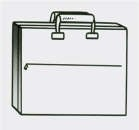
- トゥアンさんにです。
- トゥアンさんをです。
- トゥアンさんのです。
- トゥアンさんです。
Đáp án C
Đáp án trong bốn lựa chọn: トゥアンさんのです。
Đối chiếu loại thông tin, trợ từ, dạng chia và ý của toàn câu; chọn phương án phù hợp trong bốn lựa chọn. Dữ kiện minh họa không khẳng định thông tin cá nhân của học viên.
Nhãn TUAN trong Word là căn cứ sở hữu.
IKG-GRAM-01-M04-Q05
この辞書はあなたの辞書ですか。 Chọn câu phủ định.
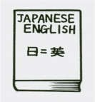
- いいえ、私のです。
- いいえ、私をありません。
- いいえ、私にです。
- いいえ、私のじゃありません。
Đáp án D
Đáp án trong bốn lựa chọn: いいえ、私のじゃありません。
Câu đáp phải phủ định đúng vị ngữ và giữ thì của câu hỏi; không chọn một câu khẳng định chỉ vì nó đúng ngữ pháp.
Hình từ điển không xác định chủ sở hữu; thêm yêu cầu phủ định.
Mục 5
IKG-GRAM-01-M05-Q01
あなたはベトナムの実習生ですか。
- サッカーです。
- 実習生の雑誌です。
- はい、そうです。
- 32歳です。
Đáp án C
Đáp án trong bốn lựa chọn: はい、そうです。
Đối chiếu loại thông tin, trợ từ, dạng chia và ý của toàn câu; chọn phương án phù hợp trong bốn lựa chọn. Dữ kiện minh họa không khẳng định thông tin cá nhân của học viên.
IKG-GRAM-01-M05-Q02
このシャープペンシルはドゥック先生のですか。
- 実習生の雑誌です。
- いいえ、私のです。
- 32歳です。
- サッカーです。
Đáp án B
Đáp án trong bốn lựa chọn: いいえ、私のです。
Đối chiếu loại thông tin, trợ từ, dạng chia và ý của toàn câu; chọn phương án phù hợp trong bốn lựa chọn. Dữ kiện minh họa không khẳng định thông tin cá nhân của học viên.
IKG-GRAM-01-M05-Q03
それは何の雑誌ですか。
- 32歳です。
- サッカーです。
- はい、そうです。
- 実習生の雑誌です。
Đáp án D
Đáp án trong bốn lựa chọn: 実習生の雑誌です。
Đối chiếu loại thông tin, trợ từ, dạng chia và ý của toàn câu; chọn phương án phù hợp trong bốn lựa chọn. Dữ kiện minh họa không khẳng định thông tin cá nhân của học viên.
IKG-GRAM-01-M05-Q04
マン先生はおいくつですか。
- リン先生のです。
- 32歳です。
- サッカーです。
- はい、そうです。
Đáp án B
Đáp án trong bốn lựa chọn: 32歳です。
Đối chiếu loại thông tin, trợ từ, dạng chia và ý của toàn câu; chọn phương án phù hợp trong bốn lựa chọn. Dữ kiện minh họa không khẳng định thông tin cá nhân của học viên.
IKG-GRAM-01-M05-Q05
あなたの趣味は何ですか。
- サッカーです。
- 32歳です。
- リン先生のです。
- はい、そうです。
Đáp án A
Đáp án trong bốn lựa chọn: サッカーです。
Đối chiếu loại thông tin, trợ từ, dạng chia và ý của toàn câu; chọn phương án phù hợp trong bốn lựa chọn. Dữ kiện minh họa không khẳng định thông tin cá nhân của học viên.
Mục 6
あれは誰のカメラですか。
私はホアです。今年24歳です。私はJVSセンターの教師です。私の友達はタインさんです。タインさんはJVS会社の社員ではありません。日本の会社のエンジニアです。タインさんの専門は機械の修理です。あのカメラはタインさんのです。その日本語の辞書もタインさんのです。
Chuẩn hóa các biến thể タィン／タイン thành タイン; 機械: máy móc; 修理: sửa chữa.
IKG-GRAM-01-M06-Q01
ホアさんの友達はだれですか。
- リンさんです。
- マン先生です。
- タインさんです。
- イナダ先生です。
Đáp án C
Đối chiếu đoạn đọc: タインさんです。
IKG-GRAM-01-M06-Q02
タインさんの仕事は何ですか。
- エンジニアです。
- 教師です。
- 学生です。
- 医者です。
Đáp án A
Đối chiếu đoạn đọc: エンジニアです。
IKG-GRAM-01-M06-Q03
あのカメラは誰のですか。
- リンさんのです。
- タインさんのです。
- ホアさんのです。
- イナダ先生のです。
Đáp án B
Đối chiếu đoạn đọc: タインさんのです。
IKG-GRAM-01-M06-Q04
あの日本語の辞書もタインさんのですか。
- はい、タインさんのです。
- いいえ、ホアさんのです。
- いいえ、リンさんのです。
- いいえ、先生のです。
Đáp án A
Đối chiếu đoạn đọc: はい、タインさんのです。
IKG-GRAM-01-M06-Q05
タインさんはJVS会社の社員ですか。
- はい、JVSセンターの教師です。
- いいえ、大学の学生です。
- いいえ、日本の会社のエンジニアです。
- はい、JVS会社の社員です。
Đáp án C
Đối chiếu đoạn đọc: いいえ、日本の会社のエンジニアです。
Bài 3–4
45 câu từ nguồn · 21 câu tiến độ lưu riêng
Mục 1
IKG-GRAM-02-M01-Q01
Cách đọc 8300円 là gì？
- はっせんさんびゃくまんえん
- はっせんさんびゃくえん
- はちせんさんひゃくえん
- はっせんさんひゃくえん
Đáp án B
Cách đọc được kiểm tra: 8300円 → はっせんさんびゃくえん.
IKG-GRAM-02-M01-Q02
Cách đọc 42300円 là gì？
- よんまんにせんさんびゃくえん
- よんまんにせんさんひゃくえん
- よんせんにひゃくさんじゅうえん
- よんまんさんぜんにひゃくえん
Đáp án A
Cách đọc được kiểm tra: 42300円 → よんまんにせんさんびゃくえん.
IKG-GRAM-02-M01-Q03
Cách đọc 542800円 là gì？
- ごじゅうよんまんにせんはちひゃくえん
- ごまんよんせんにひゃくはっぴゃくえん
- ごじゅうよんまんにせんはっせんえん
- ごじゅうよんまんにせんはっぴゃくえん
Đáp án D
Cách đọc được kiểm tra: 542800円 → ごじゅうよんまんにせんはっぴゃくえん.
IKG-GRAM-02-M01-Q04
Cách đọc chuẩn trong giáo trình của 7:15？
- しちじじゅうごふん
- しちじごじゅうふん
- しちじじゅうごじ
- しちじじゅうごぷん
Đáp án A
Cách đọc được kiểm tra: chuẩn trong giáo trình của 7:15 → しちじじゅうごふん.
Không dùng ななじ làm phương án sai tuyệt đối vì có cách dùng để tránh nghe nhầm.
IKG-GRAM-02-M01-Q05
Cách đọc 4:20？
- よじにじゅうごふん
- よじにじゅうはっぷん
- よじにじゅっぷん
- よんじにじゅっぷん
Đáp án C
Cách đọc được kiểm tra: 4:20 → よじにじゅっぷん.
IKG-GRAM-02-M01-Q06
Cách đọc 9:55？
- くじごじゅうごふん
- きゅうじごじゅうごふん
- くじごじゅうごぷん
- くじごじゅうふん
Đáp án A
Cách đọc được kiểm tra: 9:55 → くじごじゅうごふん.
IKG-GRAM-02-M01-Q07
Cách đọc 12:00？
- にじ
- じゅうにじ
- じゅうにふん
- じゅうにじはん
Đáp án B
Cách đọc được kiểm tra: 12:00 → じゅうにじ.
IKG-GRAM-02-M01-Q08
Cách đọc 11:45？
- じゅういちじよんじゅうごぷん
- じゅういちじよんじゅっごふん
- じゅういちじよんじゅうふん
- じゅういちじよんじゅうごふん
Đáp án D
Cách đọc được kiểm tra: 11:45 → じゅういちじよんじゅうごふん.
Mục 2
IKG-GRAM-02-M02-Q01
それはどこ（ ）時計ですか。—日本（ ）です。
- を・の
- で・に
- に・を
- の・の
Đáp án D
Điền lần lượt các ô từ trái sang phải: の・の. X nghĩa là không cần trợ từ.
Các ô theo thứ tự: の — quan hệ giữa hai danh từ; の — quan hệ giữa hai danh từ.
IKG-GRAM-02-M02-Q02
美術館（ ）休みは月曜日（ ）木曜日です。
- の・と
- を・と
- で・に
- に・を
Đáp án A
Điền lần lượt các ô từ trái sang phải: の・と. X nghĩa là không cần trợ từ.
Các ô theo thứ tự: の — quan hệ giữa hai danh từ; と — liệt kê, cùng với hoặc trích dẫn.
IKG-GRAM-02-M02-Q03
すみません。そのワイン（ ）見せてください。—どうぞ。どこ（ ）ワインですか。—イタリアのです。
- を・の
- が・の
- に・で
- へ・を
Đáp án A
Điền lần lượt các ô từ trái sang phải: を・の. X nghĩa là không cần trợ từ.
Các ô theo thứ tự: を — tân ngữ hoặc nơi đi qua; の — quan hệ giữa hai danh từ.
IKG-GRAM-02-M02-Q04
きのうの晩8時（ ）10時（ ）勉強しました。
- から・まで
- まで・から
- に・へ
- で・を
Đáp án A
Điền lần lượt các ô từ trái sang phải: から・まで. X nghĩa là không cần trợ từ.
Các ô theo thứ tự: から — điểm bắt đầu hoặc lý do; まで — điểm kết thúc.
IKG-GRAM-02-M02-Q05
パワー電気（ ）何（ ）会社ですか。
- で・を
- に・が
- は・の
- を・の
Đáp án C
Điền lần lượt các ô từ trái sang phải: は・の. X nghĩa là không cần trợ từ.
Các ô theo thứ tự: は — chủ đề; の — quan hệ giữa hai danh từ.
IKG-GRAM-02-M02-Q06
毎晩（ ）11時半（ ）寝ます。 X = không điền trợ từ.
- を・が
- X・に
- に・を
- で・へ
Đáp án B
Điền lần lượt các ô từ trái sang phải: X・に. X nghĩa là không cần trợ từ.
Các ô theo thứ tự: X — không dùng trợ từ; に — mốc giờ, đích hoặc đối tác tùy vị ngữ.
IKG-GRAM-02-M02-Q07
ニューヨーク（ ）今午前4時です。
- で
- に
- は
- を
Đáp án C
Đáp án trong bốn lựa chọn: は
Đối chiếu loại thông tin, trợ từ, dạng chia và ý của toàn câu; chọn phương án phù hợp trong bốn lựa chọn. Dữ kiện minh họa không khẳng định thông tin cá nhân của học viên.
IKG-GRAM-02-M02-Q08
銀行は3時（ ）終わります。
- を
- へ
- が
- に
Đáp án D
Đáp án trong bốn lựa chọn: に
Đối chiếu loại thông tin, trợ từ, dạng chia và ý của toàn câu; chọn phương án phù hợp trong bốn lựa chọn. Dữ kiện minh họa không khẳng định thông tin cá nhân của học viên.
Mục 3
IKG-GRAM-02-M03-Q01
それは（ ）のコーヒーですか。—フランスのコーヒーです。
- いつ
- なんじ
- どこ
- だれ
Đáp án C
Đáp án trong bốn lựa chọn: どこ
Dùng どこ để hỏi nơi chốn hoặc tên cơ quan trong ngữ cảnh.
IKG-GRAM-02-M03-Q02
今朝（ ）に起きましたか。—6時半に起きました。
- なんじ
- なん
- どこ
- だれ
Đáp án A
Đáp án trong bốn lựa chọn: なんじ
Đối chiếu loại thông tin, trợ từ, dạng chia và ý của toàn câu; chọn phương án phù hợp trong bốn lựa chọn. Dữ kiện minh họa không khẳng định thông tin cá nhân của học viên.
IKG-GRAM-02-M03-Q03
会社は（ ）ですか。—JVSです。
- なんさい
- どこ
- だれ
- いつ
Đáp án B
Đáp án trong bốn lựa chọn: どこ
Dùng どこ để hỏi nơi chốn hoặc tên cơ quan trong ngữ cảnh.
IKG-GRAM-02-M03-Q04
さくら大学の電話番号は（ ）ですか。—234の5678です。
- なんようび
- なんばん
- なんじ
- なんさい
Đáp án B
Đáp án trong bốn lựa chọn: なんばん
Đối chiếu loại thông tin, trợ từ, dạng chia và ý của toàn câu; chọn phương án phù hợp trong bốn lựa chọn. Dữ kiện minh họa không khẳng định thông tin cá nhân của học viên.
IKG-GRAM-02-M03-Q05
郵便局は（ ）から（ ）までですか。—月曜日から金曜日までです。
- 何人・何人
- 何曜日・何曜日
- 何時・何時
- 何歳・何歳
Đáp án B
Điền lần lượt các ô từ trái sang phải: 何曜日・何曜日. X nghĩa là không cần trợ từ.
Đối chiếu loại thông tin, trợ từ, dạng chia và ý của toàn câu; chọn phương án phù hợp trong bốn lựa chọn. Dữ kiện minh họa không khẳng định thông tin cá nhân của học viên.
IKG-GRAM-02-M03-Q06
みどり図書館は（ ）までですか。—6時までです。
- なんにん
- なんじ
- なんさい
- なんようび
Đáp án B
Đáp án trong bốn lựa chọn: なんじ
Đối chiếu loại thông tin, trợ từ, dạng chia và ý của toàn câu; chọn phương án phù hợp trong bốn lựa chọn. Dữ kiện minh họa không khẳng định thông tin cá nhân của học viên.
IKG-GRAM-02-M03-Q07
大阪デパートの休みは（ ）ですか。—木曜日です。
- なんようび
- なんじ
- なんさい
- なんがつ
Đáp án A
Đáp án trong bốn lựa chọn: なんようび
Đối chiếu loại thông tin, trợ từ, dạng chia và ý của toàn câu; chọn phương án phù hợp trong bốn lựa chọn. Dữ kiện minh họa không khẳng định thông tin cá nhân của học viên.
IKG-GRAM-02-M03-Q08
たばこ売り場は（ ）ですか。—3階です。
- なんにん
- なんがい
- なんさい
- なんじ
Đáp án B
Đáp án trong bốn lựa chọn: なんがい
Đối chiếu loại thông tin, trợ từ, dạng chia và ý của toàn câu; chọn phương án phù hợp trong bốn lựa chọn. Dữ kiện minh họa không khẳng định thông tin cá nhân của học viên.
Mục 4
IKG-GRAM-02-M04-Q01
昨日の晩、勉強しましたか。 Chọn câu khẳng định.
- はい、勉強しますでした。
- はい、勉強するました。
- はい、勉強しました。
- はい、勉強しませんでした。
Đáp án C
Đáp án trong bốn lựa chọn: はい、勉強しました。
Giữ đúng vị ngữ, trợ từ và thì của câu hỏi trong câu đáp khẳng định.
IKG-GRAM-02-M04-Q02
日曜日働きますか。 Chọn câu phủ định.
- いいえ、働くません。
- いいえ、働きましたです。
- いいえ、働きません。
- いいえ、働きます。
Đáp án C
Đáp án trong bốn lựa chọn: いいえ、働きません。
Câu đáp phải phủ định đúng vị ngữ và giữ thì của câu hỏi; không chọn một câu khẳng định chỉ vì nó đúng ngữ pháp.
IKG-GRAM-02-M04-Q03
休みは月曜日ですか。 Chọn câu phủ định.
- いいえ、月曜日じゃありません。
- いいえ、月曜日です。
- いいえ、月曜日をありません。
- いいえ、月曜日にです。
Đáp án A
Đáp án trong bốn lựa chọn: いいえ、月曜日じゃありません。
Câu đáp phải phủ định đúng vị ngữ và giữ thì của câu hỏi; không chọn một câu khẳng định chỉ vì nó đúng ngữ pháp.
IKG-GRAM-02-M04-Q04
おととい休みましたか。 Chọn câu phủ định.
- いいえ、休みませんでした。
- いいえ、休みます。
- いいえ、休むませんでした。
- いいえ、休みました。
Đáp án A
Đáp án trong bốn lựa chọn: いいえ、休みませんでした。
Câu đáp phải phủ định đúng vị ngữ và giữ thì của câu hỏi; không chọn một câu khẳng định chỉ vì nó đúng ngữ pháp.
IKG-GRAM-02-M04-Q05
大学は5時に終わりますか。 Chọn câu khẳng định.
- はい、5時へ終わります。
- はい、5時が終わります。
- はい、5時に終わります。
- はい、5時を終わります。
Đáp án C
Đáp án trong bốn lựa chọn: はい、5時に終わります。
Giữ đúng vị ngữ, trợ từ và thì của câu hỏi trong câu đáp khẳng định.
IKG-GRAM-02-M04-Q06
今朝6時半に起きましたか。 Chọn câu phủ định.
- いいえ、起きませんでした。
- いいえ、起きました。
- いいえ、起きるませんでした。
- いいえ、起きますでした。
Đáp án A
Đáp án trong bốn lựa chọn: いいえ、起きませんでした。
Câu đáp phải phủ định đúng vị ngữ và giữ thì của câu hỏi; không chọn một câu khẳng định chỉ vì nó đúng ngữ pháp.
Mục 5
IKG-GRAM-02-M05-Q01
あなたの国は今何時ですか。 Chọn câu trả lời về giờ.
- 今、8時です。
- ベトナムです。
- 月曜日です。
- 100円です。
Đáp án A
Đáp án trong bốn lựa chọn: 今、8時です。
Đối chiếu loại thông tin, trợ từ, dạng chia và ý của toàn câu; chọn phương án phù hợp trong bốn lựa chọn. Dữ kiện minh họa không khẳng định thông tin cá nhân của học viên.
Giờ là ví dụ, không phải thời gian thực.
IKG-GRAM-02-M05-Q02
あなたの時計は中国のですか。 Chọn câu phủ định.
- いいえ、中国をありません。
- いいえ、中国にです。
- いいえ、中国のじゃありません。
- いいえ、中国のです。
Đáp án C
Đáp án trong bốn lựa chọn: いいえ、中国のじゃありません。
Câu đáp phải phủ định đúng vị ngữ và giữ thì của câu hỏi; không chọn một câu khẳng định chỉ vì nó đúng ngữ pháp.
Bổ sung yêu cầu phủ định cho câu cá nhân.
IKG-GRAM-02-M05-Q03
きのうの晩何時まで勉強しましたか。 Chọn câu phù hợp.
- 10時からですか。
- 月曜日に寝ます。
- 図書館です。
- 10時まで勉強しました。
Đáp án D
Đáp án trong bốn lựa chọn: 10時まで勉強しました。
Đối chiếu loại thông tin, trợ từ, dạng chia và ý của toàn câu; chọn phương án phù hợp trong bốn lựa chọn. Dữ kiện minh họa không khẳng định thông tin cá nhân của học viên.
Mốc giờ là ví dụ.
IKG-GRAM-02-M05-Q04
あなたの教室は2階ですか。 Chọn câu khẳng định.
- はい、2階です。
- はい、2階をです。
- はい、2階にです。
- はい、2階からです。
Đáp án A
Đáp án trong bốn lựa chọn: はい、2階です。
Giữ đúng vị ngữ, trợ từ và thì của câu hỏi trong câu đáp khẳng định.
IKG-GRAM-02-M05-Q05
今日は何曜日ですか。 Chọn câu trả lời về thứ.
- 8時です。
- 100円です。
- ベトナムです。
- 月曜日です。
Đáp án D
Đáp án trong bốn lựa chọn: 月曜日です。
Đối chiếu loại thông tin, trợ từ, dạng chia và ý của toàn câu; chọn phương án phù hợp trong bốn lựa chọn. Dữ kiện minh họa không khẳng định thông tin cá nhân của học viên.
Thứ là ví dụ, không xác định ngày hiện tại.
IKG-GRAM-02-M05-Q06
お国はどこですか。 Chọn câu trả lời về quốc gia.
- ベトナムです。
- ナムです。
- 24さいです。
- 8時です。
Đáp án A
Đáp án trong bốn lựa chọn: ベトナムです。
Đối chiếu loại thông tin, trợ từ, dạng chia và ý của toàn câu; chọn phương án phù hợp trong bốn lựa chọn. Dữ kiện minh họa không khẳng định thông tin cá nhân của học viên.
IKG-GRAM-02-M05-Q07
【TOYOTA sản xuất ô tô】TOYOTAは何の会社ですか。
- 時計の会社です。
- カメラの会社です。
- ワインの会社です。
- 自動車の会社です。
Đáp án D
Đáp án trong bốn lựa chọn: 自動車の会社です。
Đối chiếu loại thông tin, trợ từ, dạng chia và ý của toàn câu; chọn phương án phù hợp trong bốn lựa chọn. Dữ kiện minh họa không khẳng định thông tin cá nhân của học viên.
Bổ sung dữ kiện sản phẩm.
IKG-GRAM-02-M05-Q08
毎日何時から何時まで勉強しますか。 Chọn câu đúng cấu trúc.
- 7時から4時まで勉強します。
- 7時まで4時から勉強します。
- 7時を4時に勉強します。
- 7時の4時が勉強します。
Đáp án A
Đáp án trong bốn lựa chọn: 7時から4時まで勉強します。
Đối chiếu loại thông tin, trợ từ, dạng chia và ý của toàn câu; chọn phương án phù hợp trong bốn lựa chọn. Dữ kiện minh họa không khẳng định thông tin cá nhân của học viên.
IKG-GRAM-02-M05-Q09
あなたの手帳はいくらですか。 Chọn câu trả lời về giá.
- 5人です。
- 5階です。
- 500円です。
- 5時です。
Đáp án C
Đáp án trong bốn lựa chọn: 500円です。
Đối chiếu loại thông tin, trợ từ, dạng chia và ý của toàn câu; chọn phương án phù hợp trong bốn lựa chọn. Dữ kiện minh họa không khẳng định thông tin cá nhân của học viên.
Giá là ví dụ.
IKG-GRAM-02-M05-Q10
トイレはどちらですか。 Chọn câu chỉ nơi chốn.
- 24さいです。
- あちらです。
- 5時です。
- 500円です。
Đáp án B
Đáp án trong bốn lựa chọn: あちらです。
Đối chiếu loại thông tin, trợ từ, dạng chia và ý của toàn câu; chọn phương án phù hợp trong bốn lựa chọn. Dữ kiện minh họa không khẳng định thông tin cá nhân của học viên.
Mục 6
リンさんの一週間
リンさんは中国人です。リンさんはJVSセンターの実習生です。今JVSセンターで日本語を勉強します。毎朝5時半に起きます。JVSセンターは午前7時半から午後4時半までです。昼休みは11時半から12時45分までです。日本語の勉強は月曜日から土曜日までです。毎晩も勉強します。毎週大変ですが、楽しいです。
Chuẩn hóa dấu câu; giữ dữ kiện giờ và ngày học trong nguồn.
IKG-GRAM-02-M06-Q01
リンさんは実習生ですか。
- いいえ、エンジニアです。
- はい、実習生です。
- いいえ、教師です。
- いいえ、医者です。
Đáp án B
Đối chiếu đoạn đọc: はい、実習生です。
IKG-GRAM-02-M06-Q02
リンさんはどこの実習生ですか。
- さくら大学の実習生です。
- 日本の会社の実習生です。
- 大阪デパートの実習生です。
- JVSセンターの実習生です。
Đáp án D
Đối chiếu đoạn đọc: JVSセンターの実習生です。
IKG-GRAM-02-M06-Q03
リンさんは何時に起きますか。
- 7時半です。
- 11時半です。
- 5時半です。
- 6時半です。
Đáp án C
Đối chiếu đoạn đọc: 5時半です。
IKG-GRAM-02-M06-Q04
昼休みは何時から何時までですか。
- 7時半から4時半までです。
- 12時半から1時までです。
- 11時から12時半までです。
- 11時半から12時45分までです。
Đáp án D
Đối chiếu đoạn đọc: 11時半から12時45分までです。
IKG-GRAM-02-M06-Q05
リンさんは日曜日も勉強しますか。
- いいえ、日曜日は勉強しません。
- はい、日曜日も勉強します。
- はい、日曜日だけ勉強します。
- いいえ、土曜日も勉強しません。
Đáp án A
Đối chiếu đoạn đọc: いいえ、日曜日は勉強しません。
Căn cứ văn bản nêu học từ thứ Hai đến thứ Bảy; không suy rộng sinh hoạt thực tế.
Bài 5–6
57 câu từ nguồn · 11 câu tiến độ lưu riêng
Mục 1
IKG-GRAM-03-M01-Q01
（ ）JVSセンターへ来ましたか。—10月20日に来ました。
- どこ
- いつ
- だれ
- なに
Đáp án B
Đáp án trong bốn lựa chọn: いつ
Dùng いつ để hỏi thời gian.
IKG-GRAM-03-M01-Q02
日曜日（ ）へ行きましたか。—どこも行きませんでした。
- どこ
- だれ
- いつ
- なん
Đáp án A
Đáp án trong bốn lựa chọn: どこ
Dùng どこ để hỏi nơi chốn hoặc tên cơ quan trong ngữ cảnh.
IKG-GRAM-03-M01-Q03
誕生日は（ ）ですか。—8月19日です。
- いつ
- なに
- だれ
- どこ
Đáp án A
Đáp án trong bốn lựa chọn: いつ
Dùng いつ để hỏi thời gian.
IKG-GRAM-03-M01-Q04
レストランで（ ）を食べますか。—魚を食べます。
- だれ
- なに
- いつ
- どこ
Đáp án B
Đáp án trong bốn lựa chọn: なに
Đối chiếu loại thông tin, trợ từ, dạng chia và ý của toàn câu; chọn phương án phù hợp trong bốn lựa chọn. Dữ kiện minh họa không khẳng định thông tin cá nhân của học viên.
IKG-GRAM-03-M01-Q05
いつも（ ）でノートを買いますか。—デパートで買います。
- だれ
- いつ
- なん
- どこ
Đáp án D
Đáp án trong bốn lựa chọn: どこ
Dùng どこ để hỏi nơi chốn hoặc tên cơ quan trong ngữ cảnh.
Mục 2
IKG-GRAM-03-M02-Q01
今朝、何（ ）食べませんでした。
- で
- も
- を
- へ
Đáp án B
Đáp án trong bốn lựa chọn: も
Đối chiếu loại thông tin, trợ từ, dạng chia và ý của toàn câu; chọn phương án phù hợp trong bốn lựa chọn. Dữ kiện minh họa không khẳng định thông tin cá nhân của học viên.
IKG-GRAM-03-M02-Q02
毎朝、歩いて（ ）学校へ行きますか。 X = không điền.
- を
- に
- X
- で
Đáp án C
Đáp án trong bốn lựa chọn: X
Đối chiếu loại thông tin, trợ từ, dạng chia và ý của toàn câu; chọn phương án phù hợp trong bốn lựa chọn. Dữ kiện minh họa không khẳng định thông tin cá nhân của học viên.
IKG-GRAM-03-M02-Q03
昨日、図書館（ ）本を読みました。それから友達（ ）映画を見ました。
- を・に
- へ・で
- で・と
- に・と
Đáp án C
Điền lần lượt các ô từ trái sang phải: で・と. X nghĩa là không cần trợ từ.
Các ô theo thứ tự: で — nơi hoạt động, phương tiện hoặc cách thức; と — liệt kê, cùng với hoặc trích dẫn.
IKG-GRAM-03-M02-Q04
明日、一緒に私の家（ ）帰りませんか。—ええ、そうしましょう。じゃ、9時半に学校（ ）会いましょう。
- へ・を
- と・に
- へ・で
- を・で
Đáp án C
Điền lần lượt các ô từ trái sang phải: へ・で. X nghĩa là không cần trợ từ.
Các ô theo thứ tự: へ — hướng/đích di chuyển; で — nơi hoạt động, phương tiện hoặc cách thức.
IKG-GRAM-03-M02-Q05
明日、公園（ ）恋人（ ）会います。
- に・で
- を・へ
- へ・を
- で・に
Đáp án D
Điền lần lượt các ô từ trái sang phải: で・に. X nghĩa là không cần trợ từ.
Các ô theo thứ tự: で — nơi hoạt động, phương tiện hoặc cách thức; に — mốc giờ, đích hoặc đối tác tùy vị ngữ.
IKG-GRAM-03-M02-Q06
JVSセンター（ ）学生は何時に起きますか。
- に
- の
- を
- で
Đáp án B
Đáp án trong bốn lựa chọn: の
Đối chiếu loại thông tin, trợ từ, dạng chia và ý của toàn câu; chọn phương án phù hợp trong bốn lựa chọn. Dữ kiện minh họa không khẳng định thông tin cá nhân của học viên.
IKG-GRAM-03-M02-Q07
学生はどこ（ ）食べますか。
- に
- を
- へ
- で
Đáp án D
Đáp án trong bốn lựa chọn: で
Đối chiếu loại thông tin, trợ từ, dạng chia và ý của toàn câu; chọn phương án phù hợp trong bốn lựa chọn. Dữ kiện minh họa không khẳng định thông tin cá nhân của học viên.
Mục 3
IKG-GRAM-03-M03-Q01
Nhìn hình 1: chọn từ tiếng Nhật.
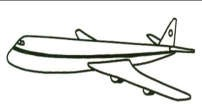
- 自転車
- 飛行機
- 電車
- 船
Đáp án B
Đáp án trong bốn lựa chọn: 飛行機
Đối chiếu loại thông tin, trợ từ, dạng chia và ý của toàn câu; chọn phương án phù hợp trong bốn lựa chọn. Dữ kiện minh họa không khẳng định thông tin cá nhân của học viên.
IKG-GRAM-03-M03-Q02
Nhìn hình 2: chọn từ tiếng Nhật.
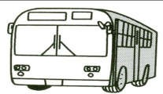
- 船
- 飛行機
- バス
- タクシー
Đáp án C
Đáp án trong bốn lựa chọn: バス
Đối chiếu loại thông tin, trợ từ, dạng chia và ý của toàn câu; chọn phương án phù hợp trong bốn lựa chọn. Dữ kiện minh họa không khẳng định thông tin cá nhân của học viên.
IKG-GRAM-03-M03-Q03
Nhìn hình 3: chọn từ tiếng Nhật.
- 自転車
- 電車
- バス
- バイク
Đáp án D
Đáp án trong bốn lựa chọn: バイク
Đối chiếu loại thông tin, trợ từ, dạng chia và ý của toàn câu; chọn phương án phù hợp trong bốn lựa chọn. Dữ kiện minh họa không khẳng định thông tin cá nhân của học viên.
IKG-GRAM-03-M03-Q04
Nhìn hình 4: chọn từ tiếng Nhật. Câu này đang chờ xác minh hình.

- 銀行
- 病院
- 学校
- 会社
Đáp án chờ xác minh
CHƯA CHỐT ĐÁP ÁN. Hình tòa nhà không có nhãn, chưa phân biệt chắc 学校/会社. Câu được giữ để đối chiếu nhưng loại khỏi phần tự chấm.
IKG-GRAM-03-M03-Q05
Nhìn hình 5: chọn cụm từ mô tả hành động.
- 映画を見ます。
- 手紙を書きます。
- ご飯を食べます。
- 本を読みます。
Đáp án C
Đáp án trong bốn lựa chọn: ご飯を食べます。
Đối chiếu loại thông tin, trợ từ, dạng chia và ý của toàn câu; chọn phương án phù hợp trong bốn lựa chọn. Dữ kiện minh họa không khẳng định thông tin cá nhân của học viên.
IKG-GRAM-03-M03-Q06
Nhìn hình 6: chọn cụm từ mô tả hành động. Câu này đang chờ xác minh hình.

- 水を飲みます。
- パンを食べます。
- 本を読みます。
- たばこを吸います。
Đáp án chờ xác minh
CHƯA CHỐT ĐÁP ÁN. Hình người đưa vật lên miệng không đủ rõ để chốt uống/ăn/hút; không dùng đáp án suy đoán để chấm. Câu được giữ để đối chiếu nhưng loại khỏi phần tự chấm.
IKG-GRAM-03-M03-Q07
Nhìn hình 7: chọn cụm từ mô tả hành động.
- 映画を見ます。
- 手紙を書きます。
- たばこを吸います。
- 水を飲みます。
Đáp án C
Đáp án trong bốn lựa chọn: たばこを吸います。
Đối chiếu loại thông tin, trợ từ, dạng chia và ý của toàn câu; chọn phương án phù hợp trong bốn lựa chọn. Dữ kiện minh họa không khẳng định thông tin cá nhân của học viên.
IKG-GRAM-03-M03-Q08
Nhìn hình 8: chọn từ gọi chung nhóm đồ vật trong hình.
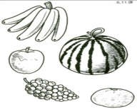
- 魚
- 果物
- 野菜
- 飲み物
Đáp án B
Đáp án trong bốn lựa chọn: 果物
Đối chiếu loại thông tin, trợ từ, dạng chia và ý của toàn câu; chọn phương án phù hợp trong bốn lựa chọn. Dữ kiện minh họa không khẳng định thông tin cá nhân của học viên.
IKG-GRAM-03-M03-Q09
Nhìn hình 9: chọn cụm từ mô tả hành động.
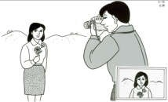
- 音楽を聞きます。
- 新聞を読みます。
- ご飯を食べます。
- 写真を撮ります。
Đáp án D
Đáp án trong bốn lựa chọn: 写真を撮ります。
Đối chiếu loại thông tin, trợ từ, dạng chia và ý của toàn câu; chọn phương án phù hợp trong bốn lựa chọn. Dữ kiện minh họa không khẳng định thông tin cá nhân của học viên.
IKG-GRAM-03-M03-Q10
Nhìn hình 10: chọn cụm từ mô tả hành động.
- 新聞を読みます。
- ご飯を食べます。
- 音楽を聞きます。
- 写真を撮ります。
Đáp án C
Đáp án trong bốn lựa chọn: 音楽を聞きます。
Đối chiếu loại thông tin, trợ từ, dạng chia và ý của toàn câu; chọn phương án phù hợp trong bốn lựa chọn. Dữ kiện minh họa không khẳng định thông tin cá nhân của học viên.
IKG-GRAM-03-M03-Q11
Nhìn hình 11: chọn từ tiếng Nhật.
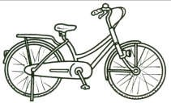
- 電車
- タクシー
- 自転車
- バイク
Đáp án C
Đáp án trong bốn lựa chọn: 自転車
Đối chiếu loại thông tin, trợ từ, dạng chia và ý của toàn câu; chọn phương án phù hợp trong bốn lựa chọn. Dữ kiện minh họa không khẳng định thông tin cá nhân của học viên.
IKG-GRAM-03-M03-Q12
Nhìn hình 12: chọn từ tiếng Nhật.
- バス
- 電車
- 自転車
- タクシー
Đáp án D
Đáp án trong bốn lựa chọn: タクシー
Đối chiếu loại thông tin, trợ từ, dạng chia và ý của toàn câu; chọn phương án phù hợp trong bốn lựa chọn. Dữ kiện minh họa không khẳng định thông tin cá nhân của học viên.
IKG-GRAM-03-M03-Q13
Nhìn hình 13: chọn từ tiếng Nhật.
- 船
- 飛行機
- 電車
- バイク
Đáp án A
Đáp án trong bốn lựa chọn: 船
Đối chiếu loại thông tin, trợ từ, dạng chia và ý của toàn câu; chọn phương án phù hợp trong bốn lựa chọn. Dữ kiện minh họa không khẳng định thông tin cá nhân của học viên.
IKG-GRAM-03-M03-Q14
Nhìn hình 14: chọn từ tiếng Nhật.
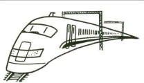
- 自転車
- 船
- バス
- 新幹線
Đáp án D
Đáp án trong bốn lựa chọn: 新幹線
Đối chiếu loại thông tin, trợ từ, dạng chia và ý của toàn câu; chọn phương án phù hợp trong bốn lựa chọn. Dữ kiện minh họa không khẳng định thông tin cá nhân của học viên.
IKG-GRAM-03-M03-Q15
Nhìn hình 15: chọn cách diễn đạt đi bộ.
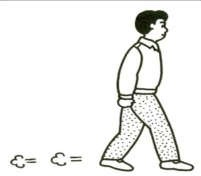
- 電車で行きます。
- バスで行きます。
- 自転車で行きます。
- 歩いて行きます。
Đáp án D
Đáp án trong bốn lựa chọn: 歩いて行きます。
Đối chiếu loại thông tin, trợ từ, dạng chia và ý của toàn câu; chọn phương án phù hợp trong bốn lựa chọn. Dữ kiện minh họa không khẳng định thông tin cá nhân của học viên.
Mục 4
IKG-GRAM-03-M04-Q01
Cách đọc từ được hỏi: 日本
- ひほん
- にほう
- きほん
- にほん
Đáp án D
Cách đọc được kiểm tra: 日本 → にほん.
IKG-GRAM-03-M04-Q02
Cách đọc từ được hỏi: 日曜日
- にちようび
- にようび
- げつようび
- にちよび
Đáp án A
Cách đọc được kiểm tra: 日曜日 → にちようび.
IKG-GRAM-03-M04-Q03
Cách đọc từ được hỏi: 自転車
- じてんしゃ
- じでんしゃ
- じどうしゃ
- じどしゃ
Đáp án A
Cách đọc được kiểm tra: 自転車 → じてんしゃ.
IKG-GRAM-03-M04-Q04
Cách đọc từ được hỏi: 去年
- きょうねん
- らいねん
- ことし
- きょねん
Đáp án D
Cách đọc được kiểm tra: 去年 → きょねん.
IKG-GRAM-03-M04-Q05
Cách đọc từ được hỏi: 電車
- でんき
- でんしゃ
- でんさ
- でしゃ
Đáp án B
Cách đọc được kiểm tra: 電車 → でんしゃ.
Mục 5
IKG-GRAM-03-M05-Q01
Sắp xếp: 一緒に／コーヒー／午後／を／飲みませんか
- 午後、一緒にコーヒーで飲みませんか。
- 午後、一緒にコーヒーを飲みませんか。
- 午後、一緒にコーヒーが飲みませんか。
- 午後、一緒にをコーヒー飲みませんか。
Đáp án B
Đáp án trong bốn lựa chọn: 午後、一緒にコーヒーを飲みませんか。
Giữ đủ thành phần gốc; trợ từ đi cùng danh từ, động từ/cụm vị ngữ ở cuối. Không coi việc đổi vị trí các trạng ngữ đúng ngữ pháp là lỗi.
Chấp nhận đổi thứ tự trạng ngữ hợp ngữ pháp, không đưa biến thể đúng vào phương án sai.
IKG-GRAM-03-M05-Q02
Sắp xếp: レストラン／を／ご飯／食べました／昨日／で／と／恋人
- 昨日、恋人をレストランとご飯で食べました。
- 昨日、恋人とレストランでご飯を食べました。
- 昨日、恋人でレストランとご飯を食べました。
- 昨日、恋人とレストランをご飯で食べました。
Đáp án B
Đáp án trong bốn lựa chọn: 昨日、恋人とレストランでご飯を食べました。
Giữ đủ thành phần gốc; trợ từ đi cùng danh từ, động từ/cụm vị ngữ ở cuối. Không coi việc đổi vị trí các trạng ngữ đúng ngữ pháp là lỗi.
IKG-GRAM-03-M05-Q03
Sắp xếp: で／牛乳／買いました／と／パン／スーパー／を
- スーパーで牛乳とパンを買いました。
- スーパーを牛乳とパンで買いました。
- スーパーで牛乳をパンと買いましたを。
- スーパーと牛乳でパンを買いました。
Đáp án A
Đáp án trong bốn lựa chọn: スーパーで牛乳とパンを買いました。
Giữ đủ thành phần gốc; trợ từ đi cùng danh từ, động từ/cụm vị ngữ ở cuối. Không coi việc đổi vị trí các trạng ngữ đúng ngữ pháp là lỗi.
IKG-GRAM-03-M05-Q04
Sắp xếp: 写真／友達／を／撮りました／と／で／公園
- 公園で友達を写真と撮りました。
- 公園で友達と写真を撮りました。
- 公園と友達で写真を撮りました。
- 公園を友達と写真で撮りました。
Đáp án B
Đáp án trong bốn lựa chọn: 公園で友達と写真を撮りました。
Giữ đủ thành phần gốc; trợ từ đi cùng danh từ, động từ/cụm vị ngữ ở cuối. Không coi việc đổi vị trí các trạng ngữ đúng ngữ pháp là lỗi.
IKG-GRAM-03-M05-Q05
Sắp xếp: ご飯／食べましょう／を／で／食堂
- 食堂をご飯で食べましょう。
- 食堂にご飯が食べましょう。
- 食堂とご飯を食べましょう。
- 食堂でご飯を食べましょう。
Đáp án D
Đáp án trong bốn lựa chọn: 食堂でご飯を食べましょう。
Giữ đủ thành phần gốc; trợ từ đi cùng danh từ, động từ/cụm vị ngữ ở cuối. Không coi việc đổi vị trí các trạng ngữ đúng ngữ pháp là lỗi.
Mục 6
IKG-GRAM-03-M06-Q01
A：Bさん。 B：（ ）。
- どこで
- 何時
- ひとり
- なんですか
Đáp án D
Đáp án trong bốn lựa chọn: なんですか
Đối chiếu loại thông tin, trợ từ, dạng chia và ý của toàn câu; chọn phương án phù hợp trong bốn lựa chọn. Dữ kiện minh họa không khẳng định thông tin cá nhân của học viên.
IKG-GRAM-03-M06-Q02
明日、（ ）と公園へ行きます。
- どこで
- 友達
- いっしょに
- 何時
Đáp án B
Đáp án trong bốn lựa chọn: 友達
Đối chiếu loại thông tin, trợ từ, dạng chia và ý của toàn câu; chọn phương án phù hợp trong bốn lựa chọn. Dữ kiện minh họa không khẳng định thông tin cá nhân của học viên.
IKG-GRAM-03-M06-Q03
Bさんも（ ）行きませんか。
- 何時
- なんですか
- いっしょに
- どこで
Đáp án C
Đáp án trong bốn lựa chọn: いっしょに
Đối chiếu loại thông tin, trợ từ, dạng chia và ý của toàn câu; chọn phương án phù hợp trong bốn lựa chọn. Dữ kiện minh họa không khẳng định thông tin cá nhân của học viên.
IKG-GRAM-03-M06-Q04
どこの公園へ（ ）。
- 行きます
- 来ます
- 会います
- 行きますか
Đáp án D
Đáp án trong bốn lựa chọn: 行きますか
Đối chiếu loại thông tin, trợ từ, dạng chia và ý của toàn câu; chọn phương án phù hợp trong bốn lựa chọn. Dữ kiện minh họa không khẳng định thông tin cá nhân của học viên.
IKG-GRAM-03-M06-Q05
THỦ LỆ動物園へ（ ）。
- 行きます
- 行きますか
- 会います
- どこで
Đáp án A
Đáp án trong bốn lựa chọn: 行きます
Đối chiếu loại thông tin, trợ từ, dạng chia và ý của toàn câu; chọn phương án phù hợp trong bốn lựa chọn. Dữ kiện minh họa không khẳng định thông tin cá nhân của học viên.
IKG-GRAM-03-M06-Q06
（ ）に行きますか。—9時に行きます。
- どこで
- だれ
- なんで
- 何時
Đáp án D
Đáp án trong bốn lựa chọn: 何時
Dùng 何時 để hỏi giờ.
IKG-GRAM-03-M06-Q07
（ ）会いますか。—駅で会います。
- どこで
- なんで
- 何時に
- だれを
Đáp án A
Đáp án trong bốn lựa chọn: どこで
Đối chiếu loại thông tin, trợ từ, dạng chia và ý của toàn câu; chọn phương án phù hợp trong bốn lựa chọn. Dữ kiện minh họa không khẳng định thông tin cá nhân của học viên.
IKG-GRAM-03-M06-Q08
駅で（ ）。
- 来ます
- なんですか
- 会います
- 行きます
Đáp án C
Đáp án trong bốn lựa chọn: 会います
Đối chiếu loại thông tin, trợ từ, dạng chia và ý của toàn câu; chọn phương án phù hợp trong bốn lựa chọn. Dữ kiện minh họa không khẳng định thông tin cá nhân của học viên.
IKG-GRAM-03-M06-Q09
（ ）行きますか。—バイクで行きます。
- どこで
- 何時に
- だれを
- なんで
Đáp án D
Đáp án trong bốn lựa chọn: なんで
Đối chiếu loại thông tin, trợ từ, dạng chia và ý của toàn câu; chọn phương án phù hợp trong bốn lựa chọn. Dữ kiện minh họa không khẳng định thông tin cá nhân của học viên.
IKG-GRAM-03-M06-Q10
はい、分かりました。じゃ、（ ）ね。
- また
- なんで
- どこで
- 何時
Đáp án A
Đáp án trong bốn lựa chọn: また
Đối chiếu loại thông tin, trợ từ, dạng chia và ý của toàn câu; chọn phương án phù hợp trong bốn lựa chọn. Dữ kiện minh họa không khẳng định thông tin cá nhân của học viên.
Mục 7
IKG-GRAM-03-M07-Q01
今日は何月何日何曜日ですか。 Chọn câu đúng loại thông tin.
- 5月1日、月曜日です。
- 午前8時です。
- ベトナムです。
- 500円です。
Đáp án A
Đáp án trong bốn lựa chọn: 5月1日、月曜日です。
Đối chiếu loại thông tin, trợ từ, dạng chia và ý của toàn câu; chọn phương án phù hợp trong bốn lựa chọn. Dữ kiện minh họa không khẳng định thông tin cá nhân của học viên.
Ngày là tình huống ví dụ.
IKG-GRAM-03-M07-Q02
何でふるさとへ帰りますか。
- バスと帰ります。
- バスが帰ります。
- バスで帰ります。
- バスを帰ります。
Đáp án C
Đáp án trong bốn lựa chọn: バスで帰ります。
Đối chiếu loại thông tin, trợ từ, dạng chia và ý của toàn câu; chọn phương án phù hợp trong bốn lựa chọn. Dữ kiện minh họa không khẳng định thông tin cá nhân của học viên.
Phương tiện là ví dụ.
IKG-GRAM-03-M07-Q03
今晩、一緒にスーパーへ行きませんか。 Chọn câu nhận lời.
- ええ、行きましょう。
- ええ、行きませんでした。
- ええ、行きますでした。
- ええ、行くました。
Đáp án A
Đáp án trong bốn lựa chọn: ええ、行きましょう。
Đối chiếu loại thông tin, trợ từ, dạng chia và ý của toàn câu; chọn phương án phù hợp trong bốn lựa chọn. Dữ kiện minh họa không khẳng định thông tin cá nhân của học viên.
IKG-GRAM-03-M07-Q04
今朝、何時にご飯を食べましたか。
- 7時へ食べました。
- 7時と食べました。
- 7時に食べました。
- 7時を食べました。
Đáp án C
Đáp án trong bốn lựa chọn: 7時に食べました。
Đối chiếu loại thông tin, trợ từ, dạng chia và ý của toàn câu; chọn phương án phù hợp trong bốn lựa chọn. Dữ kiện minh họa không khẳng định thông tin cá nhân của học viên.
Giờ là ví dụ.
IKG-GRAM-03-M07-Q05
明日、何をしますか。 Chọn câu nói về ngày mai.
- 先週勉強しました。
- 勉強します。
- 昨日勉強しました。
- おととい勉強しました。
Đáp án B
Đáp án trong bốn lựa chọn: 勉強します。
Đối chiếu loại thông tin, trợ từ, dạng chia và ý của toàn câu; chọn phương án phù hợp trong bốn lựa chọn. Dữ kiện minh họa không khẳng định thông tin cá nhân của học viên.
Hoạt động là ví dụ.
Mục 8
リンさんの毎日
リンさんは毎朝6時45分に起きます。朝ご飯はいつもパンを食べます。それからミルクを飲みます。パンとミルクはスーパーで買います。時々デパートで買います。7時半にバイクで会社へ行きます。会社は8時から5時までです。5時半に家へ帰ります。7時に晩ご飯を食べます。それから映画を見ます。日本語の本を読みます。夜11時に寝ます。土曜日と日曜日は働きません。土曜日はどこも行きません。家でレポートを書きます。日曜日は12時まで寝ます。午後スーパーへ行きます。食べ物と飲み物を買います。
Sửa いいえ thành 家で theo câu in trong Word; chuẩn hóa khoảng trắng, không đổi sinh hoạt.
IKG-GRAM-03-M08-Q01
毎朝、リンさんは7時15分前に起きますか。
- いいえ、7時15分に起きます。
- いいえ、7時45分に起きます。
- いいえ、5時半に起きます。
- はい、6時45分に起きます。
Đáp án D
Đối chiếu đoạn đọc: はい、6時45分に起きます。
IKG-GRAM-03-M08-Q02
朝ご飯はどこで買いますか。
- いつも会社で買います。
- いつもレストランで買います。
- いつもスーパーで買います。時々デパートで買います。
- いつも駅で買います。
Đáp án C
Đối chiếu đoạn đọc: いつもスーパーで買います。時々デパートで買います。
IKG-GRAM-03-M08-Q03
リンさんは何曜日から何曜日まで働きますか。
- 月曜日から金曜日までです。
- 月曜日から日曜日までです。
- 土曜日から日曜日までです。
- 火曜日から土曜日までです。
Đáp án A
Đối chiếu đoạn đọc: 月曜日から金曜日までです。
Văn bản nói không làm thứ Bảy và Chủ nhật.
IKG-GRAM-03-M08-Q04
日曜日、何をしますか。
- 朝会社へ行きます。
- 会社でレポートを書きます。
- 友達と図書館へ行きます。
- 12時まで寝て、午後スーパーへ行きます。
Đáp án D
Đối chiếu đoạn đọc: 12時まで寝て、午後スーパーへ行きます。
IKG-GRAM-03-M08-Q05
リンさんは会社でレポートを書きますか。
- はい、毎日会社で書きます。
- はい、日曜日に会社で書きます。
- いいえ、スーパーで書きます。
- いいえ、土曜日に家で書きます。
Đáp án D
Đối chiếu đoạn đọc: いいえ、土曜日に家で書きます。
Bài 7–8
68 câu từ nguồn · 14 câu tiến độ lưu riêng
Mục 1
IKG-GRAM-04-M01-Q01
Cách đọc: 先週
- せんしゅう
- せんしょう
- ぜんしょう
- ぜんしゅう
Đáp án A
Cách đọc được kiểm tra: 先週 → せんしゅう.
IKG-GRAM-04-M01-Q02
Cách đọc: 母
- あね
- あに
- ちち
- はは
Đáp án D
Cách đọc được kiểm tra: 母 → はは.
IKG-GRAM-04-M01-Q03
Cách đọc phần 見 trong 見せました
- の
- み
- さ
- き
Đáp án B
Cách đọc được kiểm tra: 見 → み.
IKG-GRAM-04-M01-Q04
Cách đọc: 友だち
- ともたち
- ともだた
- ともだち
- とまだち
Đáp án C
Cách đọc được kiểm tra: 友だち → ともだち.
IKG-GRAM-04-M01-Q05
Cách đọc 家 trong 友だちの家で
- こうえん
- きょうしつ
- うち
- にわ
Đáp án C
Cách đọc được kiểm tra: 家 → うち.
IKG-GRAM-04-M01-Q06
Cách đọc phần 聞 trong 聞きました
- か
- う
- ま
- き
Đáp án D
Cách đọc được kiểm tra: 聞 → き.
IKG-GRAM-04-M01-Q07
Cách đọc: 大きい
- あおきい
- おおきい
- おきい
- おおき
Đáp án B
Cách đọc được kiểm tra: 大きい → おおきい.
IKG-GRAM-04-M01-Q08
Cách đọc: 会社
- がいしゃ
- かいじゃ
- がいじゃ
- かいしゃ
Đáp án D
Cách đọc được kiểm tra: 会社 → かいしゃ.
IKG-GRAM-04-M01-Q09
Cách đọc: 今月
- こんげつ
- かげつ
- いまげつ
- こんがつ
Đáp án A
Cách đọc được kiểm tra: 今月 → こんげつ.
IKG-GRAM-04-M01-Q10
Cách đọc: 二日
- ふつか
- ふたり
- につか
- ににち
Đáp án A
Cách đọc được kiểm tra: 二日 → ふつか.
IKG-GRAM-04-M01-Q11
Cách đọc 買い trong 買いました
- けい
- つい
- かい
- がい
Đáp án C
Cách đọc được kiểm tra: 買い → かい.
IKG-GRAM-04-M01-Q12
Cách đọc: 午前
- ごぜん
- ごせん
- ごうせん
- こぜん
Đáp án A
Cách đọc được kiểm tra: 午前 → ごぜん.
IKG-GRAM-04-M01-Q13
Cách đọc 本 trong 本を借ります
- ぼん
- ほん
- はん
- さつ
Đáp án B
Cách đọc được kiểm tra: 本 → ほん.
IKG-GRAM-04-M01-Q14
Cách đọc 借り trong 借ります
- とり
- いり
- きり
- かり
Đáp án D
Cách đọc được kiểm tra: 借り → かり.
IKG-GRAM-04-M01-Q15
Cách đọc: 去年
- らいねん
- さらいねん
- きょねん
- きょうねん
Đáp án C
Cách đọc được kiểm tra: 去年 → きょねん.
IKG-GRAM-04-M01-Q16
Cách đọc: 誕生日
- たんぞび
- たんじょうび
- たんようび
- たんじょび
Đáp án B
Cách đọc được kiểm tra: 誕生日 → たんじょうび.
IKG-GRAM-04-M01-Q17
Cách đọc: 彼女
- かのじょ
- かのじょう
- こいびと
- ゆうじん
Đáp án A
Cách đọc được kiểm tra: 彼女 → かのじょ.
IKG-GRAM-04-M01-Q18
Cách đọc: 今週
- らいしゅう
- せんしゅう
- こんしゅう
- こんしゅ
Đáp án C
Cách đọc được kiểm tra: 今週 → こんしゅう.
IKG-GRAM-04-M01-Q19
Cách đọc: 土曜日
- どようび
- どうようび
- どうよび
- どよび
Đáp án A
Cách đọc được kiểm tra: 土曜日 → どようび.
IKG-GRAM-04-M01-Q20
Cách đọc toàn bộ 帰ります
- かえります
- とります
- きります
- かります
Đáp án A
Cách đọc được kiểm tra: 帰ります → かえります.
Word ghi mục tiêu 帰り nhưng đáp án ở dạng cả động từ; chuẩn hóa cùng đơn vị.
Mục 2
IKG-GRAM-04-M02-Q01
イーさんは（ ）でご飯を食べますか。—はしとスプーンで食べます。
- 何
- どこ
- いつ
- だれ
Đáp án A
Đáp án trong bốn lựa chọn: 何
Dùng 何 để hỏi vật hoặc sự việc.
IKG-GRAM-04-M02-Q02
（ ）靴を買いましたか。—黒い靴を買いました。
- どこ
- いつ
- どんな
- だれ
Đáp án C
Đáp án trong bốn lựa chọn: どんな
Dùng どんな để hỏi đặc điểm/loại, đứng trước danh từ.
どの cũng có thể đúng trong ngữ cảnh chọn giày; không dùng làm phương án sai.
IKG-GRAM-04-M02-Q03
（ ）レポートを送りましたか。—昨日の夜、送りました。
- なに
- いつ
- どこ
- だれ
Đáp án B
Đáp án trong bốn lựa chọn: いつ
Dùng いつ để hỏi thời gian.
IKG-GRAM-04-M02-Q04
（ ）を飲みますか。—コーヒーを飲みます。
- だれ
- いつ
- どこ
- 何
Đáp án D
Đáp án trong bốn lựa chọn: 何
Dùng 何 để hỏi vật hoặc sự việc.
IKG-GRAM-04-M02-Q05
あれは（ ）ですか。—病院です。
- だれ
- いつ
- なんさい
- 何
Đáp án D
Đáp án trong bốn lựa chọn: 何
Dùng 何 để hỏi vật hoặc sự việc.
IKG-GRAM-04-M02-Q06
ミラーさんは（ ）にお金を借りましたか。—松本さんに借りました。
- なに
- だれ
- どこ
- いつ
Đáp án B
Đáp án trong bốn lựa chọn: だれ
Dùng だれ để hỏi người.
IKG-GRAM-04-M02-Q07
寮の部屋は（ ）ですか。—小さいですが、きれいです。
- いつ
- なんさい
- どう
- だれ
Đáp án C
Đáp án trong bốn lựa chọn: どう
Dùng どう để hỏi tình trạng hoặc đánh giá.
IKG-GRAM-04-M02-Q08
あなたの車は（ ）ですか。—あの赤い車です。
- どれ
- だれ
- いつ
- なんさい
Đáp án A
Đáp án trong bốn lựa chọn: どれ
Dùng どれ để chọn một vật trong nhóm.
IKG-GRAM-04-M02-Q09
（ ）に手紙を書きましたか。—家族と友達に書きました。
- どこ
- いつ
- なに
- だれ
Đáp án D
Đáp án trong bốn lựa chọn: だれ
Dùng だれ để hỏi người.
IKG-GRAM-04-M02-Q10
シュミットさんは（ ）人ですか。—すてきな人です。
- だれ
- どこ
- いつ
- どんな
Đáp án D
Đáp án trong bốn lựa chọn: どんな
Dùng どんな để hỏi đặc điểm/loại, đứng trước danh từ.
IKG-GRAM-04-M02-Q11
あなたの傘は（ ）ですか。—あれです。
- だれ
- いつ
- なんさい
- どれ
Đáp án D
Đáp án trong bốn lựa chọn: どれ
Dùng どれ để chọn một vật trong nhóm.
IKG-GRAM-04-M02-Q12
（ ）で日本語を習いましたか。—中国で習いました。
- だれ
- いつ
- 何時
- どこ
Đáp án D
Đáp án trong bốn lựa chọn: どこ
Dùng どこ để hỏi nơi chốn hoặc tên cơ quan trong ngữ cảnh.
Mục 3
IKG-GRAM-04-M03-Q01
私は田中先生（ ）日本語（ ）習いました。
- に・を
- を・に
- で・が
- と・に
Đáp án A
Điền lần lượt các ô từ trái sang phải: に・を. X nghĩa là không cần trợ từ.
Các ô theo thứ tự: に — mốc giờ, đích hoặc đối tác tùy vị ngữ; を — tân ngữ hoặc nơi đi qua.
IKG-GRAM-04-M03-Q02
「ありがとう」（ ）英語（ ）何ですか。
- で・を
- は・で
- を・で
- に・が
Đáp án B
Điền lần lượt các ô từ trái sang phải: は・で. X nghĩa là không cần trợ từ.
Các ô theo thứ tự: は — chủ đề; で — nơi hoạt động, phương tiện hoặc cách thức.
IKG-GRAM-04-M03-Q03
イーさんは先生（ ）手紙（ ）書きました。
- に・を
- を・に
- で・が
- へ・で
Đáp án A
Điền lần lượt các ô từ trái sang phải: に・を. X nghĩa là không cần trợ từ.
Các ô theo thứ tự: に — mốc giờ, đích hoặc đối tác tùy vị ngữ; を — tân ngữ hoặc nơi đi qua.
IKG-GRAM-04-M03-Q04
何（ ）この魚（ ）切りますか。
- で・を
- を・で
- に・が
- と・に
Đáp án A
Điền lần lượt các ô từ trái sang phải: で・を. X nghĩa là không cần trợ từ.
Các ô theo thứ tự: で — nơi hoạt động, phương tiện hoặc cách thức; を — tân ngữ hoặc nơi đi qua.
IKG-GRAM-04-M03-Q05
私は会社の人（ ）旅行（ ）お土産（ ）もらいました。
- に・の・を
- を・の・に
- で・が・を
- と・に・が
Đáp án A
Điền lần lượt các ô từ trái sang phải: に・の・を. X nghĩa là không cần trợ từ.
Các ô theo thứ tự: に — mốc giờ, đích hoặc đối tác tùy vị ngữ; の — quan hệ giữa hai danh từ; を — tân ngữ hoặc nơi đi qua.
IKG-GRAM-04-M03-Q06
日本語（ ）レポート（ ）書きますか、英語（ ）書きますか。
- に・が・に
- を・で・と
- の・に・を
- で・を・で
Đáp án D
Điền lần lượt các ô từ trái sang phải: で・を・で. X nghĩa là không cần trợ từ.
Các ô theo thứ tự: で — nơi hoạt động, phương tiện hoặc cách thức; を — tân ngữ hoặc nơi đi qua; で — nơi hoạt động, phương tiện hoặc cách thức.
IKG-GRAM-04-M03-Q07
インドネシア人はスプーン（ ）フォーク（ ）ご飯（ ）食べます。
- を・に・で
- に・を・が
- と・で・を
- で・と・を
Đáp án C
Điền lần lượt các ô từ trái sang phải: と・で・を. X nghĩa là không cần trợ từ.
Các ô theo thứ tự: と — liệt kê, cùng với hoặc trích dẫn; で — nơi hoạt động, phương tiện hoặc cách thức; を — tân ngữ hoặc nơi đi qua.
Mục 4
IKG-GRAM-04-M04-Q01
この店のコーヒーはおいしいですか。—はい、（ ）。
- おいしくないです
- おいしいでした
- おいしいくです
- おいしいです
Đáp án D
Đáp án trong bốn lựa chọn: おいしいです
Đối chiếu loại thông tin, trợ từ, dạng chia và ý của toàn câu; chọn phương án phù hợp trong bốn lựa chọn. Dữ kiện minh họa không khẳng định thông tin cá nhân của học viên.
IKG-GRAM-04-M04-Q02
あなたの町はにぎやかですか。—いいえ、あまり（ ）。
- にぎやかじゃありません
- にぎやかです
- にぎやかくないです
- にぎやかありません
Đáp án A
Đáp án trong bốn lựa chọn: にぎやかじゃありません
Đối chiếu loại thông tin, trợ từ, dạng chia và ý của toàn câu; chọn phương án phù hợp trong bốn lựa chọn. Dữ kiện minh họa không khẳng định thông tin cá nhân của học viên.
IKG-GRAM-04-M04-Q03
もう宿題をしましたか。—いいえ、（ ）。
- まだです
- もうしました
- まだしました
- もうしませんでしたです
Đáp án A
Đáp án trong bốn lựa chọn: まだです
Đối chiếu loại thông tin, trợ từ, dạng chia và ý của toàn câu; chọn phương án phù hợp trong bốn lựa chọn. Dữ kiện minh họa không khẳng định thông tin cá nhân của học viên.
IKG-GRAM-04-M04-Q04
日本の生活は楽しいですか。—はい、とても（ ）。
- 楽しくないです
- 楽しいでした
- 楽しいくです
- 楽しいです
Đáp án D
Đáp án trong bốn lựa chọn: 楽しいです
Đối chiếu loại thông tin, trợ từ, dạng chia và ý của toàn câu; chọn phương án phù hợp trong bốn lựa chọn. Dữ kiện minh họa không khẳng định thông tin cá nhân của học viên.
IKG-GRAM-04-M04-Q05
もう銀行へ行きましたか。—はい、（ ）。
- まだです
- もう行くました
- まだ行きましたです
- もう行きました
Đáp án D
Đáp án trong bốn lựa chọn: もう行きました
Đối chiếu loại thông tin, trợ từ, dạng chia và ý của toàn câu; chọn phương án phù hợp trong bốn lựa chọn. Dữ kiện minh họa không khẳng định thông tin cá nhân của học viên.
IKG-GRAM-04-M04-Q06
もう新幹線の切符を買いましたか。—いいえ、（ ）。
- まだ買いましたです
- まだです
- もう買いました
- もう買うました
Đáp án B
Đáp án trong bốn lựa chọn: まだです
Đối chiếu loại thông tin, trợ từ, dạng chia và ý của toàn câu; chọn phương án phù hợp trong bốn lựa chọn. Dữ kiện minh họa không khẳng định thông tin cá nhân của học viên.
IKG-GRAM-04-M04-Q07
日本の地下鉄は便利ですか。—はい、（ ）。
- 便利です
- 便利くです
- 便利じゃありません
- 便利でしたです
Đáp án A
Đáp án trong bốn lựa chọn: 便利です
Đối chiếu loại thông tin, trợ từ, dạng chia và ý của toàn câu; chọn phương án phù hợp trong bốn lựa chọn. Dữ kiện minh họa không khẳng định thông tin cá nhân của học viên.
IKG-GRAM-04-M04-Q08
この辞書はいいですか。—いいえ、（ ）。
- いいくないです
- よいじゃありません
- よくないです
- いいです
Đáp án C
Đáp án trong bốn lựa chọn: よくないです
Đối chiếu loại thông tin, trợ từ, dạng chia và ý của toàn câu; chọn phương án phù hợp trong bốn lựa chọn. Dữ kiện minh họa không khẳng định thông tin cá nhân của học viên.
Mục 5
IKG-GRAM-04-M05-Q01
新しい・便利：このコンピューターは（ ）。
- 新しいくて便利です
- 新しくて便利くです
- 新しいで便利です
- 新しいです。そして便利です
Đáp án D
Đáp án trong bốn lựa chọn: 新しいです。そして便利です
Đối chiếu loại thông tin, trợ từ, dạng chia và ý của toàn câu; chọn phương án phù hợp trong bốn lựa chọn. Dữ kiện minh họa không khẳng định thông tin cá nhân của học viên.
IKG-GRAM-04-M05-Q02
難しい・おもしろい：日本語の勉強は（ ）。
- 難しくですが、おもしろいです
- 難しいですが、おもしろいです
- 難しいくですが、おもしろいです
- 難しいで、おもしろいです
Đáp án B
Đáp án trong bốn lựa chọn: 難しいですが、おもしろいです
Đối chiếu loại thông tin, trợ từ, dạng chia và ý của toàn câu; chọn phương án phù hợp trong bốn lựa chọn. Dữ kiện minh họa không khẳng định thông tin cá nhân của học viên.
IKG-GRAM-04-M05-Q03
ハンサム・おもしろい：サントスさんは（ ）。
- ハンサムくておもしろいです
- ハンサムいです。そしておもしろいです
- ハンサムです。そしておもしろいくです
- ハンサムです。そしておもしろいです
Đáp án D
Đáp án trong bốn lựa chọn: ハンサムです。そしておもしろいです
Đối chiếu loại thông tin, trợ từ, dạng chia và ý của toàn câu; chọn phương án phù hợp trong bốn lựa chọn. Dữ kiện minh họa không khẳng định thông tin cá nhân của học viên.
IKG-GRAM-04-M05-Q04
忙しい・楽しい：日本の生活は（ ）。
- 忙しいくですが、楽しいです
- 忙しいで楽しいです
- 忙しいですが、楽しいくです
- 忙しいですが、楽しいです
Đáp án D
Đáp án trong bốn lựa chọn: 忙しいですが、楽しいです
Đối chiếu loại thông tin, trợ từ, dạng chia và ý của toàn câu; chọn phương án phù hợp trong bốn lựa chọn. Dữ kiện minh họa không khẳng định thông tin cá nhân của học viên.
IKG-GRAM-04-M05-Q05
いい・高い：このカメラは（ ）。
- いいですが、高いです
- いいくて、高いです
- よいで、高いです
- いいですが、高いくです
Đáp án A
Đáp án trong bốn lựa chọn: いいですが、高いです
Đối chiếu loại thông tin, trợ từ, dạng chia và ý của toàn câu; chọn phương án phù hợp trong bốn lựa chọn. Dữ kiện minh họa không khẳng định thông tin cá nhân của học viên.
Mục 6
IKG-GRAM-04-M06-Q01
山田さんはタワポンさんに日本語を教えました。 Câu nào giữ đúng quan hệ？
- 山田さんはタワポンさんに日本語を習いました。
- 山田さんはタワポンさんに日本語を借りました。
- タワポンさんは山田さんに日本語を習いました。
- タワポンさんは山田さんに日本語を教えました。
Đáp án C
Đáp án trong bốn lựa chọn: タワポンさんは山田さんに日本語を習いました。
Đối chiếu loại thông tin, trợ từ, dạng chia và ý của toàn câu; chọn phương án phù hợp trong bốn lựa chọn. Dữ kiện minh họa không khẳng định thông tin cá nhân của học viên.
IKG-GRAM-04-M06-Q02
ミラーさんはワンさんにお金を借りました。
- ワンさんはミラーさんにお金をもらいました。
- ワンさんはミラーさんにお金を貸しました。
- ワンさんはミラーさんにお金を借りました。
- ミラーさんはワンさんにお金を貸しました。
Đáp án B
Đáp án trong bốn lựa chọn: ワンさんはミラーさんにお金を貸しました。
Đối chiếu loại thông tin, trợ từ, dạng chia và ý của toàn câu; chọn phương án phù hợp trong bốn lựa chọn. Dữ kiện minh họa không khẳng định thông tin cá nhân của học viên.
IKG-GRAM-04-M06-Q03
松本さんはマイクさんにネクタイをもらいました。
- 松本さんはマイクさんにネクタイをあげました。
- 松本さんはマイクさんにネクタイを貸しました。
- マイクさんは松本さんにネクタイをあげました。
- マイクさんは松本さんにネクタイをもらいました。
Đáp án C
Đáp án trong bốn lựa chọn: マイクさんは松本さんにネクタイをあげました。
Đối chiếu loại thông tin, trợ từ, dạng chia và ý của toàn câu; chọn phương án phù hợp trong bốn lựa chọn. Dữ kiện minh họa không khẳng định thông tin cá nhân của học viên.
IKG-GRAM-04-M06-Q04
カリナさんはイーさんにCDを貸しました。
- イーさんはカリナさんにCDをあげました。
- イーさんはカリナさんにCDを借りました。
- イーさんはカリナさんにCDを貸しました。
- カリナさんはイーさんにCDを借りました。
Đáp án B
Đáp án trong bốn lựa chọn: イーさんはカリナさんにCDを借りました。
Đối chiếu loại thông tin, trợ từ, dạng chia và ý của toàn câu; chọn phương án phù hợp trong bốn lựa chọn. Dữ kiện minh họa không khẳng định thông tin cá nhân của học viên.
Mục 7
IKG-GRAM-04-M07-Q01
もう第6課の勉強は終わりましたか。 Chọn câu khẳng định.
- はい、終わりますでした。
- はい、もう終わりました。
- はい、まだです。
- はい、終わるました。
Đáp án B
Đáp án trong bốn lựa chọn: はい、もう終わりました。
Giữ đúng vị ngữ, trợ từ và thì của câu hỏi trong câu đáp khẳng định.
IKG-GRAM-04-M07-Q02
昨日友達に電話をかけましたか。 Chọn câu phủ định.
- いいえ、かけるませんでした。
- いいえ、かけますでした。
- いいえ、かけませんでした。
- いいえ、かけました。
Đáp án C
Đáp án trong bốn lựa chọn: いいえ、かけませんでした。
Câu đáp phải phủ định đúng vị ngữ và giữ thì của câu hỏi; không chọn một câu khẳng định chỉ vì nó đúng ngữ pháp.
IKG-GRAM-04-M07-Q03
日本の食べ物はどうですか。 Chọn câu đánh giá.
- 8時です。
- 500円です。
- ナムです。
- おいしいです。
Đáp án D
Đáp án trong bốn lựa chọn: おいしいです。
Đối chiếu loại thông tin, trợ từ, dạng chia và ý của toàn câu; chọn phương án phù hợp trong bốn lựa chọn. Dữ kiện minh họa không khẳng định thông tin cá nhân của học viên.
Đánh giá là ví dụ.
IKG-GRAM-04-M07-Q04
「Tạm biệt」は日本語で何ですか。
- いただきます
- ごちそうさまでした
- さようなら
- おはようございます
Đáp án C
Đáp án trong bốn lựa chọn: さようなら
Đối chiếu loại thông tin, trợ từ, dạng chia và ý của toàn câu; chọn phương án phù hợp trong bốn lựa chọn. Dữ kiện minh họa không khẳng định thông tin cá nhân của học viên.
IKG-GRAM-04-M07-Q05
あなたの部屋はどんな部屋ですか。
- 8時です。
- 500円です。
- 24さいです。
- 小さいですが、きれいです。
Đáp án D
Đáp án trong bốn lựa chọn: 小さいですが、きれいです。
Đối chiếu loại thông tin, trợ từ, dạng chia và ý của toàn câu; chọn phương án phù hợp trong bốn lựa chọn. Dữ kiện minh họa không khẳng định thông tin cá nhân của học viên.
Mô tả là ví dụ.
IKG-GRAM-04-M07-Q06
日本語で手紙を書きますか。 Chọn câu khẳng định.
- はい、日本語に手紙が書きます。
- はい、日本語が手紙に書きます。
- はい、日本語で書きます。
- はい、日本語を手紙で書きます。
Đáp án C
Đáp án trong bốn lựa chọn: はい、日本語で書きます。
Giữ đúng vị ngữ, trợ từ và thì của câu hỏi trong câu đáp khẳng định.
IKG-GRAM-04-M07-Q07
どこで本を借りましたか。
- 図書館へ借りました。
- 図書館で借りました。
- 図書館を借りました。
- 図書館が借りました。
Đáp án B
Đáp án trong bốn lựa chọn: 図書館で借りました。
Đối chiếu loại thông tin, trợ từ, dạng chia và ý của toàn câu; chọn phương án phù hợp trong bốn lựa chọn. Dữ kiện minh họa không khẳng định thông tin cá nhân của học viên.
Mục 8
誕生日
昨日は5月15日でした。アインさんの誕生日でした。友達とアインさんのうちへ行きました。パーティーをしました。7時に駅で友達に会いました。それからアインさんのうちへ行きました。そしてみんなアインさんにプレゼントをあげました。私はフランスのCDをあげました。ホアンさんはアメリカのお菓子をあげました。アインさんは先月日本へ帰りましたから、みんなアインさんに日本のお土産をもらいました。お酒と写真でした。みんなでカラオケをしました。それから日本のご飯を食べました。夜11時にタクシーで家へ帰りました。楽しかったです。
Tác giả ghi グェン・トゥイ・リン. Giữ sự kiện và quan hệ tặng/nhận của nguồn.
IKG-GRAM-04-M08-Q01
リンさんは昨日、アインさんのうちで何をしましたか。
- 映画を見ました。
- 仕事をしました。
- パーティーをしました。
- 日本語を習いました。
Đáp án C
Đối chiếu đoạn đọc: パーティーをしました。
IKG-GRAM-04-M08-Q02
昨日何時に帰りましたか。
- 朝7時です。
- 夜7時です。
- 午後3時です。
- 夜11時です。
Đáp án D
Đối chiếu đoạn đọc: 夜11時です。
IKG-GRAM-04-M08-Q03
リンさんはだれにフランスのCDをあげましたか。
- アインさんです。
- ホアンさんです。
- イーさんです。
- ミラーさんです。
Đáp án A
Đối chiếu đoạn đọc: アインさんです。
IKG-GRAM-04-M08-Q04
アインさんはホアンさんに何をもらいましたか。
- 日本の写真です。
- ネクタイです。
- アメリカのお菓子です。
- フランスのCDです。
Đáp án C
Đối chiếu đoạn đọc: アメリカのお菓子です。
IKG-GRAM-04-M08-Q05
リンさんはだれに日本のお土産をもらいましたか。
- ホアンさんです。
- イーさんです。
- ミラーさんです。
- アインさんです。
Đáp án D
Đối chiếu đoạn đọc: アインさんです。
Bài 11–12
49 câu từ nguồn · 17 câu tiến độ lưu riêng
Mục 1
IKG-GRAM-06-M01-Q01
Cách đọc: 車
- じどしゃ
- くうるま
- くるま
- ばいく
Đáp án C
Cách đọc được kiểm tra: 車 → くるま.
IKG-GRAM-06-M01-Q02
Cách đọc: 二時間
- ふたじ
- にじ
- にいじかん
- にじかん
Đáp án D
Cách đọc được kiểm tra: 二時間 → にじかん.
IKG-GRAM-06-M01-Q03
Cách đọc: 会社
- かいしゃあ
- しゃかい
- かいしゃ
- かしゃ
Đáp án C
Cách đọc được kiểm tra: 会社 → かいしゃ.
IKG-GRAM-06-M01-Q04
Cách đọc 中 trong ビルの中
- なか
- うえ
- なかあ
- そと
Đáp án A
Cách đọc được kiểm tra: 中 → なか.
IKG-GRAM-06-M01-Q05
Cách đọc: 今週
- らいしゅう
- いあしゅう
- こしゅう
- こんしゅう
Đáp án D
Cách đọc được kiểm tra: 今週 → こんしゅう.
IKG-GRAM-06-M01-Q06
Cách đọc: 天気
- でんき
- てんきい
- てんき
- てき
Đáp án C
Cách đọc được kiểm tra: 天気 → てんき.
IKG-GRAM-06-M01-Q07
Cách đọc: 大学
- だいがく
- おおきじ
- たいがく
- だがく
Đáp án A
Cách đọc được kiểm tra: 大学 → だいがく.
IKG-GRAM-06-M01-Q08
Cách đọc: 後ろ
- うしいろ
- おしい
- うしろ
- ごご
Đáp án C
Cách đọc được kiểm tra: 後ろ → うしろ.
IKG-GRAM-06-M01-Q09
Cách đọc: 郵便局
- ゆびんきょく
- ゆうびんきょうく
- ゆうびきょく
- ゆうびんきょく
Đáp án D
Cách đọc được kiểm tra: 郵便局 → ゆうびんきょく.
IKG-GRAM-06-M01-Q10
Cách đọc: 古い
- くるい
- ふろい
- ふるい
- くろい
Đáp án C
Cách đọc được kiểm tra: 古い → ふるい.
IKG-GRAM-06-M01-Q11
Cách đọc: 安い
- やすい
- ひろい
- せまい
- ひくい
Đáp án A
Cách đọc được kiểm tra: 安い → やすい.
Mục 2
IKG-GRAM-06-M02-Q01
りんごが（ ）ありますか。—ふたつあります。
- 何枚
- 何時
- いくつ
- 何人
Đáp án C
Đáp án trong bốn lựa chọn: いくつ
Dùng いくつ để hỏi số lượng với hệ đếm つ.
IKG-GRAM-06-M02-Q02
電車と新幹線と（ ）が速いですか。—新幹線のほうが速いです。
- どちら
- だれ
- いつ
- いくつ
Đáp án A
Đáp án trong bốn lựa chọn: どちら
Dùng どちら để so sánh/chọn giữa hai đối tượng.
Sửa 早い thành 速い khi hỏi tốc độ.
IKG-GRAM-06-M02-Q03
国で（ ）日本語を勉強しましたか。—6か月ぐらい勉強しました。
- 何時
- どのくらい
- どこ
- だれ
Đáp án B
Đáp án trong bốn lựa chọn: どのくらい
Dùng どのくらい để hỏi khoảng thời gian/mức độ.
IKG-GRAM-06-M02-Q04
スポーツで（ ）が一番上手ですか。—サッカーが一番上手です。
- どこ
- 何
- いつ
- だれ
Đáp án B
Đáp án trong bốn lựa chọn: 何
Dùng 何 để hỏi vật hoặc sự việc.
IKG-GRAM-06-M02-Q05
教室に女の人が（ ）いますか。—二人います。
- 何個
- 何枚
- 何本
- 何人
Đáp án D
Đáp án trong bốn lựa chọn: 何人
Dùng 何人 để hỏi số người.
IKG-GRAM-06-M02-Q06
サパーは（ ）でしたか。—きれいでしたが、寒かったです。
- だれ
- いつ
- 何人
- どう
Đáp án D
Đáp án trong bốn lựa chọn: どう
Dùng どう để hỏi tình trạng hoặc đánh giá.
Sửa thì của câu đáp trong nguồn.
Mục 3
IKG-GRAM-06-M03-Q01
私の家（ ）会社（ ）30分（ ）かかります。 X = không điền.
- に・で・を
- を・に・で
- から・まで・X
- まで・から・に
Đáp án C
Điền lần lượt các ô từ trái sang phải: から・まで・X. X nghĩa là không cần trợ từ.
Các ô theo thứ tự: から — điểm bắt đầu hoặc lý do; まで — điểm kết thúc; X — không dùng trợ từ.
IKG-GRAM-06-M03-Q02
この手紙は東京（ ）速達（ ）120円です。
- まで・で
- から・を
- を・に
- で・が
Đáp án A
Điền lần lượt các ô từ trái sang phải: まで・で. X nghĩa là không cần trợ từ.
Các ô theo thứ tự: まで — điểm kết thúc; で — nơi hoạt động, phương tiện hoặc cách thức.
Bối cảnh phí gửi thư đến Tokyo; giá chỉ là dữ kiện bài gốc.
IKG-GRAM-06-M03-Q03
タクシー（ ）電車（ ）速いです。
- より・のほうが
- のほうが・より
- を・に
- で・が
Đáp án A
Điền lần lượt các ô từ trái sang phải: より・のほうが. X nghĩa là không cần trợ từ.
Các ô theo thứ tự: より — mốc so sánh; のほうが — vế được so sánh nổi trội.
IKG-GRAM-06-M03-Q04
夏（ ）冬（ ）どちら（ ）寒いですか。
- より・と・を
- に・で・は
- を・が・に
- と・と・が
Đáp án D
Điền lần lượt các ô từ trái sang phải: と・と・が. X nghĩa là không cần trợ từ.
Các ô theo thứ tự: と — liệt kê, cùng với hoặc trích dẫn; と — liệt kê, cùng với hoặc trích dẫn; が — chủ ngữ/đối tượng trong cấu trúc được dùng.
IKG-GRAM-06-M03-Q05
一か月（ ）二回、両親（ ）電話をかけます。
- で・を
- が・で
- に・に
- を・に
Đáp án C
Điền lần lượt các ô từ trái sang phải: に・に. X nghĩa là không cần trợ từ.
Các ô theo thứ tự: に — mốc giờ, đích hoặc đối tác tùy vị ngữ; に — mốc giờ, đích hoặc đối tác tùy vị ngữ.
IKG-GRAM-06-M03-Q06
この手紙、書留（ ）お願いします。
- と
- で
- を
- が
Đáp án B
Đáp án trong bốn lựa chọn: で
Đối chiếu loại thông tin, trợ từ, dạng chia và ý của toàn câu; chọn phương án phù hợp trong bốn lựa chọn. Dữ kiện minh họa không khẳng định thông tin cá nhân của học viên.
IKG-GRAM-06-M03-Q07
私（ ）会社（ ）外国人（ ）15人ぐらいいます。
- の・で・を
- は・を・に
- の・に・が
- を・に・が
Đáp án C
Điền lần lượt các ô từ trái sang phải: の・に・が. X nghĩa là không cần trợ từ.
Các ô theo thứ tự: の — quan hệ giữa hai danh từ; に — mốc giờ, đích hoặc đối tác tùy vị ngữ; が — chủ ngữ/đối tượng trong cấu trúc được dùng.
IKG-GRAM-06-M03-Q08
98円の切手を2枚（ ）はがき（ ）3枚ください。
- に・で
- が・に
- と・を
- を・と
Đáp án C
Điền lần lượt các ô từ trái sang phải: と・を. X nghĩa là không cần trợ từ.
Các ô theo thứ tự: と — liệt kê, cùng với hoặc trích dẫn; を — tân ngữ hoặc nơi đi qua.
Mục 4
IKG-GRAM-06-M04-Q01
リンさんの家族は（ ）か。—私の家族は5人です。
- 何人です
- 何時です
- 何枚です
- 何階です
Đáp án A
Đáp án trong bốn lựa chọn: 何人です
Đối chiếu loại thông tin, trợ từ, dạng chia và ý của toàn câu; chọn phương án phù hợp trong bốn lựa chọn. Dữ kiện minh họa không khẳng định thông tin cá nhân của học viên.
IKG-GRAM-06-M04-Q02
【Có bố mẹ và hai anh trai】誰と誰がいますか。—両親と兄が（ ）。
- 2枚います
- 2本あります
- 2階います
- 2人います
Đáp án D
Đáp án trong bốn lựa chọn: 2人います
Đối chiếu loại thông tin, trợ từ, dạng chia và ý của toàn câu; chọn phương án phù hợp trong bốn lựa chọn. Dữ kiện minh họa không khẳng định thông tin cá nhân của học viên.
Nguồn chỉ ghi 兄が rồi bỏ trống; số 2 lấy từ ngân hàng đáp án và gia đình 5 người, thêm dữ kiện để rõ.
IKG-GRAM-06-M04-Q03
ハーロンは暑かったですが、サパーは（ ）。
- 涼しかったです
- 涼しいでした
- 涼しいかったです
- 涼しいですでした
Đáp án A
Đáp án trong bốn lựa chọn: 涼しかったです
Đối chiếu loại thông tin, trợ từ, dạng chia và ý của toàn câu; chọn phương án phù hợp trong bốn lựa chọn. Dữ kiện minh họa không khẳng định thông tin cá nhân của học viên.
Nguồn ngân hàng có すずしいです nhưng kể quá khứ; sửa thành 涼しかったです.
IKG-GRAM-06-M04-Q04
ハーロンより（ ）好きです。
- サパーより
- サパーをほうが
- サパーのほうを
- サパーのほうが
Đáp án D
Đáp án trong bốn lựa chọn: サパーのほうが
Đối chiếu loại thông tin, trợ từ, dạng chia và ý của toàn câu; chọn phương án phù hợp trong bốn lựa chọn. Dữ kiện minh họa không khẳng định thông tin cá nhân của học viên.
IKG-GRAM-06-M04-Q05
日本のどこが人が一番（ ）か。—東京です。
- 多くです
- 多いくです
- 多いです
- 多いでした
Đáp án C
Đáp án trong bốn lựa chọn: 多いです
Đối chiếu loại thông tin, trợ từ, dạng chia và ý của toàn câu; chọn phương án phù hợp trong bốn lựa chọn. Dữ kiện minh họa không khẳng định thông tin cá nhân của học viên.
IKG-GRAM-06-M04-Q06
フォーよりブンのほうが（ ）。
- 好きです
- 好きくです
- 好きいです
- 好きのです
Đáp án A
Đáp án trong bốn lựa chọn: 好きです
Đối chiếu loại thông tin, trợ từ, dạng chia và ý của toàn câu; chọn phương án phù hợp trong bốn lựa chọn. Dữ kiện minh họa không khẳng định thông tin cá nhân của học viên.
IKG-GRAM-06-M04-Q07
どうしてブンのほうが好きですか。—（ ）から。
- おいしいを
- おいしいです
- おいしいく
- おいしいでしたです
Đáp án B
Đáp án trong bốn lựa chọn: おいしいです
Đối chiếu loại thông tin, trợ từ, dạng chia và ý của toàn câu; chọn phương án phù hợp trong bốn lựa chọn. Dữ kiện minh họa không khẳng định thông tin cá nhân của học viên.
Mục 5
IKG-GRAM-06-M05-Q01
お父さんとお母さんとどちらが歌が上手ですか。 Chọn câu so sánh đúng.
- 母がほうの上手です。
- 母のほうが上手です。
- 母よりほうが上手です。
- 母のほうを上手です。
Đáp án B
Đáp án trong bốn lựa chọn: 母のほうが上手です。
Đối chiếu loại thông tin, trợ từ, dạng chia và ý của toàn câu; chọn phương án phù hợp trong bốn lựa chọn. Dữ kiện minh họa không khẳng định thông tin cá nhân của học viên.
Đối tượng là ví dụ.
IKG-GRAM-06-M05-Q02
リンさんはりんごが三つあります。ミンさんに二つあげました。今、いくつありますか。
- 三つあります。
- 五つあります。
- 一つあります。
- 二つあります。
Đáp án C
Đáp án trong bốn lựa chọn: 一つあります。
Đối chiếu loại thông tin, trợ từ, dạng chia và ý của toàn câu; chọn phương án phù hợp trong bốn lựa chọn. Dữ kiện minh họa không khẳng định thông tin cá nhân của học viên.
IKG-GRAM-06-M05-Q03
ハノイはどうですか。 Chọn câu miêu tả.
- 8時です。
- 500円です。
- 5人です。
- にぎやかです。
Đáp án D
Đáp án trong bốn lựa chọn: にぎやかです。
Đối chiếu loại thông tin, trợ từ, dạng chia và ý của toàn câu; chọn phương án phù hợp trong bốn lựa chọn. Dữ kiện minh họa không khẳng định thông tin cá nhân của học viên.
Đánh giá là ví dụ.
IKG-GRAM-06-M05-Q04
あなたのクラスに実習生が何人いますか。 Chọn câu đúng loại thông tin.
- 20階です。
- 20人います。
- 20枚あります。
- 20本あります。
Đáp án B
Đáp án trong bốn lựa chọn: 20人います。
Đối chiếu loại thông tin, trợ từ, dạng chia và ý của toàn câu; chọn phương án phù hợp trong bốn lựa chọn. Dữ kiện minh họa không khẳng định thông tin cá nhân của học viên.
Sĩ số là ví dụ.
IKG-GRAM-06-M05-Q05
肉と魚とどちらが好きですか。 Chọn câu so sánh.
- 魚のほうを好きです。
- 魚よりほうが好きです。
- 魚のほうに好きです。
- 魚のほうが好きです。
Đáp án D
Đáp án trong bốn lựa chọn: 魚のほうが好きです。
Đối chiếu loại thông tin, trợ từ, dạng chia và ý của toàn câu; chọn phương án phù hợp trong bốn lựa chọn. Dữ kiện minh họa không khẳng định thông tin cá nhân của học viên.
Sở thích là ví dụ.
Mục 6
IKG-GRAM-06-M06-Q01
ハノイとホーチミンとどちらも（ ）。
- にぎやかです
- 60円です
- 6人です
- 30円です
Đáp án A
Đáp án trong bốn lựa chọn: にぎやかです
Đối chiếu loại thông tin, trợ từ, dạng chia và ý của toàn câu; chọn phương án phù hợp trong bốn lựa chọn. Dữ kiện minh họa không khẳng định thông tin cá nhân của học viên.
IKG-GRAM-06-M06-Q02
父と母と、妹が3人います。私も入れると、家族は（ ）。
- 6人です
- 5人です
- 4人です
- 3人です
Đáp án A
Đáp án trong bốn lựa chọn: 6人です
Đối chiếu loại thông tin, trợ từ, dạng chia và ý của toàn câu; chọn phương án phù hợp trong bốn lựa chọn. Dữ kiện minh họa không khẳng định thông tin cá nhân của học viên.
Nguồn 妹が3人 có thể gắn số cho các em gái hoặc tổng bố mẹ và em; biên tập rõ: bố mẹ + 3 em gái + tôi.
IKG-GRAM-06-M06-Q03
30円の切符を2枚買いました。全部でいくらですか。
- 60円です
- 30円です
- 90円です
- 15円です
Đáp án A
Đáp án trong bốn lựa chọn: 60円です
Đối chiếu loại thông tin, trợ từ, dạng chia và ý của toàn câu; chọn phương án phù hợp trong bốn lựa chọn. Dữ kiện minh họa không khẳng định thông tin cá nhân của học viên.
IKG-GRAM-06-M06-Q04
昨日の試験は簡単でしたか。
- いいえ、難しかったです。
- 60円です。
- 6人です。
- 軽いです。
Đáp án A
Đáp án trong bốn lựa chọn: いいえ、難しかったです。
Đối chiếu loại thông tin, trợ từ, dạng chia và ý của toàn câu; chọn phương án phù hợp trong bốn lựa chọn. Dữ kiện minh họa không khẳng định thông tin cá nhân của học viên.
IKG-GRAM-06-M06-Q05
私の電話は大きいですが、（ ）。
- 30円です
- 軽いです
- 6人です
- 60円です
Đáp án B
Đáp án trong bốn lựa chọn: 軽いです
Đối chiếu loại thông tin, trợ từ, dạng chia và ý của toàn câu; chọn phương án phù hợp trong bốn lựa chọn. Dữ kiện minh họa không khẳng định thông tin cá nhân của học viên.
Mục 7
パーティー
昨日、私はリンさんの家でフランス人と日本人の友達とパーティーをしました。まず午後3時にフランス人の友達と駅で会いました。それからスーパーへ行きました。スーパーは人が多かったです。いろいろな食べ物や飲み物を買いました。それから午後5時にリンさんのうちへバスで行きました。スーパーからバスで20分かかりました。バスの中で日本人の友達に会いました。パーティーはみんなで10人いました。フランス料理を食べました。寿司やそばも食べました。とてもおいしかったです。そして日本酒を初めて飲みました。おいしかったですが、私はワインのほうが好きです。それからいろいろな音楽を聞きました。歌も歌いました。そして日本語でたくさん話しました。私はまだ日本語があまり上手ではありませんから、時々大変でした。でも、とても楽しかったです。それから日本の映画をビデオで見ました。黒澤明の有名な映画や宮崎駿のアニメを見ました。どちらもとても面白かったです。特に黒澤明の映画は古かったですが、きれいな女の人がいましたから、よかったです。朝までずっと友達と一緒にいましたから、6時に帰りました。疲れましたが、とても楽しかったです。今年いちばん楽しい一日でした。夏休みに、また一緒にパーティーをします。とても楽しみです。
Tác giả フオンタオ. Sửa chú giải 黒澤明: tên đạo diễn, không phải tên phim; 宮崎駿: đạo diễn Miyazaki Hayao.
IKG-GRAM-06-M07-Q01
タオさんは昨日何をしましたか。
- リンさんの家でパーティーをしました。
- 会社で仕事をしました。
- 家で一人で休みました。
- 図書館で勉強しました。
Đáp án A
Đối chiếu đoạn đọc: リンさんの家でパーティーをしました。
IKG-GRAM-06-M07-Q02
どこで日本人の友達に会いましたか。
- バスの中です。
- 駅です。
- スーパーです。
- 映画館です。
Đáp án A
Đối chiếu đoạn đọc: バスの中です。
IKG-GRAM-06-M07-Q03
タオさんはよく日本酒を飲みますか。
- はい、毎日飲みます。
- はい、毎週飲みます。
- いいえ、昨日も飲みませんでした。
- いいえ、昨日初めて飲みました。
Đáp án D
Đối chiếu đoạn đọc: いいえ、昨日初めて飲みました。
IKG-GRAM-06-M07-Q04
日本酒とワインとどちらが好きですか。
- 日本酒のほうが好きです。
- どちらも嫌いです。
- どちらも飲んだことがありません。
- ワインのほうが好きです。
Đáp án D
Đối chiếu đoạn đọc: ワインのほうが好きです。
IKG-GRAM-06-M07-Q05
タオさんは日本語を話しますか。
- いいえ、全然話しません。
- いいえ、フランス語だけ話しました。
- いいえ、英語だけ話しました。
- はい、パーティーでたくさん話しました。
Đáp án D
Đối chiếu đoạn đọc: はい、パーティーでたくさん話しました。
IKG-GRAM-06-M07-Q06
どうして黒澤明の映画はよかったですか。
- 短い映画でしたから。
- きれいな女の人がいましたから。
- 新しい映画でしたから。
- フランスの映画でしたから。
Đáp án B
Đối chiếu đoạn đọc: きれいな女の人がいましたから。
Trả lời theo cảm nhận nhân vật trong đoạn, không phải đánh giá khách quan.
IKG-GRAM-06-M07-Q07
タオさんはいつ家へ帰りましたか。
- 夜11時です。
- 朝6時です。
- 午後3時です。
- 午後5時です。
Đáp án B
Đối chiếu đoạn đọc: 朝6時です。
Bài 13–14
65 câu từ nguồn · 16 câu tiến độ lưu riêng
Mục 1
IKG-GRAM-07-M01-Q01
Cách đọc: 高くて
- おおくて
- ひろくて
- ひくくて
- たかくて
Đáp án D
Cách đọc được kiểm tra: 高くて → たかくて.
IKG-GRAM-07-M01-Q02
Cách đọc: 長い
- おそい
- はやい
- ながい
- おもい
Đáp án C
Cách đọc được kiểm tra: 長い → ながい.
IKG-GRAM-07-M01-Q03
Cách đọc: 駅
- えき
- うち
- てら
- もん
Đáp án A
Cách đọc được kiểm tra: 駅 → えき.
IKG-GRAM-07-M01-Q04
Cách đọc: 右
- ひたり
- ひだり
- みぎ
- みき
Đáp án C
Cách đọc được kiểm tra: 右 → みぎ.
IKG-GRAM-07-M01-Q05
Cách đọc: 大きい
- おおきい
- おおきな
- たいきな
- だいきな
Đáp án A
Cách đọc được kiểm tra: 大きい → おおきい.
IKG-GRAM-07-M01-Q06
Cách đọc: 話して
- まって
- はなして
- とって
- すって
Đáp án B
Cách đọc được kiểm tra: 話して → はなして.
IKG-GRAM-07-M01-Q07
Cách đọc: 手
- て
- け
- め
- せ
Đáp án A
Cách đọc được kiểm tra: 手 → て.
IKG-GRAM-07-M01-Q08
Cách đọc: 洗って
- まげて
- なげて
- さげて
- あらって
Đáp án D
Cách đọc được kiểm tra: 洗って → あらって.
IKG-GRAM-07-M01-Q09
Cách đọc 前 trong ドアの前に
- まい
- めえ
- めい
- まえ
Đáp án D
Cách đọc được kiểm tra: 前 → まえ.
IKG-GRAM-07-M01-Q10
Cách đọc: 立って
- とまって
- たって
- すわって
- のって
Đáp án B
Cách đọc được kiểm tra: 立って → たって.
Mục 2
IKG-GRAM-07-M02-Q01
寂しいです（ ）、友達（ ）欲しいです。
- から・を
- まで・で
- より・に
- から・が
Đáp án D
Điền lần lượt các ô từ trái sang phải: から・が. X nghĩa là không cần trợ từ.
Các ô theo thứ tự: から — điểm bắt đầu hoặc lý do; が — chủ ngữ/đối tượng trong cấu trúc được dùng.
IKG-GRAM-07-M02-Q02
わたしは国（ ）帰りたいです。そして両親（ ）会いたいです。
- へ・に
- を・に
- へ・で
- と・を
Đáp án A
Điền lần lượt các ô từ trái sang phải: へ・に. X nghĩa là không cần trợ từ.
Các ô theo thứ tự: へ — hướng/đích di chuyển; に — mốc giờ, đích hoặc đối tác tùy vị ngữ.
IKG-GRAM-07-M02-Q03
毎朝、公園（ ）散歩します。
- と
- を
- に
- が
Đáp án B
Đáp án trong bốn lựa chọn: を
Đối chiếu loại thông tin, trợ từ, dạng chia và ý của toàn câu; chọn phương án phù hợp trong bốn lựa chọn. Dữ kiện minh họa không khẳng định thông tin cá nhân của học viên.
を chỉ nơi đi qua; không đưa で vào đáp án sai vì có thể dùng trong mô tả hoạt động.
IKG-GRAM-07-M02-Q04
日本（ ）何（ ）勉強（ ）来ましたか。
- に・が・で
- で・に・を
- へ・を・しに
- を・で・に
Đáp án C
Điền lần lượt các ô từ trái sang phải: へ・を・しに. X nghĩa là không cần trợ từ.
Các ô theo thứ tự: へ — hướng/đích di chuyển; を — tân ngữ hoặc nơi đi qua; しに — mục đích với danh từ hoạt động + しに.
Nguồn tách 勉強() có đáp án しに là hình thái, không phải chỉ một trợ từ.
IKG-GRAM-07-M02-Q05
郵便局（ ）速達（ ）出し（ ）行きました。
- を・へ・に
- で・に・を
- と・が・で
- へ・を・に
Đáp án D
Điền lần lượt các ô từ trái sang phải: へ・を・に. X nghĩa là không cần trợ từ.
Các ô theo thứ tự: へ — hướng/đích di chuyển; を — tân ngữ hoặc nơi đi qua; に — mốc giờ, đích hoặc đối tác tùy vị ngữ.
IKG-GRAM-07-M02-Q06
お腹（ ）すきましたね。あのレストラン（ ）入りませんか。
- が・で
- に・を
- が・に
- を・に
Đáp án C
Điền lần lượt các ô từ trái sang phải: が・に. X nghĩa là không cần trợ từ.
Các ô theo thứ tự: が — chủ ngữ/đối tượng trong cấu trúc được dùng; に — mốc giờ, đích hoặc đối tác tùy vị ngữ.
IKG-GRAM-07-M02-Q07
空港（ ）母（ ）迎え（ ）行きました。
- を・へ・に
- で・に・を
- と・が・で
- へ・を・に
Đáp án D
Điền lần lượt các ô từ trái sang phải: へ・を・に. X nghĩa là không cần trợ từ.
Các ô theo thứ tự: へ — hướng/đích di chuyển; を — tân ngữ hoặc nơi đi qua; に — mốc giờ, đích hoặc đối tác tùy vị ngữ.
IKG-GRAM-07-M02-Q08
のど（ ）渇きましたね。何（ ）飲みたいですね。
- が・も
- に・を
- が・か
- を・か
Đáp án C
Điền lần lượt các ô từ trái sang phải: が・か. X nghĩa là không cần trợ từ.
Các ô theo thứ tự: が — chủ ngữ/đối tượng trong cấu trúc được dùng; か — yếu tố bất định trong 何か.
IKG-GRAM-07-M02-Q09
明日、一緒（ ）テニス（ ）しませんか。
- で・を
- に・が
- と・に
- に・を
Đáp án D
Điền lần lượt các ô từ trái sang phải: に・を. X nghĩa là không cần trợ từ.
Các ô theo thứ tự: に — mốc giờ, đích hoặc đối tác tùy vị ngữ; を — tân ngữ hoặc nơi đi qua.
Mục 3
IKG-GRAM-07-M03-Q01
Đổi 話して sang thể ます.
- 話しります
- 話します
- 話してますでした
- 話すます
Đáp án B
Đáp án trong bốn lựa chọn: 話します
Dùng đúng dạng chia động từ: thể て nối với います/ください; khi yêu cầu thể ます phải đưa về dạng lịch sự. 行きます có thể て bất quy tắc là 行って.
IKG-GRAM-07-M03-Q02
Đổi 持ちます sang thể て.
- 持いて
- 持んで
- 持って
- 持ちて
Đáp án C
Đáp án trong bốn lựa chọn: 持って
Dùng đúng dạng chia động từ: thể て nối với います/ください; khi yêu cầu thể ます phải đưa về dạng lịch sự. 行きます có thể て bất quy tắc là 行って.
IKG-GRAM-07-M03-Q03
Đổi 急いで sang thể ます.
- 急ぎます
- 急います
- 急いでますでした
- 急ぐます
Đáp án A
Đáp án trong bốn lựa chọn: 急ぎます
Dùng đúng dạng chia động từ: thể て nối với います/ください; khi yêu cầu thể ます phải đưa về dạng lịch sự. 行きます có thể て bất quy tắc là 行って.
IKG-GRAM-07-M03-Q04
Đổi 開けます sang thể て.
- 開けんで
- 開けて
- 開けって
- 開けいて
Đáp án B
Đáp án trong bốn lựa chọn: 開けて
Dùng đúng dạng chia động từ: thể て nối với います/ください; khi yêu cầu thể ます phải đưa về dạng lịch sự. 行きます có thể て bất quy tắc là 行って.
IKG-GRAM-07-M03-Q05
Đổi 遊んで sang thể ます.
- 遊んます
- 遊ぶます
- 遊びます
- 遊みます
Đáp án C
Đáp án trong bốn lựa chọn: 遊びます
Dùng đúng dạng chia động từ: thể て nối với います/ください; khi yêu cầu thể ます phải đưa về dạng lịch sự. 行きます có thể て bất quy tắc là 行って.
IKG-GRAM-07-M03-Q06
Đổi 行きます sang thể て.
- 行いて
- 行んで
- 行って
- 行きて
Đáp án C
Đáp án trong bốn lựa chọn: 行って
Dùng đúng dạng chia động từ: thể て nối với います/ください; khi yêu cầu thể ます phải đưa về dạng lịch sự. 行きます có thể て bất quy tắc là 行って.
IKG-GRAM-07-M03-Q07
Đổi 借りて sang thể ます.
- 借りてますでした
- 借るます
- 借れます
- 借ります
Đáp án D
Đáp án trong bốn lựa chọn: 借ります
Dùng đúng dạng chia động từ: thể て nối với います/ください; khi yêu cầu thể ます phải đưa về dạng lịch sự. 行きます có thể て bất quy tắc là 行って.
IKG-GRAM-07-M03-Q08
Đổi 降ります sang thể て.
- 降って
- 降いて
- 降んで
- 降りて
Đáp án D
Đáp án trong bốn lựa chọn: 降りて
Dùng đúng dạng chia động từ: thể て nối với います/ください; khi yêu cầu thể ます phải đưa về dạng lịch sự. 行きます có thể て bất quy tắc là 行って.
IKG-GRAM-07-M03-Q09
Đổi コピーして sang thể ます.
- コピーします
- コピーしります
- コピーすます
- コピーしてますでした
Đáp án A
Đáp án trong bốn lựa chọn: コピーします
Dùng đúng dạng chia động từ: thể て nối với います/ください; khi yêu cầu thể ます phải đưa về dạng lịch sự. 行きます có thể て bất quy tắc là 行って.
IKG-GRAM-07-M03-Q10
Đổi 手伝います sang thể て.
- 手伝って
- 手伝いて
- 手伝ちて
- 手伝んで
Đáp án A
Đáp án trong bốn lựa chọn: 手伝って
Dùng đúng dạng chia động từ: thể て nối với います/ください; khi yêu cầu thể ます phải đưa về dạng lịch sự. 行きます có thể て bất quy tắc là 行って.
IKG-GRAM-07-M03-Q11
Đổi 始めて sang thể ます.
- 始めてますでした
- 始めます
- 始まります
- 始めるます
Đáp án B
Đáp án trong bốn lựa chọn: 始めます
Dùng đúng dạng chia động từ: thể て nối với います/ください; khi yêu cầu thể ます phải đưa về dạng lịch sự. 行きます có thể て bất quy tắc là 行って.
Mục 4
IKG-GRAM-07-M04-Q01
Nhìn ô 1 trong hình: chọn câu diễn tả mong muốn.
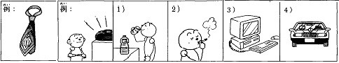
- 飲み物を聞きたいです。
- 飲み物を見せたいです。
- 飲み物を飲みたいです。
- 飲み物を読みたいです。
Đáp án C
Đáp án trong bốn lựa chọn: 飲み物を飲みたいです。
Đối chiếu loại thông tin, trợ từ, dạng chia và ý của toàn câu; chọn phương án phù hợp trong bốn lựa chọn. Dữ kiện minh họa không khẳng định thông tin cá nhân của học viên.
IKG-GRAM-07-M04-Q02
Nhìn ô 2 trong hình: chọn câu diễn tả mong muốn.
- たばこを吸いたいです。
- たばこを読みたいです。
- たばこを聞きたいです。
- たばこを食べたいです。
Đáp án A
Đáp án trong bốn lựa chọn: たばこを吸いたいです。
Đối chiếu loại thông tin, trợ từ, dạng chia và ý của toàn câu; chọn phương án phù hợp trong bốn lựa chọn. Dữ kiện minh họa không khẳng định thông tin cá nhân của học viên.
IKG-GRAM-07-M04-Q03
Nhìn ô 3 trong hình: chọn câu diễn tả mong muốn.
- パソコンが欲しいです。
- パソコンを飲みたいです。
- パソコンを食べたいです。
- パソコンを吸いたいです。
Đáp án A
Đáp án trong bốn lựa chọn: パソコンが欲しいです。
Đối chiếu loại thông tin, trợ từ, dạng chia và ý của toàn câu; chọn phương án phù hợp trong bốn lựa chọn. Dữ kiện minh họa không khẳng định thông tin cá nhân của học viên.
IKG-GRAM-07-M04-Q04
Nhìn ô 4 trong hình: chọn câu diễn tả mong muốn.
- 車が欲しいです。
- 車を飲みたいです。
- 車を食べたいです。
- 車を吸いたいです。
Đáp án A
Đáp án trong bốn lựa chọn: 車が欲しいです。
Đối chiếu loại thông tin, trợ từ, dạng chia và ý của toàn câu; chọn phương án phù hợp trong bốn lựa chọn. Dữ kiện minh họa không khẳng định thông tin cá nhân của học viên.
Mục 5
IKG-GRAM-07-M05-Q01
Nhìn hình 本田: chọn câu mô tả.
- 本田さんは車を運転しています。
- 本田さんは音楽を聞いています。
- 本田さんは手紙を書いています。
- 本田さんはご飯を食べています。
Đáp án B
Đáp án trong bốn lựa chọn: 本田さんは音楽を聞いています。
Đối chiếu loại thông tin, trợ từ, dạng chia và ý của toàn câu; chọn phương án phù hợp trong bốn lựa chọn. Dữ kiện minh họa không khẳng định thông tin cá nhân của học viên.
IKG-GRAM-07-M05-Q02
Nhìn hình 小林: chọn câu mô tả.
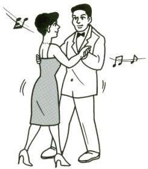
- 小林さんはご飯を食べています。
- 小林さんは寝ています。
- 小林さんはダンスをしています。
- 小林さんは本を読んでいます。
Đáp án C
Đáp án trong bốn lựa chọn: 小林さんはダンスをしています。
Đối chiếu loại thông tin, trợ từ, dạng chia và ý của toàn câu; chọn phương án phù hợp trong bốn lựa chọn. Dữ kiện minh họa không khẳng định thông tin cá nhân của học viên.
IKG-GRAM-07-M05-Q03
Nhìn hình 山田: chọn câu mô tả.
- 山田さんは本を読んでいます。
- 山田さんはダンスをしています。
- 山田さんは泳いでいます。
- 山田さんは寝ています。
Đáp án A
Đáp án trong bốn lựa chọn: 山田さんは本を読んでいます。
Đối chiếu loại thông tin, trợ từ, dạng chia và ý của toàn câu; chọn phương án phù hợp trong bốn lựa chọn. Dữ kiện minh họa không khẳng định thông tin cá nhân của học viên.
IKG-GRAM-07-M05-Q04
Nhìn hình 武部: chọn câu mô tả.
- 武部さんはご飯を食べています。
- 武部さんは車を運転しています。
- 武部さんは歌を歌っています。
- 武部さんは本を読んでいます。
Đáp án C
Đáp án trong bốn lựa chọn: 武部さんは歌を歌っています。
Đối chiếu loại thông tin, trợ từ, dạng chia và ý của toàn câu; chọn phương án phù hợp trong bốn lựa chọn. Dữ kiện minh họa không khẳng định thông tin cá nhân của học viên.
Mục 6
IKG-GRAM-07-M06-Q01
あの信号を左へ（ ）ください。
- 見せて
- 取って
- 曲がって
- 書いて
Đáp án C
Đáp án trong bốn lựa chọn: 曲がって
Đối chiếu loại thông tin, trợ từ, dạng chia và ý của toàn câu; chọn phương án phù hợp trong bốn lựa chọn. Dữ kiện minh họa không khẳng định thông tin cá nhân của học viên.
IKG-GRAM-07-M06-Q02
パスポートをもう一度（ ）ください。
- 曲がって
- つけて
- 書いて
- 見せて
Đáp án D
Đáp án trong bốn lựa chọn: 見せて
Đối chiếu loại thông tin, trợ từ, dạng chia và ý của toàn câu; chọn phương án phù hợp trong bốn lựa chọn. Dữ kiện minh họa không khẳng định thông tin cá nhân của học viên.
IKG-GRAM-07-M06-Q03
ここに住所と名前を（ ）ください。
- 書いて
- 曲がって
- つけて
- 休んで
Đáp án A
Đáp án trong bốn lựa chọn: 書いて
Đối chiếu loại thông tin, trợ từ, dạng chia và ý của toàn câu; chọn phương án phù hợp trong bốn lựa chọn. Dữ kiện minh họa không khẳng định thông tin cá nhân của học viên.
IKG-GRAM-07-M06-Q04
暑いですから、エアコンを（ ）ください。
- 書いて
- 休んで
- つけて
- 曲がって
Đáp án C
Đáp án trong bốn lựa chọn: つけて
Đối chiếu loại thông tin, trợ từ, dạng chia và ý của toàn câu; chọn phương án phù hợp trong bốn lựa chọn. Dữ kiện minh họa không khẳng định thông tin cá nhân của học viên.
IKG-GRAM-07-M06-Q05
ちょっとそのはさみを（ ）ください。
- 取って
- 曲がって
- 書いて
- つけて
Đáp án A
Đáp án trong bốn lựa chọn: 取って
Đối chiếu loại thông tin, trợ từ, dạng chia và ý của toàn câu; chọn phương án phù hợp trong bốn lựa chọn. Dữ kiện minh họa không khẳng định thông tin cá nhân của học viên.
使って cũng đúng ở ngữ cảnh khác; không đưa làm phương án nhiễu.
Mục 7
IKG-GRAM-07-M07-Q01
Nối câu: うちへ帰ります・昼ご飯を食べます。
- うちへ昼ご飯を食べてに帰ります。
- うちへ昼ご飯が食べに帰ります。
- うちへ昼ご飯を食べるに帰ります。
- うちへ昼ご飯を食べに帰ります。
Đáp án D
Đáp án trong bốn lựa chọn: うちへ昼ご飯を食べに帰ります。
Đối chiếu loại thông tin, trợ từ, dạng chia và ý của toàn câu; chọn phương án phù hợp trong bốn lựa chọn. Dữ kiện minh họa không khẳng định thông tin cá nhân của học viên.
IKG-GRAM-07-M07-Q02
Nối câu: 週末は友達のうちへ行きます・遊びます。
- 週末は友達のうちへ遊びに行きます。
- 週末は友達のうちへ遊ぶに行きます。
- 週末は友達のうちへ遊んでに行きます。
- 週末は友達のうちへ遊びを行きます。
Đáp án A
Đáp án trong bốn lựa chọn: 週末は友達のうちへ遊びに行きます。
Đối chiếu loại thông tin, trợ từ, dạng chia và ý của toàn câu; chọn phương án phù hợp trong bốn lựa chọn. Dữ kiện minh họa không khẳng định thông tin cá nhân của học viên.
IKG-GRAM-07-M07-Q03
Nối câu: タイ料理の店へ行きました・食事します。
- タイ料理の店へ食事してに行きました。
- タイ料理の店へ食事をに行きました。
- タイ料理の店へ食事しに行きました。
- タイ料理の店へ食事するに行きました。
Đáp án C
Đáp án trong bốn lựa chọn: タイ料理の店へ食事しに行きました。
Đối chiếu loại thông tin, trợ từ, dạng chia và ý của toàn câu; chọn phương án phù hợp trong bốn lựa chọn. Dữ kiện minh họa không khẳng định thông tin cá nhân của học viên.
IKG-GRAM-07-M07-Q04
Nối câu: ホテルのプールへ行きます・泳ぎます。
- ホテルのプールへ泳ぎに行きます。
- ホテルのプールへ泳ぐに行きます。
- ホテルのプールへ泳いでに行きます。
- ホテルのプールへ泳ぎを行きます。
Đáp án A
Đáp án trong bốn lựa chọn: ホテルのプールへ泳ぎに行きます。
Đối chiếu loại thông tin, trợ từ, dạng chia và ý của toàn câu; chọn phương án phù hợp trong bốn lựa chọn. Dữ kiện minh họa không khẳng định thông tin cá nhân của học viên.
IKG-GRAM-07-M07-Q05
Nối câu: 来年、日本へ行きます・働きます。
- 来年、日本へ働きで行きます。
- 来年、日本へ働きに行きます。
- 来年、日本へ働くに行きます。
- 来年、日本へ働いてに行きます。
Đáp án B
Đáp án trong bốn lựa chọn: 来年、日本へ働きに行きます。
Đối chiếu loại thông tin, trợ từ, dạng chia và ý của toàn câu; chọn phương án phù hợp trong bốn lựa chọn. Dữ kiện minh họa không khẳng định thông tin cá nhân của học viên.
IKG-GRAM-07-M07-Q06
Nối câu: アメリカへ行きます・旅行します。
- アメリカへ旅行するに行きます。
- アメリカへ旅行してに行きます。
- アメリカへ旅行が行きます。
- アメリカへ旅行しに行きます。
Đáp án D
Đáp án trong bốn lựa chọn: アメリカへ旅行しに行きます。
Đối chiếu loại thông tin, trợ từ, dạng chia và ý của toàn câu; chọn phương án phù hợp trong bốn lựa chọn. Dữ kiện minh họa không khẳng định thông tin cá nhân của học viên.
Mục 8
IKG-GRAM-07-M08-Q01
カリナさんは何を（します→ ）いますか。
- して
- し
- する
- した
Đáp án A
Đáp án trong bốn lựa chọn: して
Đối chiếu loại thông tin, trợ từ, dạng chia và ý của toàn câu; chọn phương án phù hợp trong bốn lựa chọn. Dữ kiện minh họa không khẳng định thông tin cá nhân của học viên.
IKG-GRAM-07-M08-Q02
あそこで花を（見ます→ ）います。
- 見て
- 見
- 見る
- 見た
Đáp án A
Đáp án trong bốn lựa chọn: 見て
Đối chiếu loại thông tin, trợ từ, dạng chia và ý của toàn câu; chọn phương án phù hợp trong bốn lựa chọn. Dữ kiện minh họa không khẳng định thông tin cá nhân của học viên.
IKG-GRAM-07-M08-Q03
（呼びます→ ）ましょうか。
- 呼ぶ
- 呼んだ
- 呼び
- 呼んで
Đáp án C
Đáp án trong bốn lựa chọn: 呼び
Trước ましょう/たい, dùng thân thể ます. Với mục đích di chuyển, dùng thân thể ます + に + động từ di chuyển.
IKG-GRAM-07-M08-Q04
ええ、（呼びます→ ）ください。
- 呼ぶ
- 呼んだ
- 呼んで
- 呼び
Đáp án C
Đáp án trong bốn lựa chọn: 呼んで
Đối chiếu loại thông tin, trợ từ, dạng chia và ý của toàn câu; chọn phương án phù hợp trong bốn lựa chọn. Dữ kiện minh họa không khẳng định thông tin cá nhân của học viên.
IKG-GRAM-07-M08-Q05
一緒にお茶を（飲みます→ ）に行きましょう。
- 飲んだ
- 飲み
- 飲んで
- 飲む
Đáp án B
Đáp án trong bốn lựa chọn: 飲み
Trước ましょう/たい, dùng thân thể ます. Với mục đích di chuyển, dùng thân thể ます + に + động từ di chuyển.
IKG-GRAM-07-M08-Q06
冷たい物を（飲みます→ ）たいです。
- 飲んだ
- 飲み
- 飲んで
- 飲む
Đáp án B
Đáp án trong bốn lựa chọn: 飲み
Trước ましょう/たい, dùng thân thể ます. Với mục đích di chuyển, dùng thân thể ます + に + động từ di chuyển.
IKG-GRAM-07-M08-Q07
あの喫茶店に（入ります→ ）ましょう。
- 入って
- 入る
- 入った
- 入り
Đáp án D
Đáp án trong bốn lựa chọn: 入り
Trước ましょう/たい, dùng thân thể ます. Với mục đích di chuyển, dùng thân thể ます + に + động từ di chuyển.
IKG-GRAM-07-M08-Q08
ええ、そう（します→ ）ましょう。
- する
- した
- し
- して
Đáp án C
Đáp án trong bốn lựa chọn: し
Trước ましょう/たい, dùng thân thể ます. Với mục đích di chuyển, dùng thân thể ます + に + động từ di chuyển.
IKG-GRAM-07-M08-Q09
荷物を一つ（持ちます→ ）ましょうか。
- 持ち
- 持って
- 持つ
- 持った
Đáp án A
Đáp án trong bốn lựa chọn: 持ち
Trước ましょう/たい, dùng thân thể ます. Với mục đích di chuyển, dùng thân thể ます + に + động từ di chuyển.
IKG-GRAM-07-M08-Q10
赤いかばんを（取ります→ ）ください。
- 取る
- 取った
- 取って
- 取り
Đáp án C
Đáp án trong bốn lựa chọn: 取って
Đối chiếu loại thông tin, trợ từ, dạng chia và ý của toàn câu; chọn phương án phù hợp trong bốn lựa chọn. Dữ kiện minh họa không khẳng định thông tin cá nhân của học viên.
Mục 9
私の町
私の町は京都です。私は京都に22年いました。京都はとても古い町です。昔、日本の首都でした。町に川があります。鴨川です。京都にたくさんお寺や神社があります。私はよく友達と遊びに行きました。とても静かで、緑が多いです。京都ににぎやかな所もあります。いちばん有名な所は河原町です。お店やデパートがたくさんあります。夜、学生や会社員はお酒を飲みに来ます。週末、人がとても多いです。家族や学生がたくさんいます。買い物に来ます。そしてレストランでご飯を食べます。近くに祇園があります。祇園にとても古い家がたくさんあります。舞妓さんがいますから、外国人の観光客もたくさん来ます。祇園祭はとても有名です。私は京都が大好きです。今、仕事がありますから、東京にいます。でも京都へ帰りたいです。
Loại đoạn bị lặp trong hộp văn bản; tên みやこ xuất hiện ở câu hỏi. 舞妓さん: maiko, nghệ nhân tập sự trong nghệ thuật truyền thống Kyoto.
IKG-GRAM-07-M09-Q01
みやこさんはよく何をしに行きましたか。
- 友達と遊びに行きました。
- 会社へ働きに行きました。
- 東京へ買い物に行きました。
- 学校へ勉強しに行きました。
Đáp án A
Đối chiếu đoạn đọc: 友達と遊びに行きました。
Tên みやこ lấy từ câu hỏi, đoạn tự sự không nêu tên.
IKG-GRAM-07-M09-Q02
京都で一番有名なにぎやかな所はどこですか。
- 河原町です。
- 東京です。
- 大阪です。
- 名古屋です。
Đáp án A
Đối chiếu đoạn đọc: 河原町です。
Câu gốc hỏi 町, đoạn văn nói 所; chuẩn hóa cùng đối tượng.
IKG-GRAM-07-M09-Q03
河原町は何がたくさんありますか。
- 山や湖があります。
- 病院だけあります。
- お店やデパートがあります。
- 空港や工場があります。
Đáp án C
Đối chiếu đoạn đọc: お店やデパートがあります。
IKG-GRAM-07-M09-Q04
今、みやこさんはどこに住んでいますか。
- 京都です。
- 大阪です。
- 広島です。
- 東京です。
Đáp án D
Đối chiếu đoạn đọc: 東京です。
IKG-GRAM-07-M09-Q05
祇園はどうして外国人の観光客が多いですか。
- 新幹線の駅がありますから。
- 工場が多いですから。
- 海がありますから。
- 舞妓さんがいますから。
Đáp án D
Đối chiếu đoạn đọc: 舞妓さんがいますから。
IKG-GRAM-07-M09-Q06
みやこさんはどこへ帰りたいですか。
- 大阪です。
- 名古屋です。
- 京都です。
- 東京です。
Đáp án C
Đối chiếu đoạn đọc: 京都です。
Bài 15–16
67 câu từ nguồn · 20 câu tiến độ lưu riêng
Mục 1
IKG-GRAM-08-M01-Q01
Cách đọc: 英語
- えご
- えこ
- えいごう
- えいご
Đáp án D
Cách đọc được kiểm tra: 英語 → えいご.
IKG-GRAM-08-M01-Q02
Cách đọc: 辞書
- じしょ
- じしょう
- じそう
- じそ
Đáp án A
Cách đọc được kiểm tra: 辞書 → じしょ.
IKG-GRAM-08-M01-Q03
Cách đọc: 試験
- じけん
- じげん
- しけん
- しげん
Đáp án C
Cách đọc được kiểm tra: 試験 → しけん.
IKG-GRAM-08-M01-Q04
Cách đọc: 時間
- しか
- じかん
- じがん
- しがん
Đáp án B
Cách đọc được kiểm tra: 時間 → じかん.
IKG-GRAM-08-M01-Q05
Cách đọc 話し trong 話して
- はばし
- はなし
- はらし
- はまし
Đáp án B
Cách đọc được kiểm tra: 話し → はなし.
IKG-GRAM-08-M01-Q06
Cách đọc: 家族
- かそぐ
- かぞぐ
- かぞく
- かそく
Đáp án C
Cách đọc được kiểm tra: 家族 → かぞく.
IKG-GRAM-08-M01-Q07
Cách đọc: 東京
- とうきょう
- ときょう
- とうきょ
- ときょ
Đáp án A
Cách đọc được kiểm tra: 東京 → とうきょう.
IKG-GRAM-08-M01-Q08
Cách đọc: 自動車
- じどさ
- じどうしゃ
- じどしゃ
- じどうじゃ
Đáp án B
Cách đọc được kiểm tra: 自動車 → じどうしゃ.
IKG-GRAM-08-M01-Q09
Cách đọc phần 作 trong 作っています
- づく
- づぐ
- つく
- つぐ
Đáp án C
Cách đọc được kiểm tra: 作 → つく.
IKG-GRAM-08-M01-Q10
Cách đọc: 姉
- あめ
- あけ
- おね
- あね
Đáp án D
Cách đọc được kiểm tra: 姉 → あね.
IKG-GRAM-08-M01-Q11
Cách đọc: 結婚
- けっこ
- けっこう
- けっこん
- けこん
Đáp án C
Cách đọc được kiểm tra: 結婚 → けっこん.
IKG-GRAM-08-M01-Q12
Cách đọc: 一緒
- いっしょう
- いっしょ
- いしょ
- いしょう
Đáp án B
Cách đọc được kiểm tra: 一緒 → いっしょ.
IKG-GRAM-08-M01-Q13
Cách đọc 背 trong 背が高い
- ぜ
- せ
- せい
- ぜい
Đáp án B
Cách đọc được kiểm tra: 背 → せ.
IKG-GRAM-08-M01-Q14
Cách đọc: 髪
- たみ
- なみ
- さみ
- かみ
Đáp án D
Cách đọc được kiểm tra: 髪 → かみ.
IKG-GRAM-08-M01-Q15
Cách đọc phần 長 trong 長い
- なけ
- なか
- なげ
- なが
Đáp án D
Cách đọc được kiểm tra: 長 → なが.
IKG-GRAM-08-M01-Q16
Cách đọc phần 黒 trong 黒い
- くうろ
- くろう
- くろ
- くうろう
Đáp án C
Cách đọc được kiểm tra: 黒 → くろ.
IKG-GRAM-08-M01-Q17
Cách đọc 寺 trong お寺
- ては
- てら
- では
- でら
Đáp án B
Cách đọc được kiểm tra: 寺 → てら.
IKG-GRAM-08-M01-Q18
Cách đọc: 神社
- じんじゃ
- じんしゃ
- しんじゃ
- しんしゃ
Đáp án A
Cách đọc được kiểm tra: 神社 → じんじゃ.
IKG-GRAM-08-M01-Q19
Cách đọc: 製品
- せいびん
- ぜいびん
- せいひん
- ぜいひん
Đáp án C
Cách đọc được kiểm tra: 製品 → せいひん.
IKG-GRAM-08-M01-Q20
Cách đọc 方 trong 使い方
- かだ
- がた
- がだ
- かた
Đáp án D
Cách đọc được kiểm tra: 方 → かた.
Mục 2
IKG-GRAM-08-M02-Q01
ここ（ ）写真（ ）撮ってもいいですか。
- へ・で
- で・を
- に・が
- を・に
Đáp án B
Điền lần lượt các ô từ trái sang phải: で・を. X nghĩa là không cần trợ từ.
Các ô theo thứ tự: で — nơi hoạt động, phương tiện hoặc cách thức; を — tân ngữ hoặc nơi đi qua.
IKG-GRAM-08-M02-Q02
すみませんが、このカタログ（ ）取ってもいいですか。
- を
- で
- に
- へ
Đáp án A
Đáp án trong bốn lựa chọn: を
Đối chiếu loại thông tin, trợ từ, dạng chia và ý của toàn câu; chọn phương án phù hợp trong bốn lựa chọn. Dữ kiện minh họa không khẳng định thông tin cá nhân của học viên.
IKG-GRAM-08-M02-Q03
今、ご両親（ ）どこ（ ）住んでいますか。
- は・に
- を・に
- は・で
- に・を
Đáp án A
Điền lần lượt các ô từ trái sang phải: は・に. X nghĩa là không cần trợ từ.
Các ô theo thứ tự: は — chủ đề; に — mốc giờ, đích hoặc đối tác tùy vị ngữ.
IKG-GRAM-08-M02-Q04
毎日、勉強（ ）終わってから、友達（ ）テニス（ ）しています。
- を・と・が
- に・で・を
- で・に・が
- が・と・を
Đáp án D
Điền lần lượt các ô từ trái sang phải: が・と・を. X nghĩa là không cần trợ từ.
Các ô theo thứ tự: が — chủ ngữ/đối tượng trong cấu trúc được dùng; と — liệt kê, cùng với hoặc trích dẫn; を — tân ngữ hoặc nơi đi qua.
IKG-GRAM-08-M02-Q05
教室（ ）携帯電話（ ）使ってはいけません。
- へ・に
- で・を
- に・が
- を・で
Đáp án B
Điền lần lượt các ô từ trái sang phải: で・を. X nghĩa là không cần trợ từ.
Các ô theo thứ tự: で — nơi hoạt động, phương tiện hoặc cách thức; を — tân ngữ hoặc nơi đi qua.
IKG-GRAM-08-M02-Q06
神戸（ ）牛肉（ ）おいしいですが、高いです。
- を・は
- で・を
- に・が
- の・は
Đáp án D
Điền lần lượt các ô từ trái sang phải: の・は. X nghĩa là không cần trợ từ.
Các ô theo thứ tự: の — quan hệ giữa hai danh từ; は — chủ đề.
IKG-GRAM-08-M02-Q07
ミーさん（ ）お金（ ）借りて、シャツ（ ）買い（ ）行きます。
- を・に・を・で
- で・が・に・を
- と・を・が・へ
- に・を・を・に
Đáp án D
Điền lần lượt các ô từ trái sang phải: に・を・を・に. X nghĩa là không cần trợ từ.
Các ô theo thứ tự: に — mốc giờ, đích hoặc đối tác tùy vị ngữ; を — tân ngữ hoặc nơi đi qua; を — tân ngữ hoặc nơi đi qua; に — mốc giờ, đích hoặc đối tác tùy vị ngữ.
IKG-GRAM-08-M02-Q08
この資料（ ）コピーして、机（ ）置きましょうか。
- に・を
- で・が
- を・で
- を・に
Đáp án D
Điền lần lượt các ô từ trái sang phải: を・に. X nghĩa là không cần trợ từ.
Các ô theo thứ tự: を — tân ngữ hoặc nơi đi qua; に — mốc giờ, đích hoặc đối tác tùy vị ngữ.
IKG-GRAM-08-M02-Q09
家（ ）前（ ）待ってもいいですか。
- で・に
- の・で
- を・で
- に・を
Đáp án B
Điền lần lượt các ô từ trái sang phải: の・で. X nghĩa là không cần trợ từ.
Các ô theo thứ tự: の — quan hệ giữa hai danh từ; で — nơi hoạt động, phương tiện hoặc cách thức.
Mục 3
IKG-GRAM-08-M03-Q01
勉強してから、スポーツをしますか。 Chọn câu khẳng định.
- はい、勉強してから、スポーツにします。
- はい、勉強してから、スポーツをします。
- はい、勉強するから、スポーツをしましたです。
- はい、勉強してから、スポーツがします。
Đáp án B
Đáp án trong bốn lựa chọn: はい、勉強してから、スポーツをします。
Giữ đúng vị ngữ, trợ từ và thì của câu hỏi trong câu đáp khẳng định.
IKG-GRAM-08-M03-Q02
今、働いていますか。 Chọn câu khẳng định.
- はい、働いています。
- はい、働くています。
- はい、働きています。
- はい、働いてありません。
Đáp án A
Đáp án trong bốn lựa chọn: はい、働いています。
Giữ đúng vị ngữ, trợ từ và thì của câu hỏi trong câu đáp khẳng định.
IKG-GRAM-08-M03-Q03
土曜日の午前、休んでもいいですか。 Chọn câu không cho phép.
- いいえ、休みてはいけません。
- いいえ、休んではいけません。
- いいえ、休んでもいいです。
- いいえ、休むてはいけません。
Đáp án B
Đáp án trong bốn lựa chọn: いいえ、休んではいけません。
Đối chiếu loại thông tin, trợ từ, dạng chia và ý của toàn câu; chọn phương án phù hợp trong bốn lựa chọn. Dữ kiện minh họa không khẳng định thông tin cá nhân của học viên.
IKG-GRAM-08-M03-Q04
国へ帰って、もう一度日本へ行きたいですか。 Chọn câu khẳng định.
- はい、行くたいです。
- はい、行ってたいです。
- はい、行きたくないです。
- はい、行きたいです。
Đáp án D
Đáp án trong bốn lựa chọn: はい、行きたいです。
Giữ đúng vị ngữ, trợ từ và thì của câu hỏi trong câu đáp khẳng định.
IKG-GRAM-08-M03-Q05
自転車を持っていますか。 Chọn câu phủ định.
- いいえ、持つています。
- いいえ、持ちています。
- いいえ、持っていません。
- いいえ、持っています。
Đáp án C
Đáp án trong bốn lựa chọn: いいえ、持っていません。
Câu đáp phải phủ định đúng vị ngữ và giữ thì của câu hỏi; không chọn một câu khẳng định chỉ vì nó đúng ngữ pháp.
IKG-GRAM-08-M03-Q06
ベトナムで一番高いビルを知っていますか。 Chọn câu phủ định.
- いいえ、知っています。
- いいえ、知るません。
- いいえ、知ってあります。
- いいえ、知りません。
Đáp án D
Đáp án trong bốn lựa chọn: いいえ、知りません。
Giữ thì của câu hỏi khi đáp phủ định. Với 知っています, cách đáp phủ định thông thường là 知りません.
Không cần xác định tòa nhà cao nhất; kiểm tra cách phủ định 知っています.
IKG-GRAM-08-M03-Q07
テストでボールペンで書いてもいいですか。 Chọn câu cho phép.
- はい、書くてもいいです。
- はい、書きてもいいです。
- はい、書いてもいいです。
- はい、書いてはいけません。
Đáp án C
Đáp án trong bốn lựa chọn: はい、書いてもいいです。
Đối chiếu loại thông tin, trợ từ, dạng chia và ý của toàn câu; chọn phương án phù hợp trong bốn lựa chọn. Dữ kiện minh họa không khẳng định thông tin cá nhân của học viên.
Sửa lỗi ポールペン.
IKG-GRAM-08-M03-Q08
昼ご飯を食べて、すぐ寝てもいいですか。 Chọn câu không cho phép trong tình huống bài.
- いいえ、寝ってはいけません。
- いいえ、寝てはいけません。
- いいえ、寝てもいいです。
- いいえ、寝るてはいけません。
Đáp án B
Đáp án trong bốn lựa chọn: いいえ、寝てはいけません。
Đối chiếu loại thông tin, trợ từ, dạng chia và ý của toàn câu; chọn phương án phù hợp trong bốn lựa chọn. Dữ kiện minh họa không khẳng định thông tin cá nhân của học viên.
Đây là luyện cấu trúc theo gợi ý いいえ; không phải lời khuyên y tế.
IKG-GRAM-08-M03-Q09
日本に行ってから、北海道で働きますか。 Chọn câu khẳng định.
- はい、北海道と働きます。
- はい、北海道で働きます。
- はい、北海道を働きます。
- はい、北海道が働きます。
Đáp án B
Đáp án trong bốn lựa chọn: はい、北海道で働きます。
Giữ đúng vị ngữ, trợ từ và thì của câu hỏi trong câu đáp khẳng định.
IKG-GRAM-08-M03-Q10
あなたのふるさとはにぎやかで、有名な町ですか。 Chọn câu phủ định.
- いいえ、にぎやかく有名な町です。
- いいえ、有名い町です。
- いいえ、にぎやかで有名な町ではありません。
- いいえ、にぎやかで有名な町です。
Đáp án C
Đáp án trong bốn lựa chọn: いいえ、にぎやかで有名な町ではありません。
Câu đáp phải phủ định đúng vị ngữ và giữ thì của câu hỏi; không chọn một câu khẳng định chỉ vì nó đúng ngữ pháp.
Mục 4
IKG-GRAM-08-M04-Q01
この本に名前を書いて、棚に（ ）ください。
- 起きて
- 置いて
- 作って
- 使って
Đáp án B
Đáp án trong bốn lựa chọn: 置いて
Đối chiếu loại thông tin, trợ từ, dạng chia và ý của toàn câu; chọn phương án phù hợp trong bốn lựa chọn. Dữ kiện minh họa không khẳng định thông tin cá nhân của học viên.
IKG-GRAM-08-M04-Q02
授業が終わってから、（ ）へ行きたいですか。—食堂へ行きたいです。
- だれ
- いつ
- どこ
- どこか
Đáp án C
Đáp án trong bốn lựa chọn: どこ
Dùng どこ để hỏi nơi chốn hoặc tên cơ quan trong ngữ cảnh.
IKG-GRAM-08-M04-Q03
勉強が終わってから、（ ）行きますか。—買い物へ行きます。
- 何が
- いつを
- どこか
- だれを
Đáp án C
Đáp án trong bốn lựa chọn: どこか
Đối chiếu loại thông tin, trợ từ, dạng chia và ý của toàn câu; chọn phương án phù hợp trong bốn lựa chọn. Dữ kiện minh họa không khẳng định thông tin cá nhân của học viên.
どこか hỏi có đi đâu không; đáp án nguồn không chỉ địa danh. Không dùng どこへ làm phương án sai.
IKG-GRAM-08-M04-Q04
土曜日は暇ですから、いつも遅く（ ）います。
- 置いて
- 作って
- 使って
- 起きて
Đáp án D
Đáp án trong bốn lựa chọn: 起きて
Đối chiếu loại thông tin, trợ từ, dạng chia và ý của toàn câu; chọn phương án phù hợp trong bốn lựa chọn. Dữ kiện minh họa không khẳng định thông tin cá nhân của học viên.
Giữ động từ 起きます trong nguồn; câu kiểm tra dạng ている, không ấn định giờ sinh hoạt.
IKG-GRAM-08-M04-Q05
このナイフを（使います→ ）、りんごを切ってください。
- 使って
- 使いて
- 使うて
- 使んで
Đáp án A
Đáp án trong bốn lựa chọn: 使って
Đối chiếu loại thông tin, trợ từ, dạng chia và ý của toàn câu; chọn phương án phù hợp trong bốn lựa chọn. Dữ kiện minh họa không khẳng định thông tin cá nhân của học viên.
Nguồn in ()て; sửa để không lặp て sau đáp án.
Mục 5
IKG-GRAM-08-M05-Q01
今、雨が（降ります→ ）いますか。
- 降って
- 降りて
- 降るて
- 降んで
Đáp án A
Đáp án trong bốn lựa chọn: 降って
Đối chiếu loại thông tin, trợ từ, dạng chia và ý của toàn câu; chọn phương án phù hợp trong bốn lựa chọn. Dữ kiện minh họa không khẳng định thông tin cá nhân của học viên.
IKG-GRAM-08-M05-Q02
このコンピューターは（新しい→ ）、便利です。
- 新しいで
- 新しくで
- 新しくて
- 新しいくて
Đáp án C
Đáp án trong bốn lựa chọn: 新しくて
Đối chiếu loại thông tin, trợ từ, dạng chia và ý của toàn câu; chọn phương án phù hợp trong bốn lựa chọn. Dữ kiện minh họa không khẳng định thông tin cá nhân của học viên.
IKG-GRAM-08-M05-Q03
私のふるさとは（きれい→ ）、静かな所です。
- きれいなで
- きれくて
- きれいで
- きれいくて
Đáp án C
Đáp án trong bốn lựa chọn: きれいで
Đối chiếu loại thông tin, trợ từ, dạng chia và ý của toàn câu; chọn phương án phù hợp trong bốn lựa chọn. Dữ kiện minh họa không khẳng định thông tin cá nhân của học viên.
IKG-GRAM-08-M05-Q04
リンさんはベトナム人の（留学生です→ ）、今大阪に住んでいます。
- 留学生な
- 留学生だで
- 留学生で
- 留学生くて
Đáp án C
Đáp án trong bốn lựa chọn: 留学生で
Đối chiếu loại thông tin, trợ từ, dạng chia và ý của toàn câu; chọn phương án phù hợp trong bốn lựa chọn. Dữ kiện minh họa không khẳng định thông tin cá nhân của học viên.
IKG-GRAM-08-M05-Q05
ナムさんは背が（高い→ ）、髪が短い人です。
- 高くて
- 高いくて
- 高いで
- 高くで
Đáp án A
Đáp án trong bốn lựa chọn: 高くて
Đối chiếu loại thông tin, trợ từ, dạng chia và ý của toàn câu; chọn phương án phù hợp trong bốn lựa chọn. Dữ kiện minh họa không khẳng định thông tin cá nhân của học viên.
IKG-GRAM-08-M05-Q06
昨日のパーティーは（面白い→ ）が、ちょっと疲れました。
- 面白かったです
- 面白いでした
- 面白いかったです
- 面白くでした
Đáp án A
Đáp án trong bốn lựa chọn: 面白かったです
Đối chiếu loại thông tin, trợ từ, dạng chia và ý của toàn câu; chọn phương án phù hợp trong bốn lựa chọn. Dữ kiện minh họa không khẳng định thông tin cá nhân của học viên.
IKG-GRAM-08-M05-Q07
JVSセンターで日本語の勉強が（終わります→ ）から、日本へ行きます。
- 終わるて
- 終わりて
- 終わって
- 終わりますて
Đáp án C
Đáp án trong bốn lựa chọn: 終わって
Đối chiếu loại thông tin, trợ từ, dạng chia và ý của toàn câu; chọn phương án phù hợp trong bốn lựa chọn. Dữ kiện minh họa không khẳng định thông tin cá nhân của học viên.
Cấu trúc てから chỉ trình tự; 終わるから là lý do khác, tránh đưa làm phương án sai.
IKG-GRAM-08-M05-Q08
先週の日曜日、（起きます→ ）、ご飯を（食べます→ ）、それから学校へ（行きます→ ）。
- 起きて・食べて・行きました
- 起きて・食べて・行きますでした
- 起きるて・食べて・行きました
- 起きて・食べるて・行きました
Đáp án A
Điền lần lượt các ô từ trái sang phải: 起きて・食べて・行きました. X nghĩa là không cần trợ từ.
Đối chiếu loại thông tin, trợ từ, dạng chia và ý của toàn câu; chọn phương án phù hợp trong bốn lựa chọn. Dữ kiện minh họa không khẳng định thông tin cá nhân của học viên.
Nguồn viết 学校へ（寝ます）, sai động từ; sửa thành 行きます, ghi lỗi gốc trong báo cáo. Gộp 3 ô.
Mục 6
IKG-GRAM-08-M06-Q01
【Quy định giả định: không hút thuốc trên máy bay】飛行機でたばこを吸ってもいいですか。
- いいえ、吸うてはいけません。
- いいえ、吸いてはいけません。
- いいえ、吸ってはいけません。
- はい、吸ってもいいです。
Đáp án C
Đáp án trong bốn lựa chọn: いいえ、吸ってはいけません。
Đối chiếu loại thông tin, trợ từ, dạng chia và ý của toàn câu; chọn phương án phù hợp trong bốn lựa chọn. Dữ kiện minh họa không khẳng định thông tin cá nhân của học viên.
Bổ sung quy định ngay trong đề, không suy đoán hoàn cảnh thực tế.
IKG-GRAM-08-M06-Q02
【Quy định bài tập: ký túc xá không cho uống rượu】JVSセンターの寮でお酒を飲んでもいいですか。
- いいえ、飲んではいけません。
- はい、飲んでもいいです。
- いいえ、飲むてはいけません。
- いいえ、飲みてはいけません。
Đáp án A
Đáp án trong bốn lựa chọn: いいえ、飲んではいけません。
Đối chiếu loại thông tin, trợ từ, dạng chia và ý của toàn câu; chọn phương án phù hợp trong bốn lựa chọn. Dữ kiện minh họa không khẳng định thông tin cá nhân của học viên.
Chưa có nội quy gốc của JVS; dùng tình huống giả định.
IKG-GRAM-08-M06-Q03
今、ハノイに住んでいますか。 Chọn câu khẳng định.
- はい、ハノイを住んでいます。
- はい、ハノイへ住んでいます。
- はい、ハノイに住んでいます。
- はい、ハノイで住んでいます。
Đáp án C
Đáp án trong bốn lựa chọn: はい、ハノイに住んでいます。
Giữ đúng vị ngữ, trợ từ và thì của câu hỏi trong câu đáp khẳng định.
IKG-GRAM-08-M06-Q04
ベトナムで一番高い山を知っていますか。 Chọn câu phủ định.
- いいえ、知りません。
- いいえ、知っています。
- いいえ、知るません。
- いいえ、知ってあります。
Đáp án A
Đáp án trong bốn lựa chọn: いいえ、知りません。
Giữ thì của câu hỏi khi đáp phủ định. Với 知っています, cách đáp phủ định thông thường là 知りません.
Không kiểm tra địa lý.
IKG-GRAM-08-M06-Q05
ベトナムへ帰ってから、日本の会社で働きますか。 Chọn câu khẳng định.
- はい、日本の会社で働きます。
- はい、日本の会社を働きます。
- はい、日本の会社が働きます。
- はい、日本の会社と働きます。
Đáp án A
Đáp án trong bốn lựa chọn: はい、日本の会社で働きます。
Giữ đúng vị ngữ, trợ từ và thì của câu hỏi trong câu đáp khẳng định.
IKG-GRAM-08-M06-Q06
毎日、日本語を勉強してから、何をしますか。 Chọn câu đúng cấu trúc.
- 日本語を勉強するてから、スポーツをします。
- 日本語を勉強してから、スポーツがします。
- 日本語を勉強してから、スポーツにします。
- 日本語を勉強してから、スポーツをします。
Đáp án D
Đáp án trong bốn lựa chọn: 日本語を勉強してから、スポーツをします。
Đối chiếu loại thông tin, trợ từ, dạng chia và ý của toàn câu; chọn phương án phù hợp trong bốn lựa chọn. Dữ kiện minh họa không khẳng định thông tin cá nhân của học viên.
Hoạt động là ví dụ.
IKG-GRAM-08-M06-Q07
【Lộ trình giả định: đi xe buýt】どうやってJVSセンターからミーディン乗り場まで行きますか。
- バスが行きます。
- バスと行きます。
- バスで行きます。
- バスを行きます。
Đáp án C
Đáp án trong bốn lựa chọn: バスで行きます。
Đối chiếu loại thông tin, trợ từ, dạng chia và ý của toàn câu; chọn phương án phù hợp trong bốn lựa chọn. Dữ kiện minh họa không khẳng định thông tin cá nhân của học viên.
Không có bản đồ tuyến đường trong nguồn; tình huống giả định để kiểm tra で.
IKG-GRAM-08-M06-Q08
【Quy định bài tập: được nghe nhạc bằng MP3 trong lớp buổi tối】毎晩、教室でMP3を使って、日本語の音楽を聞いてもいいですか。
- いいえ、聞いてはいけません。
- はい、聞きてもいいです。
- はい、聞くてもいいです。
- はい、聞いてもいいです。
Đáp án D
Đáp án trong bốn lựa chọn: はい、聞いてもいいです。
Đối chiếu loại thông tin, trợ từ, dạng chia và ý của toàn câu; chọn phương án phù hợp trong bốn lựa chọn. Dữ kiện minh họa không khẳng định thông tin cá nhân của học viên.
Chưa có nội quy gốc; thêm quy định giả định.
IKG-GRAM-08-M06-Q09
今、お金をいくら持っていますか。 Chọn câu đúng loại thông tin.
- 10時持っています。
- 10階持っています。
- 1000円持っています。
- 10人持っています。
Đáp án C
Đáp án trong bốn lựa chọn: 1000円持っています。
Dùng đúng dạng chia động từ: thể て nối với います/ください; khi yêu cầu thể ます phải đưa về dạng lịch sự. 行きます có thể て bất quy tắc là 行って.
Số tiền là ví dụ.
IKG-GRAM-08-M06-Q10
毎晩、宿題をしてから、日本語で会話をしていますか。 Chọn câu khẳng định.
- はい、会話をするています。
- はい、会話をしてありますでした。
- はい、会話をしています。
- はい、会話がしています。
Đáp án C
Đáp án trong bốn lựa chọn: はい、会話をしています。
Giữ đúng vị ngữ, trợ từ và thì của câu hỏi trong câu đáp khẳng định.
Mục 7
私の一週間
私はリンです。ベトナムのハイズオン市から来ました。今年24歳で、まだ独身です。今ハノイに住んでいます。ホンダ会社で働いています。毎朝6時に起きて、シャワーを浴びて、ご飯を食べます。そして会社へ行きます。仕事は月曜日から金曜日までです。土曜日、よく家で本を読んで、音楽を聞いて、休みます。時々図書館へ本を借りに行きます。日曜日の朝、いつも教会へ行っています。午後、友達に会って、映画を見に行って、一緒に晩ご飯を食べます。いつもとても楽しいです。
教会: nhà thờ. Không đồng nhất よく (thường) với いつも (luôn).
IKG-GRAM-08-M07-Q01
リンさんはどこに住んでいますか。
- 大阪です。
- 東京です。
- ハノイです。
- ハイズオンです。
Đáp án C
Đối chiếu đoạn đọc: ハノイです。
IKG-GRAM-08-M07-Q02
リンさんはトヨタ会社で働いていますか。
- いいえ、病院で働いています。
- いいえ、ホンダ会社で働いています。
- はい、トヨタ会社で働いています。
- いいえ、学校で働いています。
Đáp án B
Đối chiếu đoạn đọc: いいえ、ホンダ会社で働いています。
IKG-GRAM-08-M07-Q03
毎朝、何をしていますか。
- 7時に起きて、映画を見ます。
- 6時に起きて、教会へ行きます。
- 12時まで寝て、買い物へ行きます。
- 6時に起きて、シャワーを浴びて、ご飯を食べます。
Đáp án D
Đối chiếu đoạn đọc: 6時に起きて、シャワーを浴びて、ご飯を食べます。
IKG-GRAM-08-M07-Q04
土曜日、いつも家で本を読んでいますか。
- いいえ、毎週会社へ行きます。
- いいえ、毎週教会へ行きます。
- いいえ、よく読みますが、時々図書館へ行きます。
- はい、いつも家にいます。
Đáp án C
Đối chiếu đoạn đọc: いいえ、よく読みますが、時々図書館へ行きます。
Giữ phân biệt よく và いつも; nguồn không nói luôn luôn.
IKG-GRAM-08-M07-Q05
日曜日の午後、何をしますか。
- 友達に会って、映画を見て、一緒に晩ご飯を食べます。
- 会社で働きます。
- 教会で朝ご飯を食べます。
- 一人で図書館へ行きます。
Đáp án A
Đối chiếu đoạn đọc: 友達に会って、映画を見て、一緒に晩ご飯を食べます。
Bài 17–18
55 câu từ nguồn · 16 câu tiến độ lưu riêng
Mục 1
IKG-GRAM-09-M01-Q01
Cách đọc: 部屋
- はは
- はな
- へや
- けが
Đáp án C
Cách đọc được kiểm tra: 部屋 → へや.
IKG-GRAM-09-M01-Q02
Cách đọc: 窓
- かど
- さと
- まど
- はど
Đáp án C
Cách đọc được kiểm tra: 窓 → まど.
IKG-GRAM-09-M01-Q03
Cách đọc: 家族
- はやく
- おそく
- かぞく
- かそく
Đáp án C
Cách đọc được kiểm tra: 家族 → かぞく.
IKG-GRAM-09-M01-Q04
Cách đọc: 住んで
- はで
- すんで
- のんで
- なんで
Đáp án B
Cách đọc được kiểm tra: 住んで → すんで.
IKG-GRAM-09-M01-Q05
Cách đọc: 秋
- あめ
- はる
- あき
- あし
Đáp án C
Cách đọc được kiểm tra: 秋 → あき.
IKG-GRAM-09-M01-Q06
Cách đọc: 降って
- まって
- ふって
- たって
- なって
Đáp án B
Cách đọc được kiểm tra: 降って → ふって.
IKG-GRAM-09-M01-Q07
Cách đọc: 赤い
- しろい
- あおい
- あかい
- ひろい
Đáp án C
Cách đọc được kiểm tra: 赤い → あかい.
IKG-GRAM-09-M01-Q08
Cách đọc: 課長
- かちょう
- しゃちょう
- ぶちょう
- かちょ
Đáp án A
Cách đọc được kiểm tra: 課長 → かちょう.
IKG-GRAM-09-M01-Q09
Cách đọc: 住所
- しゅしょ
- じゅうしょう
- じゅうしょ
- じゅしょ
Đáp án C
Cách đọc được kiểm tra: 住所 → じゅうしょ.
IKG-GRAM-09-M01-Q10
Cách đọc: 知って
- すって
- すわって
- たって
- しって
Đáp án D
Cách đọc được kiểm tra: 知って → しって.
Mục 2
IKG-GRAM-09-M02-Q01
毎晩お風呂（ ）入ります。
- に
- を
- で
- が
Đáp án A
Đáp án trong bốn lựa chọn: に
Đối chiếu loại thông tin, trợ từ, dạng chia và ý của toàn câu; chọn phương án phù hợp trong bốn lựa chọn. Dữ kiện minh họa không khẳng định thông tin cá nhân của học viên.
IKG-GRAM-09-M02-Q02
来週中国（ ）出張します。
- と
- へ
- を
- で
Đáp án B
Đáp án trong bốn lựa chọn: へ
Đối chiếu loại thông tin, trợ từ, dạng chia và ý của toàn câu; chọn phương án phù hợp trong bốn lựa chọn. Dữ kiện minh họa không khẳng định thông tin cá nhân của học viên.
IKG-GRAM-09-M02-Q03
一日（ ）三回薬（ ）飲みます。
- を・に
- へ・で
- で・が
- に・を
Đáp án D
Điền lần lượt các ô từ trái sang phải: に・を. X nghĩa là không cần trợ từ.
Các ô theo thứ tự: に — mốc giờ, đích hoặc đối tác tùy vị ngữ; を — tân ngữ hoặc nơi đi qua.
IKG-GRAM-09-M02-Q04
ちょっとのど（ ）痛いです。
- へ
- で
- が
- を
Đáp án C
Đáp án trong bốn lựa chọn: が
Đối chiếu loại thông tin, trợ từ, dạng chia và ý của toàn câu; chọn phương án phù hợp trong bốn lựa chọn. Dữ kiện minh họa không khẳng định thông tin cá nhân của học viên.
IKG-GRAM-09-M02-Q05
松本さんの家（ ）お土産（ ）持って行きましょう。
- で・が
- と・で
- へ・を
- を・に
Đáp án C
Điền lần lượt các ô từ trái sang phải: へ・を. X nghĩa là không cần trợ từ.
Các ô theo thứ tự: へ — hướng/đích di chuyển; を — tân ngữ hoặc nơi đi qua.
IKG-GRAM-09-M02-Q06
この図書館は本（ ）借りること（ ）できます。
- を・が
- で・に
- が・を
- に・で
Đáp án A
Điền lần lượt các ô từ trái sang phải: を・が. X nghĩa là không cần trợ từ.
Các ô theo thứ tự: を — tân ngữ hoặc nơi đi qua; が — chủ ngữ/đối tượng trong cấu trúc được dùng.
IKG-GRAM-09-M02-Q07
春はこの公園（ ）お花見（ ）できます。
- で・が
- に・を
- を・で
- へ・に
Đáp án A
Điền lần lượt các ô từ trái sang phải: で・が. X nghĩa là không cần trợ từ.
Các ô theo thứ tự: で — nơi hoạt động, phương tiện hoặc cách thức; が — chủ ngữ/đối tượng trong cấu trúc được dùng.
IKG-GRAM-09-M02-Q08
クリスマス（ ）前に、カード（ ）たくさん（ ）書きました。 X = không điền.
- を・の・に
- に・を・で
- で・が・を
- の・を・X
Đáp án D
Điền lần lượt các ô từ trái sang phải: の・を・X. X nghĩa là không cần trợ từ.
Các ô theo thứ tự: の — quan hệ giữa hai danh từ; を — tân ngữ hoặc nơi đi qua; X — không dùng trợ từ.
IKG-GRAM-09-M02-Q09
私（ ）趣味（ ）花（ ）写真（ ）撮ることです。
- は・の・の・を
- の・は・を・の
- を・に・が・で
- の・は・の・を
Đáp án D
Điền lần lượt các ô từ trái sang phải: の・は・の・を. X nghĩa là không cần trợ từ.
Các ô theo thứ tự: の — quan hệ giữa hai danh từ; は — chủ đề; の — quan hệ giữa hai danh từ; を — tân ngữ hoặc nơi đi qua.
IKG-GRAM-09-M02-Q10
10年（ ）前にフランス語を習いましたが、今は話すこと（ ）できません。 X = không điền.
- を・に
- で・を
- X・が
- に・が
Đáp án C
Điền lần lượt các ô từ trái sang phải: X・が. X nghĩa là không cần trợ từ.
Các ô theo thứ tự: X — không dùng trợ từ; が — chủ ngữ/đối tượng trong cấu trúc được dùng.
IKG-GRAM-09-M02-Q11
一週間（ ）二回家族（ ）電話をかけます。
- で・を
- が・で
- に・に
- を・に
Đáp án C
Điền lần lượt các ô từ trái sang phải: に・に. X nghĩa là không cần trợ từ.
Các ô theo thứ tự: に — mốc giờ, đích hoặc đối tác tùy vị ngữ; に — mốc giờ, đích hoặc đối tác tùy vị ngữ.
Mục 3
IKG-GRAM-09-M03-Q01
漢字が分かりませんから、日本語の新聞を（ ）。
- 読むことができます
- 読みことができません
- 読んでことができません
- 読むことができません
Đáp án D
Đáp án trong bốn lựa chọn: 読むことができません
Đối chiếu loại thông tin, trợ từ, dạng chia và ý của toàn câu; chọn phương án phù hợp trong bốn lựa chọn. Dữ kiện minh họa không khẳng định thông tin cá nhân của học viên.
IKG-GRAM-09-M03-Q02
プレイガイドでコンサートのチケットを（ ）。
- 買ってことができます
- 買うことをできます
- 買うことができます
- 買いことができます
Đáp án C
Đáp án trong bốn lựa chọn: 買うことができます
Đối chiếu loại thông tin, trợ từ, dạng chia và ý của toàn câu; chọn phương án phù hợp trong bốn lựa chọn. Dữ kiện minh họa không khẳng định thông tin cá nhân của học viên.
IKG-GRAM-09-M03-Q03
お酒を飲みましたから、車を（ ）。
- 運転してもいいです
- 運転してはいけません
- 運転しなければなりません
- 運転するてはいけません
Đáp án B
Đáp án trong bốn lựa chọn: 運転してはいけません
Đối chiếu loại thông tin, trợ từ, dạng chia và ý của toàn câu; chọn phương án phù hợp trong bốn lựa chọn. Dữ kiện minh họa không khẳng định thông tin cá nhân của học viên.
Không đưa 運転できません làm nhiễu vì cũng hợp lý.
IKG-GRAM-09-M03-Q04
テレホンカードで国際電話を（ ）。
- かけることができます
- かけことができます
- かけてことができます
- かけることをできます
Đáp án A
Đáp án trong bốn lựa chọn: かけることができます
Đối chiếu loại thông tin, trợ từ, dạng chia và ý của toàn câu; chọn phương án phù hợp trong bốn lựa chọn. Dữ kiện minh họa không khẳng định thông tin cá nhân của học viên.
IKG-GRAM-09-M03-Q05
たばこをやめたいですが、なかなか（ ）。
- やめることができません
- やめることができます
- やめことができません
- やめてことができません
Đáp án A
Đáp án trong bốn lựa chọn: やめることができません
Đối chiếu loại thông tin, trợ từ, dạng chia và ý của toàn câu; chọn phương án phù hợp trong bốn lựa chọn. Dữ kiện minh họa không khẳng định thông tin cá nhân của học viên.
Mục 4
IKG-GRAM-09-M04-Q01
きのうの晩9時（ ）残業しました。
- までに
- を
- へ
- まで
Đáp án D
Đáp án trong bốn lựa chọn: まで
Đối chiếu loại thông tin, trợ từ, dạng chia và ý của toàn câu; chọn phương án phù hợp trong bốn lựa chọn. Dữ kiện minh họa không khẳng định thông tin cá nhân của học viên.
IKG-GRAM-09-M04-Q02
次の会議（ ）この資料を読まなければなりません。
Điền từ mang nghĩa hạn chót: phải đọc xong trước cuộc họp.
- までに
- にまで
- を
- へ
Đáp án A
Đáp án trong bốn lựa chọn: までに
Đối chiếu loại thông tin, trợ từ, dạng chia và ý của toàn câu; chọn phương án phù hợp trong bốn lựa chọn. Dữ kiện minh họa không khẳng định thông tin cá nhân của học viên.
まで cũng có cách hiểu duy trì đọc; nêu nghĩa “đọc xong trước hạn” trong giao diện.
IKG-GRAM-09-M04-Q03
この本を来週の火曜日（ ）借りてもいいですか。
- へ
- まで
- までに
- を
Đáp án B
Đáp án trong bốn lựa chọn: まで
Đối chiếu loại thông tin, trợ từ, dạng chia và ý của toàn câu; chọn phương án phù hợp trong bốn lựa chọn. Dữ kiện minh họa không khẳng định thông tin cá nhân của học viên.
IKG-GRAM-09-M04-Q04
今月の30日（ ）お金を払ってください。
Điền từ mang nghĩa hạn chót thanh toán.
- を
- へ
- までに
- にまで
Đáp án C
Đáp án trong bốn lựa chọn: までに
Đối chiếu loại thông tin, trợ từ, dạng chia và ý của toàn câu; chọn phương án phù hợp trong bốn lựa chọn. Dữ kiện minh họa không khẳng định thông tin cá nhân của học viên.
Yêu cầu hạn chót thanh toán.
Mục 5
IKG-GRAM-09-M05-Q01
プールに（入ります→ ）前に、（ ）。
- 入った・シャワーを浴びてください
- 入る・シャワーを浴びてください
- 入ります・シャワーを浴びてください
- 入って・シャワーを浴びてください
Đáp án B
Điền lần lượt các ô từ trái sang phải: 入る・シャワーを浴びてください. X nghĩa là không cần trợ từ.
Động từ đứng trước 前に phải ở thể từ điển; danh từ dùng の前に. Chọn vế đi cùng phù hợp tình huống.
Gộp chia động từ và chọn câu tiếp theo.
IKG-GRAM-09-M05-Q02
車を（運転します→ ）前は（ ）。
- 運転して・お酒を飲まないでください
- 運転した・お酒を飲まないでください
- 運転する・お酒を飲まないでください
- 運転します・お酒を飲まないでください
Đáp án C
Điền lần lượt các ô từ trái sang phải: 運転する・お酒を飲まないでください. X nghĩa là không cần trợ từ.
Động từ đứng trước 前に phải ở thể từ điển; danh từ dùng の前に. Chọn vế đi cùng phù hợp tình huống.
IKG-GRAM-09-M05-Q03
レポートを（書きます→ ）前に（ ）。
- 書いて・資料を集めなければなりません
- 書いた・資料を集めなければなりません
- 書く・資料を集めなければなりません
- 書きます・資料を集めなければなりません
Đáp án C
Điền lần lượt các ô từ trái sang phải: 書く・資料を集めなければなりません. X nghĩa là không cần trợ từ.
Động từ đứng trước 前に phải ở thể từ điển; danh từ dùng の前に. Chọn vế đi cùng phù hợp tình huống.
IKG-GRAM-09-M05-Q04
インドへ（帰ります→ ）前に（ ）。
- 帰った・ぜひ一度山田さんに会いたいです
- 帰る・ぜひ一度山田さんに会いたいです
- 帰ります・ぜひ一度山田さんに会いたいです
- 帰って・ぜひ一度山田さんに会いたいです
Đáp án B
Điền lần lượt các ô từ trái sang phải: 帰る・ぜひ一度山田さんに会いたいです. X nghĩa là không cần trợ từ.
Động từ đứng trước 前に phải ở thể từ điển; danh từ dùng の前に. Chọn vế đi cùng phù hợp tình huống.
Mục 6
IKG-GRAM-09-M06-Q01
試験は簡単ですから、（心配します→ ）。
- 心配するなくてもいいです
- 心配しないてもいいです
- 心配しなければありません
- 心配しなくてもいいです
Đáp án D
Đáp án trong bốn lựa chọn: 心配しなくてもいいです
Dùng gốc phủ định + なくてもいいです để nói không bắt buộc; không đồng nhất với cấm làm ～てはいけません.
Đáp án theo mẫu miễn nghĩa vụ; không đưa nghĩa đối lập nhưng vẫn hợp lý ngoài ngữ cảnh.
IKG-GRAM-09-M06-Q02
子どもが病気ですから、早く（帰ります→ ）。
- 帰るなければなりません
- 帰ってなければなりません
- 帰らなければなりません
- 帰りなければなりません
Đáp án C
Đáp án trong bốn lựa chọn: 帰らなければなりません
Vない bỏ い + ければなりません diễn tả nghĩa vụ; Vない bỏ い + くてもいいです diễn tả không bắt buộc. Chia đúng gốc phủ định của động từ.
IKG-GRAM-09-M06-Q03
今晩レストランで食べますから、食事を（作ります→ ）。
- 作りなくてもいいです
- 作るなくてもいいです
- 作ってなくてもいいです
- 作らなくてもいいです
Đáp án D
Đáp án trong bốn lựa chọn: 作らなくてもいいです
Dùng gốc phủ định + なくてもいいです để nói không bắt buộc; không đồng nhất với cấm làm ～てはいけません.
IKG-GRAM-09-M06-Q04
両親が来ますから、空港まで迎えに（行きます→ ）。
- 行かなければなりません
- 行きなければなりません
- 行くなければなりません
- 行ってなければなりません
Đáp án A
Đáp án trong bốn lựa chọn: 行かなければなりません
Vない bỏ い + ければなりません diễn tả nghĩa vụ; Vない bỏ い + くてもいいです diễn tả không bắt buộc. Chia đúng gốc phủ định của động từ.
IKG-GRAM-09-M06-Q05
仕事が終わりましたから、今日は（残業します→ ）。
- 残業するなくてもいいです
- 残業してなくてもいいです
- 残業しないてもいいです
- 残業しなくてもいいです
Đáp án D
Đáp án trong bốn lựa chọn: 残業しなくてもいいです
Dùng gốc phủ định + なくてもいいです để nói không bắt buộc; không đồng nhất với cấm làm ～てはいけません.
Mục 7
IKG-GRAM-09-M07-Q01
日曜日も早く起きなければなりませんか。 Chọn câu miễn nghĩa vụ.
- いいえ、早く起きないてもいいです。
- いいえ、早く起きなくてもいいです。
- いいえ、早く起きるなくてもいいです。
- いいえ、早く起きてなくてもいいです。
Đáp án B
Đáp án trong bốn lựa chọn: いいえ、早く起きなくてもいいです。
Dùng gốc phủ định + なくてもいいです để nói không bắt buộc; không đồng nhất với cấm làm ～てはいけません.
IKG-GRAM-09-M07-Q02
毎日宿題をしなければなりませんか。 Chọn câu khẳng định.
- はい、しなければなりません。
- はい、するなければなりません。
- はい、してなければなりません。
- はい、しないなければなりません。
Đáp án A
Đáp án trong bốn lựa chọn: はい、しなければなりません。
Vない bỏ い + ければなりません diễn tả nghĩa vụ; Vない bỏ い + くてもいいです diễn tả không bắt buộc. Chia đúng gốc phủ định của động từ.
IKG-GRAM-09-M07-Q03
パソコンを使うことができますか。 Chọn câu khẳng định.
- はい、使うことをできます。
- はい、使うことができます。
- はい、使いことができます。
- はい、使ってことができます。
Đáp án B
Đáp án trong bốn lựa chọn: はい、使うことができます。
Giữ đúng vị ngữ, trợ từ và thì của câu hỏi trong câu đáp khẳng định.
IKG-GRAM-09-M07-Q04
どんな外国語を話すことができますか。
- 日本語が話しことができます。
- 日本語を話してことができます。
- 日本語を話すことをできます。
- 日本語を話すことができます。
Đáp án D
Đáp án trong bốn lựa chọn: 日本語を話すことができます。
Đối chiếu loại thông tin, trợ từ, dạng chia và ý của toàn câu; chọn phương án phù hợp trong bốn lựa chọn. Dữ kiện minh họa không khẳng định thông tin cá nhân của học viên.
Ngôn ngữ là ví dụ.
IKG-GRAM-09-M07-Q05
日本へ来る前に、日本語を勉強しましたか。 Chọn câu khẳng định.
- はい、勉強してましたでした。
- はい、勉強しました。
- はい、勉強するました。
- はい、勉強しますでした。
Đáp án B
Đáp án trong bốn lựa chọn: はい、勉強しました。
Giữ đúng vị ngữ, trợ từ và thì của câu hỏi trong câu đáp khẳng định.
Mục 8
IKG-GRAM-09-M08-Q01
Sắp xếp đầy đủ các từ: 捨て／ゴミを／ください／ないで。
- ここにゴミを捨てでないください。
- ここに捨てゴミをないでください。
- ここにゴミをないで捨てください。
- ここにゴミを捨てないでください。
Đáp án D
Đáp án trong bốn lựa chọn: ここにゴミを捨てないでください。
Giữ đủ thành phần gốc; trợ từ đi cùng danh từ, động từ/cụm vị ngữ ở cuối. Không coi việc đổi vị trí các trạng ngữ đúng ngữ pháp là lỗi.
Nguồn vị trí ★ không rõ sau trích xuất; đổi sang chọn câu hoàn chỉnh, dùng đủ từ gốc.
IKG-GRAM-09-M08-Q02
Sắp xếp: 前に／来る／日本語を／3か月ぐらい。
- 日本へ前に来る日本語を3か月ぐらい勉強しました。
- 日本へ来る前に3か月ぐらい日本語が勉強しました。
- 日本へ来る前に日本語を3か月ぐらい勉強しますでした。
- 日本へ来る前に日本語を3か月ぐらい勉強しました。
Đáp án D
Đáp án trong bốn lựa chọn: 日本へ来る前に日本語を3か月ぐらい勉強しました。
Giữ đủ thành phần gốc; trợ từ đi cùng danh từ, động từ/cụm vị ngữ ở cuối. Không coi việc đổi vị trí các trạng ngữ đúng ngữ pháp là lỗi.
IKG-GRAM-09-M08-Q03
Sắp xếp: ギター／ひく／趣味は／を。
- 私の趣味はギターがひくことです。
- 私の趣味はギターをひきことです。
- 私の趣味はギターをひくことです。
- 私のギターは趣味をひくことです。
Đáp án C
Đáp án trong bốn lựa chọn: 私の趣味はギターをひくことです。
Giữ đủ thành phần gốc; trợ từ đi cùng danh từ, động từ/cụm vị ngữ ở cuối. Không coi việc đổi vị trí các trạng ngữ đúng ngữ pháp là lỗi.
IKG-GRAM-09-M08-Q04
Sắp xếp: ジョギングをして／前に／ご飯を／行く。
- 学校へ行く前にジョギングをして、ご飯を食べます。
- 学校へ前に行くジョギングをして、ご飯を食べます。
- 学校へ行く前にジョギングをして、ご飯が食べます。
- 学校へ行く前にジョギングがして、ご飯を食べます。
Đáp án A
Đáp án trong bốn lựa chọn: 学校へ行く前にジョギングをして、ご飯を食べます。
Giữ đủ thành phần gốc; trợ từ đi cùng danh từ, động từ/cụm vị ngữ ở cuối. Không coi việc đổi vị trí các trạng ngữ đúng ngữ pháp là lỗi.
IKG-GRAM-09-M08-Q05
Sắp xếp: 魚は／に／冷蔵庫／入れないで。
- 魚は冷蔵庫に入れないでください。
- 魚は冷蔵庫を入れないでください。
- 魚は冷蔵庫に入れでないください。
- 冷蔵庫に魚は入れるないでください。
Đáp án A
Đáp án trong bốn lựa chọn: 魚は冷蔵庫に入れないでください。
Giữ đủ thành phần gốc; trợ từ đi cùng danh từ, động từ/cụm vị ngữ ở cuối. Không coi việc đổi vị trí các trạng ngữ đúng ngữ pháp là lỗi.
IKG-GRAM-09-M08-Q06
Sắp xếp: 桜を／見る／ことが／なかなか。
- 日本では桜を見ことがなかなかできません。
- 日本では桜を見てことがなかなかできません。
- 日本では桜を見ることがなかなかできません。
- 日本では桜を見ることをなかなかできません。
Đáp án C
Đáp án trong bốn lựa chọn: 日本では桜を見ることがなかなかできません。
Giữ đủ thành phần gốc; trợ từ đi cùng danh từ, động từ/cụm vị ngữ ở cuối. Không coi việc đổi vị trí các trạng ngữ đúng ngữ pháp là lỗi.
Giữ câu gốc như tình huống ngôn ngữ, không khẳng định thực tế ngắm hoa tại Nhật.
Mục 9
私の趣味
私はリンです。今JVS会社で働いています。私の趣味は一人で海外旅行をすることです。今ハノイに住んでいますが、家族はバックジャンにいます。時々週末故郷へ帰って、家の近くのスーパーへ買い物に行きます。1年に3回外国へ旅行します。旅行する前に、お金や荷物を準備しなければなりません。スケジュールを自分で作って、好きなホテルを予約します。旅行は一人で、とても大変ですが、面白いです。いろいろな国へ行って、見学することができます。きれいな所で写真をたくさん撮りました。外国へ旅行に行く前に、外国語を勉強しなくてもいいですが、外国語が全然分からない人は面白くないです。ですから私は外国へ行く前に外国語を勉強したいです。
Theo văn bản, học ngoại ngữ không phải nghĩa vụ bắt buộc; nhân vật muốn học.
IKG-GRAM-09-M09-Q01
リンさんの家族は今どこに住んでいますか。
- バックジャンです。
- ハノイです。
- 東京です。
- 大阪です。
Đáp án A
Đối chiếu đoạn đọc: バックジャンです。
IKG-GRAM-09-M09-Q02
外国へ行く前に、リンさんはどんな準備をしますか。
- いつも家族と一緒に行きます。
- 外国語を勉強してはいけません。
- お金や荷物を準備して、スケジュールを作り、ホテルを予約します。
- 何も準備しません。
Đáp án C
Đối chiếu đoạn đọc: お金や荷物を準備して、スケジュールを作り、ホテルを予約します。
Câu gốc rộng và chồng câu 5; làm rõ hỏi chuẩn bị, câu 5 chỉ hỏi vật dụng.
IKG-GRAM-09-M09-Q03
外国旅行の前に、外国語を勉強しなければなりませんか。
- はい、勉強することができません。
- いいえ、勉強しなくてもいいです。
- はい、必ず勉強しなければなりません。
- いいえ、勉強してはいけません。
Đáp án B
Đối chiếu đoạn đọc: いいえ、勉強しなくてもいいです。
IKG-GRAM-09-M09-Q04
一人の旅行はどうですか。
- 暇で、つまらないです。
- 便利で、安いです。
- 大変ですが、面白いです。
- 簡単ですが、面白くないです。
Đáp án C
Đối chiếu đoạn đọc: 大変ですが、面白いです。
IKG-GRAM-09-M09-Q05
旅行する前に、何を準備しなければなりませんか。
- お金や荷物です。
- 桜や花です。
- 薬だけです。
- 何もありません。
Đáp án A
Đối chiếu đoạn đọc: お金や荷物です。
Bài 19–20
52 câu từ nguồn · 15 câu tiến độ lưu riêng
Mục 1
IKG-GRAM-10-M01-Q01
Cách đọc: 外国
- がいこく
- がいくに
- そとこく
- そとくに
Đáp án A
Cách đọc được kiểm tra: 外国 → がいこく.
IKG-GRAM-10-M01-Q02
Cách đọc: 練習
- れいしゅう
- れんならい
- れんしゅう
- れんしゅ
Đáp án C
Cách đọc được kiểm tra: 練習 → れんしゅう.
IKG-GRAM-10-M01-Q03
Cách đọc: お茶
- おこちゃ
- おちゃ
- おちゃあ
- おうちゃ
Đáp án B
Cách đọc được kiểm tra: お茶 → おちゃ.
IKG-GRAM-10-M01-Q04
Cách đọc: 電話
- でいわ
- でんわ
- でんわい
- でんき
Đáp án B
Cách đọc được kiểm tra: 電話 → でんわ.
IKG-GRAM-10-M01-Q05
Cách đọc: 旅行
- りょうこう
- りょこ
- りょこう
- りょうこ
Đáp án C
Cách đọc được kiểm tra: 旅行 → りょこう.
Mục 2
IKG-GRAM-10-M02-Q01
体の調子は（ ）ですか。—おかげさまでよくなりました。
- どう
- だれ
- いつ
- どこ
Đáp án A
Đáp án trong bốn lựa chọn: どう
Dùng どう để hỏi tình trạng hoặc đánh giá.
IKG-GRAM-10-M02-Q02
テレサちゃんは（ ）になりたいですか。—医者になりたいです。
- いつ
- だれの
- 何
- どこ
Đáp án C
Đáp án trong bốn lựa chọn: 何
Dùng 何 để hỏi vật hoặc sự việc.
IKG-GRAM-10-M02-Q03
（ ）ごろふるさとへ帰りますか。—2月の終わりごろ帰ります。
- いつ
- どこ
- だれ
- 何
Đáp án A
Đáp án trong bốn lựa chọn: いつ
Dùng いつ để hỏi thời gian.
IKG-GRAM-10-M02-Q04
昨日のパーティーは（ ）だった？—楽しかった。
- 何時
- どう
- どこ
- だれ
Đáp án B
Đáp án trong bốn lựa chọn: どう
Dùng どう để hỏi tình trạng hoặc đánh giá.
IKG-GRAM-10-M02-Q05
今、（ ）が欲しい？—何も欲しくない。
- いつ
- どこ
- 何時
- 何
Đáp án D
Đáp án trong bốn lựa chọn: 何
Dùng 何 để hỏi vật hoặc sự việc.
Mục 3
IKG-GRAM-10-M03-Q01
ダラットへ行ったこと（ ）ありますか。
- が
- を
- に
- へ
Đáp án A
Đáp án trong bốn lựa chọn: が
Đối chiếu loại thông tin, trợ từ, dạng chia và ý của toàn câu; chọn phương án phù hợp trong bốn lựa chọn. Dữ kiện minh họa không khẳng định thông tin cá nhân của học viên.
IKG-GRAM-10-M03-Q02
一度（ ）パチンコをしたことがありません。
- で
- へ
- も
- を
Đáp án C
Đáp án trong bốn lựa chọn: も
Đối chiếu loại thông tin, trợ từ, dạng chia và ý của toàn câu; chọn phương án phù hợp trong bốn lựa chọn. Dữ kiện minh họa không khẳng định thông tin cá nhân của học viên.
IKG-GRAM-10-M03-Q03
夏休み、山（ ）登ったり、海の近くのホテル（ ）泊まったりしました。
- で・を
- と・が
- に・に
- を・で
Đáp án C
Điền lần lượt các ô từ trái sang phải: に・に. X nghĩa là không cần trợ từ.
Các ô theo thứ tự: に — mốc giờ, đích hoặc đối tác tùy vị ngữ; に — mốc giờ, đích hoặc đối tác tùy vị ngữ.
IKG-GRAM-10-M03-Q04
出張（ ）前に、何をしなければなりませんか。
- に
- の
- を
- で
Đáp án B
Đáp án trong bốn lựa chọn: の
Đối chiếu loại thông tin, trợ từ, dạng chia và ý của toàn câu; chọn phương án phù hợp trong bốn lựa chọn. Dữ kiện minh họa không khẳng định thông tin cá nhân của học viên.
IKG-GRAM-10-M03-Q05
疲れたから、何（ ）したくない。
- も
- を
- で
- に
Đáp án A
Đáp án trong bốn lựa chọn: も
Đối chiếu loại thông tin, trợ từ, dạng chia và ý của toàn câu; chọn phương án phù hợp trong bốn lựa chọn. Dữ kiện minh họa không khẳng định thông tin cá nhân của học viên.
IKG-GRAM-10-M03-Q06
ハン先生の住所（ ）知ってる？
- に
- で
- へ
- を
Đáp án D
Đáp án trong bốn lựa chọn: を
Đối chiếu loại thông tin, trợ từ, dạng chia và ý của toàn câu; chọn phương án phù hợp trong bốn lựa chọn. Dữ kiện minh họa không khẳng định thông tin cá nhân của học viên.
IKG-GRAM-10-M03-Q07
明日、一緒に映画を見（ ）行かない？
- を
- で
- が
- に
Đáp án D
Đáp án trong bốn lựa chọn: に
Đối chiếu loại thông tin, trợ từ, dạng chia và ý của toàn câu; chọn phương án phù hợp trong bốn lựa chọn. Dữ kiện minh họa không khẳng định thông tin cá nhân của học viên.
IKG-GRAM-10-M03-Q08
いいパソコン（ ）持ってる？
- で
- へ
- を
- に
Đáp án C
Đáp án trong bốn lựa chọn: を
Đối chiếu loại thông tin, trợ từ, dạng chia và ý của toàn câu; chọn phương án phù hợp trong bốn lựa chọn. Dữ kiện minh họa không khẳng định thông tin cá nhân của học viên.
IKG-GRAM-10-M03-Q09
日本語が上手（ ）なりましたね。
- が
- に
- で
- を
Đáp án B
Đáp án trong bốn lựa chọn: に
Đối chiếu loại thông tin, trợ từ, dạng chia và ý của toàn câu; chọn phương án phù hợp trong bốn lựa chọn. Dữ kiện minh họa không khẳng định thông tin cá nhân của học viên.
Mục 4
IKG-GRAM-10-M04-Q01
Chọn dạng chỉ trải nghiệm “đã từng đến Nhật”：私は日本に（行きます→ ）ことがあります。
- 行った
- 行きた
- 行って
- 行き
Đáp án A
Đáp án trong bốn lựa chọn: 行った
Đối chiếu loại thông tin, trợ từ, dạng chia và ý của toàn câu; chọn phương án phù hợp trong bốn lựa chọn. Dữ kiện minh họa không khẳng định thông tin cá nhân của học viên.
Kiểm tra trải nghiệm quá khứ たことがある; 行くことがある mang nghĩa thỉnh thoảng đi, cũng đúng ngữ pháp nên không dùng làm đáp án nhiễu cuối cùng.
IKG-GRAM-10-M04-Q02
休みの日にサッカーを（します→ ）、テレビを（見ます→ ）します。
- する・見る
- し・見
- したり・見たり
- して・見て
Đáp án C
Điền lần lượt các ô từ trái sang phải: したり・見たり. X nghĩa là không cần trợ từ.
Đối chiếu loại thông tin, trợ từ, dạng chia và ý của toàn câu; chọn phương án phù hợp trong bốn lựa chọn. Dữ kiện minh họa không khẳng định thông tin cá nhân của học viên.
IKG-GRAM-10-M04-Q03
これからだんだん（暑い→ ）なりますね。
- 暑く
- 暑いく
- 暑いで
- 暑くて
Đáp án A
Đáp án trong bốn lựa chọn: 暑く
Đối chiếu loại thông tin, trợ từ, dạng chia và ý của toàn câu; chọn phương án phù hợp trong bốn lựa chọn. Dữ kiện minh họa không khẳng định thông tin cá nhân của học viên.
IKG-GRAM-10-M04-Q04
私は日本語が（上手→ ）なりたいです。
- 上手くて
- 上手を
- 上手に
- 上手で
Đáp án C
Đáp án trong bốn lựa chọn: 上手に
Trước ましょう/たい, dùng thân thể ます. Với mục đích di chuyển, dùng thân thể ます + に + động từ di chuyển.
Nguồn 今私の希望は...なりたいです bị lặp cấu trúc; chuẩn hóa chủ đề 私は.
IKG-GRAM-10-M04-Q05
日本で相撲を（見ます→ ）ことがありません。
- 見た
- 見
- 見て
- 見るた
Đáp án A
Đáp án trong bốn lựa chọn: 見た
Đối chiếu loại thông tin, trợ từ, dạng chia và ý của toàn câu; chọn phương án phù hợp trong bốn lựa chọn. Dữ kiện minh họa không khẳng định thông tin cá nhân của học viên.
Kiểm tra “chưa từng xem”, không đưa 見る với nghĩa thỉnh thoảng vào nhiễu.
IKG-GRAM-10-M04-Q06
日本では日本語を（勉強します→ ）、（実習します→ ）しなければなりません。
- 勉強してたり・実習してたり
- 勉強したり・実習したり
- 勉強するたり・実習したり
- 勉強したり・実習するたり
Đáp án B
Điền lần lượt các ô từ trái sang phải: 勉強したり・実習したり. X nghĩa là không cần trợ từ.
Đối chiếu loại thông tin, trợ từ, dạng chia và ý của toàn câu; chọn phương án phù hợp trong bốn lựa chọn. Dữ kiện minh họa không khẳng định thông tin cá nhân của học viên.
Chuẩn hóa nguồn dùng たり chỉ ở vế đầu thành ～たり、～たりしなければなりません, giữ cả hai hành động và ý nghĩa bắt buộc.
Mục 5
IKG-GRAM-10-M05-Q01
Đổi sang thể thường: 明日からお正月の休みですね。
- 明日からお正月の休みなね。
- 明日からお正月の休みくね。
- 明日からお正月の休みだね。
- 明日からお正月の休みですだね。
Đáp án C
Đáp án trong bốn lựa chọn: 明日からお正月の休みだね。
Thể thường: động từ bỏ lối lịch sự, quá khứ dùng thể た, phủ định quá khứ dùng なかった; danh từ/tính từ な dùng だ, tính từ い không thêm だ.
IKG-GRAM-10-M05-Q02
Đổi sang thể thường: どこへ行きますか。
- どこへ行きますだ？
- どこへ行きだ？
- どこへ行ってだ？
- どこへ行く？
Đáp án D
Đáp án trong bốn lựa chọn: どこへ行く？
Thể thường: động từ bỏ lối lịch sự, quá khứ dùng thể た, phủ định quá khứ dùng なかった; danh từ/tính từ な dùng だ, tính từ い không thêm だ.
IKG-GRAM-10-M05-Q03
Đổi sang thể thường: そうですね。私はまだ分かりません。
- そうだね。私はまだ分かりない。
- そうだね。私はまだ分かってないだ。
- そうだね。私はまだ分からない。
- そうですだね。私はまだ分かるない。
Đáp án C
Đáp án trong bốn lựa chọn: そうだね。私はまだ分からない。
Thể thường: động từ bỏ lối lịch sự, quá khứ dùng thể た, phủ định quá khứ dùng なかった; danh từ/tính từ な dùng だ, tính từ い không thêm だ.
IKG-GRAM-10-M05-Q04
Đổi sang thể thường: あなたはどうしますか。
- あなたはどうする？
- あなたはどうしますだ？
- あなたはどうしだ？
- あなたはどうしてだ？
Đáp án A
Đáp án trong bốn lựa chọn: あなたはどうする？
Thể thường: động từ bỏ lối lịch sự, quá khứ dùng thể た, phủ định quá khứ dùng なかった; danh từ/tính từ な dùng だ, tính từ い không thêm だ.
IKG-GRAM-10-M05-Q05
Đổi sang thể thường: 私は明日から一週間旅行へ行きますよ。
- 私は明日から一週間旅行へ行ってだよ。
- 私は明日から一週間旅行へ行くよ。
- 私は明日から一週間旅行へ行きだよ。
- 私は明日から一週間旅行へ行きますだよ。
Đáp án B
Đáp án trong bốn lựa chọn: 私は明日から一週間旅行へ行くよ。
Thể thường: động từ bỏ lối lịch sự, quá khứ dùng thể た, phủ định quá khứ dùng なかった; danh từ/tính từ な dùng だ, tính từ い không thêm だ.
IKG-GRAM-10-M05-Q06
Đổi sang thể thường: いいですね。
- いいね。
- いいだね。
- よくだね。
- いいですだね。
Đáp án A
Đáp án trong bốn lựa chọn: いいね。
Thể thường: động từ bỏ lối lịch sự, quá khứ dùng thể た, phủ định quá khứ dùng なかった; danh từ/tính từ な dùng だ, tính từ い không thêm だ.
IKG-GRAM-10-M05-Q07
Đổi sang thể thường: どこへ行きますか。
- どこへ行く？
- どこへ行きますだ？
- どこへ行きだ？
- どこへ行ってだ？
Đáp án A
Đáp án trong bốn lựa chọn: どこへ行く？
Thể thường: động từ bỏ lối lịch sự, quá khứ dùng thể た, phủ định quá khứ dùng なかった; danh từ/tính từ な dùng だ, tính từ い không thêm だ.
IKG-GRAM-10-M05-Q08
Đổi sang thể thường: ダラットへ行きます。
- ダラットへ行く。
- ダラットへ行きだ。
- ダラットへ行きますだ。
- ダラットへ行ってだ。
Đáp án A
Đáp án trong bốn lựa chọn: ダラットへ行く。
Thể thường: động từ bỏ lối lịch sự, quá khứ dùng thể た, phủ định quá khứ dùng なかった; danh từ/tính từ な dùng だ, tính từ い không thêm だ.
IKG-GRAM-10-M05-Q09
Đổi sang thể thường: 旅行はどうでしたか。
- 旅行はどうだった？
- 旅行はどうでしただ？
- 旅行はどうだかった？
- 旅行はどうでかった？
Đáp án A
Đáp án trong bốn lựa chọn: 旅行はどうだった？
Thể thường: động từ bỏ lối lịch sự, quá khứ dùng thể た, phủ định quá khứ dùng なかった; danh từ/tính từ な dùng だ, tính từ い không thêm だ.
IKG-GRAM-10-M05-Q10
Đổi sang thể thường: ありがとう。楽しかったです。
- ありがとう。楽しかった。
- ありがとう。楽しいだった。
- ありがとう。楽しくでした。
- ありがとう。楽しいかった。
Đáp án A
Đáp án trong bốn lựa chọn: ありがとう。楽しかった。
Thể thường: động từ bỏ lối lịch sự, quá khứ dùng thể た, phủ định quá khứ dùng なかった; danh từ/tính từ な dùng だ, tính từ い không thêm だ.
IKG-GRAM-10-M05-Q11
Đổi sang thể thường: チャンさんはどこへ行きましたか。
- チャンさんはどこへ行くだった？
- チャンさんはどこへ行った？
- チャンさんはどこへ行きただ？
- チャンさんはどこへ行きましただ？
Đáp án B
Đáp án trong bốn lựa chọn: チャンさんはどこへ行った？
Thể thường: động từ bỏ lối lịch sự, quá khứ dùng thể た, phủ định quá khứ dùng なかった; danh từ/tính từ な dùng だ, tính từ い không thêm だ.
IKG-GRAM-10-M05-Q12
Đổi sang thể thường: 私はどこも行きませんでした。
- 私はどこも行かないでした。
- 私はどこも行くなかった。
- 私はどこも行かなかった。
- 私はどこも行きないだった。
Đáp án C
Đáp án trong bốn lựa chọn: 私はどこも行かなかった。
Thể thường: động từ bỏ lối lịch sự, quá khứ dùng thể た, phủ định quá khứ dùng なかった; danh từ/tính từ な dùng だ, tính từ い không thêm だ.
Mục 6
IKG-GRAM-10-M06-Q01
夏休みは（ ）行くの？—うん、行く。
- 何が
- どこで
- どこかへ
- だれを
Đáp án C
Đáp án trong bốn lựa chọn: どこかへ
Đối chiếu loại thông tin, trợ từ, dạng chia và ý của toàn câu; chọn phương án phù hợp trong bốn lựa chọn. Dữ kiện minh họa không khẳng định thông tin cá nhân của học viên.
Thêm へ để rõ câu hỏi có đi đâu không; không đưa câu hỏi từ để hỏi trực tiếp vào cùng lựa chọn.
IKG-GRAM-10-M06-Q02
ディズニーランドへ行ったことがある？—ううん、（ ）。
- ない
- ある
- いる
- なる
Đáp án A
Đáp án trong bốn lựa chọn: ない
Đối chiếu loại thông tin, trợ từ, dạng chia và ý của toàn câu; chọn phương án phù hợp trong bốn lựa chọn. Dữ kiện minh họa không khẳng định thông tin cá nhân của học viên.
IKG-GRAM-10-M06-Q03
よかったら、（ ）？—うん、いいね。
- 一緒に行きない
- 一緒に行くない
- 一緒に行ってないだ
- 一緒に行かない
Đáp án D
Đáp án trong bốn lựa chọn: 一緒に行かない
Đối chiếu loại thông tin, trợ từ, dạng chia và ý của toàn câu; chọn phương án phù hợp trong bốn lựa chọn. Dữ kiện minh họa không khẳng định thông tin cá nhân của học viên.
IKG-GRAM-10-M06-Q04
（ ）？—8月15日。
- 何で行く
- いつ行く
- どこへ行く
- だれと行く
Đáp án B
Đáp án trong bốn lựa chọn: いつ行く
Đối chiếu loại thông tin, trợ từ, dạng chia và ý của toàn câu; chọn phương án phù hợp trong bốn lựa chọn. Dữ kiện minh họa không khẳng định thông tin cá nhân của học viên.
IKG-GRAM-10-M06-Q05
また電話するよ。—（ ）、待ってるよ。
- どこ
- うん
- ううん
- いつ
Đáp án B
Đáp án trong bốn lựa chọn: うん
Đối chiếu loại thông tin, trợ từ, dạng chia và ý của toàn câu; chọn phương án phù hợp trong bốn lựa chọn. Dữ kiện minh họa không khẳng định thông tin cá nhân của học viên.
Câu tự do: chọn lời đồng ý phù hợp, không coi chỉ có một cách nói.
Mục 7
IKG-GRAM-10-M07-Q01
先週の日曜日何をしましたか。 Chọn câu dùng ～たり、～たり.
- サッカーをしたり、映画を見たりしますでした。
- サッカーをしたり、映画を見たりしました。
- サッカーをするたり、映画を見るたりしました。
- サッカーをしてたり、映画を見てたりしました。
Đáp án B
Đáp án trong bốn lựa chọn: サッカーをしたり、映画を見たりしました。
Đối chiếu loại thông tin, trợ từ, dạng chia và ý của toàn câu; chọn phương án phù hợp trong bốn lựa chọn. Dữ kiện minh họa không khẳng định thông tin cá nhân của học viên.
IKG-GRAM-10-M07-Q02
将来、あなたは何になりたいですか。
- 医者になりたいです。
- 医者をなりたいです。
- 医者でなりたいです。
- 医者がなりたいです。
Đáp án A
Đáp án trong bốn lựa chọn: 医者になりたいです。
Đối chiếu loại thông tin, trợ từ, dạng chia và ý của toàn câu; chọn phương án phù hợp trong bốn lựa chọn. Dữ kiện minh họa không khẳng định thông tin cá nhân của học viên.
Nghề là ví dụ.
IKG-GRAM-10-M07-Q03
相撲を見たことがある？ Chọn câu phủ định ở thể thường.
- ううん、ないです。
- ううん、ない。
- うん、ある。
- ううん、あります。
Đáp án B
Đáp án trong bốn lựa chọn: ううん、ない。
Thể thường: động từ bỏ lối lịch sự, quá khứ dùng thể た, phủ định quá khứ dùng なかった; danh từ/tính từ な dùng だ, tính từ い không thêm だ.
IKG-GRAM-10-M07-Q04
日本で何をしたいですか。
- 旅行してたいです。
- 旅行しるたいです。
- 旅行したいです。
- 旅行するたいです。
Đáp án C
Đáp án trong bốn lựa chọn: 旅行したいです。
Đối chiếu loại thông tin, trợ từ, dạng chia và ý của toàn câu; chọn phương án phù hợp trong bốn lựa chọn. Dữ kiện minh họa không khẳng định thông tin cá nhân của học viên.
Hoạt động là ví dụ.
IKG-GRAM-10-M07-Q05
どんな食べ物が好き？ Chọn thể thường.
- フォーが好きいます。
- フォーが好きく。
- フォーが好き。
- フォーが好きです。
Đáp án C
Đáp án trong bốn lựa chọn: フォーが好き。
Thể thường: động từ bỏ lối lịch sự, quá khứ dùng thể た, phủ định quá khứ dùng なかった; danh từ/tính từ な dùng だ, tính từ い không thêm だ.
Sở thích là ví dụ.
Mục 8
お寺へ行った
彼女と一緒にハノイへ行った。ハノイは古い町で、きれいだった。ハノイにはお寺がたくさんある。そして湖の上にお寺がある。お寺の名前はゴックソン寺だ。小さいお寺だけど、とても古かった。お寺に亀様がいる。毎月一日が一番人が多い。その日、みんなは花や果物を持って行って、いろいろなお願いをする。それからみんなで写真を撮ったり、お土産を買ったりした。寺の近くにいろいろな店がある。特においしいアイスクリームの店がある。みんなはここのアイスクリームを食べたことがある？このお寺へ行って、ぜひ食べてね。
Sửa お願いする→お願いをする. 湖: hồ; 亀様: cụ rùa. Đây là bối cảnh văn bản cũ; chưa xác minh hiện trạng đền hoặc lịch đón khách.
IKG-GRAM-10-M08-Q01
ゴックソン寺はどこにある？
- ハノイの湖の上にある。
- 大阪の川の上にある。
- 京都の山の上にある。
- 東京の海の上にある。
Đáp án A
Đối chiếu đoạn đọc: ハノイの湖の上にある。
IKG-GRAM-10-M08-Q02
みんなはお寺で何をしましたか。
- 日本語を教えました。
- 相撲を見ました。
- 会社を見学しました。
- お願いをしたり、写真を撮ったり、お土産を買ったりしました。
Đáp án D
Đối chiếu đoạn đọc: お願いをしたり、写真を撮ったり、お土産を買ったりしました。
IKG-GRAM-10-M08-Q03
いつ人が一番多いですか。
- 毎月十五日です。
- 毎週月曜日です。
- 毎年一月だけです。
- 毎月一日です。
Đáp án D
Đối chiếu đoạn đọc: 毎月一日です。
Theo văn bản gốc, không tự thêm lịch âm vì nguồn không ghi.
IKG-GRAM-10-M08-Q04
ゴックソン寺は新しいお寺ですか。
- いいえ、お寺ではありません。
- はい、大きい工場です。
- いいえ、とても古いお寺です。
- はい、とても新しいお寺です。
Đáp án C
Đối chiếu đoạn đọc: いいえ、とても古いお寺です。
IKG-GRAM-10-M08-Q05
お寺の近くにどんな店がありますか。
- 新しい車の店があります。
- 古い時計の店があります。
- 高い靴の店があります。
- おいしいアイスクリームの店があります。
Đáp án D
Đối chiếu đoạn đọc: おいしいアイスクリームの店があります。
Bài 21–22
67 câu từ nguồn · 21 câu tiến độ lưu riêng
Mục 1
IKG-GRAM-11-M01-Q01
Cách đọc: 世界
- せかい
- にほん
- ちゅうごく
- せいかい
Đáp án A
Cách đọc được kiểm tra: 世界 → せかい.
IKG-GRAM-11-M01-Q02
Cách đọc: 高い山
- たかいやま
- ひくいやま
- ひろいやま
- みじかいやま
Đáp án A
Cách đọc được kiểm tra: 高い山 → たかいやま.
IKG-GRAM-11-M01-Q03
Cách đọc: 富士山
- ふいじさん
- ふじさん
- ふじいさん
- ふいじいさん
Đáp án B
Cách đọc được kiểm tra: 富士山 → ふじさん.
IKG-GRAM-11-M01-Q04
Cách đọc: 家族
- かじょく
- かぞぐ
- かぞうく
- かぞく
Đáp án D
Cách đọc được kiểm tra: 家族 → かぞく.
IKG-GRAM-11-M01-Q05
Cách đọc: 料理
- りょうりい
- りより
- りょうり
- りょり
Đáp án C
Cách đọc được kiểm tra: 料理 → りょうり.
IKG-GRAM-11-M01-Q06
Cách đọc 上手 trong 料理が上手
- へた
- ゆうめい
- きらい
- じょうず
Đáp án D
Cách đọc được kiểm tra: 上手 → じょうず.
IKG-GRAM-11-M01-Q07
Cách đọc: 交通
- こうつう
- こつ
- こうつ
- こつう
Đáp án A
Cách đọc được kiểm tra: 交通 → こうつう.
IKG-GRAM-11-M01-Q08
Cách đọc: 思います
- いいます
- しります
- おもいます
- はなします
Đáp án C
Cách đọc được kiểm tra: 思います → おもいます.
IKG-GRAM-11-M01-Q09
Cách đọc: 忙しい
- いそうがしい
- いそかしい
- いそがしい
- いぞがしい
Đáp án C
Cách đọc được kiểm tra: 忙しい → いそがしい.
IKG-GRAM-11-M01-Q10
Cách đọc: 買い物
- のりもの
- かいもの
- のみもの
- たべもの
Đáp án B
Cách đọc được kiểm tra: 買い物 → かいもの.
IKG-GRAM-11-M01-Q11
Cách đọc: 時間
- しかん
- じいかん
- じがん
- じかん
Đáp án D
Cách đọc được kiểm tra: 時間 → じかん.
IKG-GRAM-11-M01-Q12
Cách đọc: 社長
- かちょう
- ぶちょう
- こうじょうちょう
- しゃちょう
Đáp án D
Cách đọc được kiểm tra: 社長 → しゃちょう.
IKG-GRAM-11-M01-Q13
Cách đọc: 資料
- しりょう
- じりょう
- しりょ
- しりゅう
Đáp án A
Cách đọc được kiểm tra: 資料 → しりょう.
hai phương án gốc cùng じりょう, thay một phương án.
IKG-GRAM-11-M01-Q14
Cách đọc: 読んだ
- かんだ
- あそんだ
- よんだ
- のんだ
Đáp án C
Cách đọc được kiểm tra: 読んだ → よんだ.
IKG-GRAM-11-M01-Q15
Cách đọc: 日本人
- にほじん
- にぼんじん
- にほんじん
- にほんしん
Đáp án C
Cách đọc được kiểm tra: 日本人 → にほんじん.
IKG-GRAM-11-M01-Q16
Cách đọc: 食べる
- たへる
- だべる
- たべる
- たぺる
Đáp án C
Cách đọc được kiểm tra: 食べる → たべる.
IKG-GRAM-11-M01-Q17
Cách đọc: 言います
- あいます
- かいます
- すいます
- いいます
Đáp án D
Cách đọc được kiểm tra: 言います → いいます.
IKG-GRAM-11-M01-Q18
Cách đọc: 毎晩
- まいにち
- まいあさ
- まいひる
- まいばん
Đáp án D
Cách đọc được kiểm tra: 毎晩 → まいばん.
IKG-GRAM-11-M01-Q19
Cách đọc: 何時
- なんじ
- なんばん
- なんぱん
- なんし
Đáp án A
Cách đọc được kiểm tra: 何時 → なんじ.
IKG-GRAM-11-M01-Q20
Cách đọc: 勉強
- べんきょう
- べんきょ
- べんぎょう
- ぺんきょう
Đáp án A
Cách đọc được kiểm tra: 勉強 → べんきょう.
Mục 2
IKG-GRAM-11-M02-Q01
奥さんと日本で撮った写真は（ ）ですか。—あれです。
- いつ
- 何時
- どれ
- だれ
Đáp án C
Đáp án trong bốn lựa chọn: どれ
Dùng どれ để chọn một vật trong nhóm.
IKG-GRAM-11-M02-Q02
あの黒いシャツを着ている人は（ ）ですか。—鈴木さんです。
- だれ
- どこ
- いつ
- 何時
Đáp án A
Đáp án trong bốn lựa chọn: だれ
Dùng だれ để hỏi người.
IKG-GRAM-11-M02-Q03
一年で（ ）が一番暑いと思いますか。—6月が一番暑いと思います。
- 何月
- 何時
- 何人
- 何枚
Đáp án A
Đáp án trong bốn lựa chọn: 何月
Dùng 何月 để hỏi tháng.
Sửa 熱い→暑い; đây là ý kiến nhân vật, không phải kết luận khí hậu.
IKG-GRAM-11-M02-Q04
（ ）家が欲しいですか。—きれいで駅から近い家が欲しいです。
- いつ
- どんな
- だれ
- どこ
Đáp án B
Đáp án trong bốn lựa chọn: どんな
Dùng どんな để hỏi đặc điểm/loại, đứng trước danh từ.
IKG-GRAM-11-M02-Q05
寝る前に（ ）言いますか。—「おやすみなさい」と言います。
- 何と
- どこを
- どこに
- だれを
Đáp án A
Đáp án trong bốn lựa chọn: 何と
Dùng 何と để hỏi lời nói/trích dẫn; と đánh dấu nội dung trích dẫn.
Đáp án phải gồm と vì nguồn không in と sau ô trống.
IKG-GRAM-11-M02-Q06
よく作る料理は（ ）ですか。—おにぎりです。
- いつ
- 何
- だれ
- どこ
Đáp án B
Đáp án trong bốn lựa chọn: 何
Dùng 何 để hỏi vật hoặc sự việc.
IKG-GRAM-11-M02-Q07
東京で泊まったホテルは（ ）でしたか。—きれいでサービスがよかったです。
- どう
- だれ
- いつ
- 何人
Đáp án A
Đáp án trong bốn lựa chọn: どう
Dùng どう để hỏi tình trạng hoặc đánh giá.
IKG-GRAM-11-M02-Q08
国へ帰ってから（ ）会社で働きたいですか。—日本の会社で働きたいです。
- いつ
- どこの
- だれ
- どこ
Đáp án B
Đáp án trong bốn lựa chọn: どこの
Dùng どこの để hỏi nguồn gốc/xuất xứ, đứng trước danh từ.
IKG-GRAM-11-M02-Q09
日本で行きたい所は（ ）ですか。—東京ディズニーランドです。
- いつ
- 何時
- どこ
- だれ
Đáp án C
Đáp án trong bốn lựa chọn: どこ
Dùng どこ để hỏi nơi chốn hoặc tên cơ quan trong ngữ cảnh.
IKG-GRAM-11-M02-Q10
会議の前に、（ ）を準備しなければなりませんか。—資料です。
- 何
- だれ
- どこ
- いつ
Đáp án A
Đáp án trong bốn lựa chọn: 何
Dùng 何 để hỏi vật hoặc sự việc.
IKG-GRAM-11-M02-Q11
ベトナムの交通について（ ）思いますか。—不便だと思います。
- どう
- だれ
- どこ
- 何時
Đáp án A
Đáp án trong bốn lựa chọn: どう
Dùng どう để hỏi tình trạng hoặc đánh giá.
IKG-GRAM-11-M02-Q12
会議で（ ）意見を言いましたか。—いいえ、何も言いませんでした。
- 何も
- だれ
- どこ
- 何か
Đáp án D
Đáp án trong bốn lựa chọn: 何か
Dùng 何か để “cái gì đó/ý kiến nào đó”, phù hợp câu hỏi có–không.
Sửa đáp án gốc 言わなかったです thành 言いませんでした; câu hỏi yes/no đòi 何か.
IKG-GRAM-11-M02-Q13
（ ）で本を借りることができますか。—図書館です。
- だれ
- いつ
- 何時
- どこ
Đáp án D
Đáp án trong bốn lựa chọn: どこ
Dùng どこ để hỏi nơi chốn hoặc tên cơ quan trong ngữ cảnh.
Sửa lỗi できすか.
IKG-GRAM-11-M02-Q14
今まで覚えた漢字は（ ）ぐらいですか。—300字ぐらいです。
- 何字
- 何人
- 何時
- 何階
Đáp án A
Đáp án trong bốn lựa chọn: 何字
Dùng 何字 để hỏi số chữ.
Mục 3
IKG-GRAM-11-M03-Q01
今週の日曜日、ハノイ（ ）日本とベトナムのサッカーの試合（ ）あります。
- に・を
- を・で
- へ・に
- で・が
Đáp án D
Điền lần lượt các ô từ trái sang phải: で・が. X nghĩa là không cần trợ từ.
Các ô theo thứ tự: で — nơi hoạt động, phương tiện hoặc cách thức; が — chủ ngữ/đối tượng trong cấu trúc được dùng.
IKG-GRAM-11-M03-Q02
これ（ ）京都（ ）撮った写真です。
- に・を
- は・で
- を・で
- は・に
Đáp án B
Điền lần lượt các ô từ trái sang phải: は・で. X nghĩa là không cần trợ từ.
Các ô theo thứ tự: は — chủ đề; で — nơi hoạt động, phương tiện hoặc cách thức.
IKG-GRAM-11-M03-Q03
忙しいです（ ）、遊びに行く時間（ ）ない。
- より・に
- と・で
- から・が
- まで・を
Đáp án C
Điền lần lượt các ô từ trái sang phải: から・が. X nghĩa là không cần trợ từ.
Các ô theo thứ tự: から — điểm bắt đầu hoặc lý do; が — chủ ngữ/đối tượng trong cấu trúc được dùng.
IKG-GRAM-11-M03-Q04
教室（ ）一番背が高い人（ ）タンさんです。
- を・で
- へ・に
- で・は
- に・を
Đáp án C
Điền lần lượt các ô từ trái sang phải: で・は. X nghĩa là không cần trợ từ.
Các ô theo thứ tự: で — nơi hoạt động, phương tiện hoặc cách thức; は — chủ đề.
IKG-GRAM-11-M03-Q05
明日、雨（ ）降る（ ）思います。
- で・を
- が・と
- を・と
- に・で
Đáp án B
Điền lần lượt các ô từ trái sang phải: が・と. X nghĩa là không cần trợ từ.
Các ô theo thứ tự: が — chủ ngữ/đối tượng trong cấu trúc được dùng; と — liệt kê, cùng với hoặc trích dẫn.
IKG-GRAM-11-M03-Q06
サントスさんは髪（ ）黒くて眼鏡（ ）かけている人です。
- を・が
- で・に
- に・で
- が・を
Đáp án D
Điền lần lượt các ô từ trái sang phải: が・を. X nghĩa là không cần trợ từ.
Các ô theo thứ tự: が — chủ ngữ/đối tượng trong cấu trúc được dùng; を — tân ngữ hoặc nơi đi qua.
IKG-GRAM-11-M03-Q07
社長は明日、イギリス（ ）出張する（ ）言いました。
- を・と
- に・で
- で・を
- へ・と
Đáp án D
Điền lần lượt các ô từ trái sang phải: へ・と. X nghĩa là không cần trợ từ.
Các ô theo thứ tự: へ — hướng/đích di chuyển; と — liệt kê, cùng với hoặc trích dẫn.
Mục 4
IKG-GRAM-11-M04-Q01
もうご飯を食べましたか。—いいえ、まだです。（ ）食べます。
- はじめてでした
- どこ
- これから
- もう
Đáp án C
Đáp án trong bốn lựa chọn: これから
Đối chiếu loại thông tin, trợ từ, dạng chia và ý của toàn câu; chọn phương án phù hợp trong bốn lựa chọn. Dữ kiện minh họa không khẳng định thông tin cá nhân của học viên.
Bổ sung câu hỏi trước để xác định lời đáp chưa ăn.
IKG-GRAM-11-M04-Q02
明日は日曜日ですから、家で（ ）休みます。
- もうでした
- どこ
- 何時
- ゆっくり
Đáp án D
Đáp án trong bốn lựa chọn: ゆっくり
Đối chiếu loại thông tin, trợ từ, dạng chia và ý của toàn câu; chọn phương án phù hợp trong bốn lựa chọn. Dữ kiện minh họa không khẳng định thông tin cá nhân của học viên.
そろそろ hoặc すぐ có thể đúng ở ngữ cảnh khác; không dùng làm nhiễu.
IKG-GRAM-11-M04-Q03
もう11月ですね。これから（ ）寒くなります。
- どこ
- 何人
- だんだん
- はじめてでした
Đáp án C
Đáp án trong bốn lựa chọn: だんだん
Đối chiếu loại thông tin, trợ từ, dạng chia và ý của toàn câu; chọn phương án phù hợp trong bốn lựa chọn. Dữ kiện minh họa không khẳng định thông tin cá nhân của học viên.
Nguồn nói mùa lạnh theo bối cảnh bài, không gán cho mọi địa phương.
IKG-GRAM-11-M04-Q04
用事がありますから、（ ）事務所へ来てください。
- 何人
- すぐ
- もうでした
- どこ
Đáp án B
Đáp án trong bốn lựa chọn: すぐ
Đối chiếu loại thông tin, trợ từ, dạng chia và ý của toàn câu; chọn phương án phù hợp trong bốn lựa chọn. Dữ kiện minh họa không khẳng định thông tin cá nhân của học viên.
Chọn diễn đạt có cấu trúc hợp lệ; không dùng ゆっくり làm sai tuyệt đối.
IKG-GRAM-11-M04-Q05
もう10時ですね。（ ）失礼します。
- 何人
- そろそろ
- もうでした
- どこ
Đáp án B
Đáp án trong bốn lựa chọn: そろそろ
Đối chiếu loại thông tin, trợ từ, dạng chia và ý của toàn câu; chọn phương án phù hợp trong bốn lựa chọn. Dữ kiện minh họa không khẳng định thông tin cá nhân của học viên.
Mục 5
IKG-GRAM-11-M05-Q01
去年の誕生日に母に（もらいます→ ）プレゼントは白いシャツとケーキです。
- もらって
- もらい
- もらった
- もらう
Đáp án C
Đáp án trong bốn lựa chọn: もらった
Đối chiếu loại thông tin, trợ từ, dạng chia và ý của toàn câu; chọn phương án phù hợp trong bốn lựa chọn. Dữ kiện minh họa không khẳng định thông tin cá nhân của học viên.
IKG-GRAM-11-M05-Q02
昨日の晩、（勉強します→ ）漢字を忘れました。
- 勉強し
- 勉強した
- 勉強する
- 勉強して
Đáp án B
Đáp án trong bốn lựa chọn: 勉強した
Đối chiếu loại thông tin, trợ từ, dạng chia và ý của toàn câu; chọn phương án phù hợp trong bốn lựa chọn. Dữ kiện minh họa không khẳng định thông tin cá nhân của học viên.
IKG-GRAM-11-M05-Q03
外国へ行ったことが（あります→ ）人は全部で何人いますか。
- ある
- あります
- あって
- あり
Đáp án A
Đáp án trong bốn lựa chọn: ある
Đối chiếu loại thông tin, trợ từ, dạng chia và ý của toàn câu; chọn phương án phù hợp trong bốn lựa chọn. Dữ kiện minh họa không khẳng định thông tin cá nhân của học viên.
IKG-GRAM-11-M05-Q04
今、日本語を（勉強します→ ）センターはJVSセンターです。
- 勉強して
- 勉強している
- 勉強しています
- 勉強し
Đáp án B
Đáp án trong bốn lựa chọn: 勉強している
Đối chiếu loại thông tin, trợ từ, dạng chia và ý của toàn câu; chọn phương án phù hợp trong bốn lựa chọn. Dữ kiện minh họa không khẳng định thông tin cá nhân của học viên.
勉強する cũng có cách dùng; không dùng làm nhiễu.
IKG-GRAM-11-M05-Q05
教室を出る前に（しなければなりません→ ）ことは電気を消すことだ。
- しなければなく
- しなければならなくて
- しなければならない
- しなければなりません
Đáp án C
Đáp án trong bốn lựa chọn: しなければならない
Động từ đứng trước 前に phải ở thể từ điển; danh từ dùng の前に. Chọn vế đi cùng phù hợp tình huống.
Mục 6
IKG-GRAM-11-M06-Q01
ナム：私はお酒があまり好きではありません。 →ナムさんは（ ）と言いました。
- お酒があまり好きくない
- お酒があまり好きではない
- お酒があまり好きではありませんだ
- お酒があまり好きなない
Đáp án B
Đáp án trong bốn lựa chọn: お酒があまり好きではない
Đối chiếu loại thông tin, trợ từ, dạng chia và ý của toàn câu; chọn phương án phù hợp trong bốn lựa chọn. Dữ kiện minh họa không khẳng định thông tin cá nhân của học viên.
IKG-GRAM-11-M06-Q02
ワン：明日、第21課から22課までの試験があります。 →ワンさんは（ ）と言いました。
- 明日、第21課から22課までの試験があり
- 明日、第21課から22課までの試験があって
- 明日、第21課から22課までの試験がある
- 明日、第21課から22課までの試験がありますだ
Đáp án C
Đáp án trong bốn lựa chọn: 明日、第21課から22課までの試験がある
Đối chiếu loại thông tin, trợ từ, dạng chia và ý của toàn câu; chọn phương án phù hợp trong bốn lựa chọn. Dữ kiện minh họa không khẳng định thông tin cá nhân của học viên.
IKG-GRAM-11-M06-Q03
マイク：私の家の近くの公園はいつもきれいで静かです。 →マイクさんは（ ）と言いました。
- 家の近くの公園はいつもきれいで静かく
- 家の近くの公園はいつもきれいくて静かだ
- 家の近くの公園はいつもきれいで静かだ
- 家の近くの公園はいつもきれいで静かですだ
Đáp án C
Đáp án trong bốn lựa chọn: 家の近くの公園はいつもきれいで静かだ
Đối chiếu loại thông tin, trợ từ, dạng chia và ý của toàn câu; chọn phương án phù hợp trong bốn lựa chọn. Dữ kiện minh họa không khẳng định thông tin cá nhân của học viên.
IKG-GRAM-11-M06-Q04
イー：この辞書は勉強に役に立ちます。 →イーさんは（ ）と言いました。
- この辞書は勉強に役に立って
- この辞書は勉強に役に立つ
- この辞書は勉強に役に立ちますだ
- この辞書は勉強に役に立ち
Đáp án B
Đáp án trong bốn lựa chọn: この辞書は勉強に役に立つ
Đối chiếu loại thông tin, trợ từ, dạng chia và ý của toàn câu; chọn phương án phù hợp trong bốn lựa chọn. Dữ kiện minh họa không khẳng định thông tin cá nhân của học viên.
Mục 7
IKG-GRAM-11-M07-Q01
【Tình huống: Nhật Bản đang nóng】日本は今、暑いでしょう。 Chọn lời đồng ý.
- ええ、暑くですだ。
- ええ、暑いですね。
- ええ、暑いくですね。
- ええ、暑いだね。
Đáp án B
Đáp án trong bốn lựa chọn: ええ、暑いですね。
Đối chiếu loại thông tin, trợ từ, dạng chia và ý của toàn câu; chọn phương án phù hợp trong bốn lựa chọn. Dữ kiện minh họa không khẳng định thông tin cá nhân của học viên.
Nguồn dùng 熱い sai chữ cho thời tiết; thêm dữ kiện, không suy đoán mùa hiện tại.
IKG-GRAM-11-M07-Q02
ベトナムの交通についてどう思いますか。 Chọn câu nêu ý kiến.
- 便利なと思います。
- 便利だと思います。
- 便利ですだと思います。
- 便利くと思います。
Đáp án B
Đáp án trong bốn lựa chọn: 便利だと思います。
Đối chiếu loại thông tin, trợ từ, dạng chia và ý của toàn câu; chọn phương án phù hợp trong bốn lựa chọn. Dữ kiện minh họa không khẳng định thông tin cá nhân của học viên.
Ý kiến là ví dụ.
IKG-GRAM-11-M07-Q03
日本へ行く前に、準備しなければならないものは何ですか。
- 8時です。
- 3階です。
- 20人です。
- パスポートです。
Đáp án D
Đáp án trong bốn lựa chọn: パスポートです。
Đối chiếu loại thông tin, trợ từ, dạng chia và ý của toàn câu; chọn phương án phù hợp trong bốn lựa chọn. Dữ kiện minh họa không khẳng định thông tin cá nhân của học viên.
Một ví dụ về vật cần chuẩn bị, không phải danh sách hồ sơ đầy đủ.
IKG-GRAM-11-M07-Q04
あなたが好きな食べ物は何ですか。
- 8時です。
- 3階です。
- 20人です。
- フォーです。
Đáp án D
Đáp án trong bốn lựa chọn: フォーです。
Đối chiếu loại thông tin, trợ từ, dạng chia và ý của toàn câu; chọn phương án phù hợp trong bốn lựa chọn. Dữ kiện minh họa không khẳng định thông tin cá nhân của học viên.
Sở thích là ví dụ.
IKG-GRAM-11-M07-Q05
今日は友達の誕生日です。何と言いますか。
- おやすみなさい。
- お誕生日おめでとうございます。
- いただきます。
- ごちそうさまでした。
Đáp án B
Đáp án trong bốn lựa chọn: お誕生日おめでとうございます。
Đối chiếu loại thông tin, trợ từ, dạng chia và ý của toàn câu; chọn phương án phù hợp trong bốn lựa chọn. Dữ kiện minh họa không khẳng định thông tin cá nhân của học viên.
IKG-GRAM-11-M07-Q06
日本でどこが一番きれいだと思いますか。
- 京都が一番きれいくと思います。
- 京都が一番きれいですだと思います。
- 京都が一番きれいだと思います。
- 京都を一番きれいだと思います。
Đáp án C
Đáp án trong bốn lựa chọn: 京都が一番きれいだと思います。
Đối chiếu loại thông tin, trợ từ, dạng chia và ý của toàn câu; chọn phương án phù hợp trong bốn lựa chọn. Dữ kiện minh họa không khẳng định thông tin cá nhân của học viên.
Ý kiến là ví dụ, không xếp hạng địa điểm khách quan.
IKG-GRAM-11-M07-Q07
機械の使い方が分かりません。何と言いますか。
- 使い方に教えてください。
- 使い方で教えてください。
- 使い方を教えてください。
- 使い方が教えてください。
Đáp án C
Đáp án trong bốn lựa chọn: 使い方を教えてください。
Đối chiếu loại thông tin, trợ từ, dạng chia và ý của toàn câu; chọn phương án phù hợp trong bốn lựa chọn. Dữ kiện minh họa không khẳng định thông tin cá nhân của học viên.
Mục 8
研修旅行に行く
来週の月曜日から木曜日まで研修旅行に行きます。月曜日、名古屋市で自動車を作っている工場を見学します。それから新幹線で京都へ行って、京都駅の近くにあるホテルに泊まります。火曜日、京都を見物します。京都はきれいな町ですから、見たい所がたくさんあります。でも、あまり見る時間がありませんから、残念です。水曜日、大阪でコンピューターの会社を見学します。この会社は今フンさんが実習している会社です。フンさんはベトナムのJVSセンターで一緒に日本語を勉強した友達です。それから午後広島県へ行きます。木曜日、広島県から新幹線で帰ります。
Sửa chú giải 工場 thành nhà máy; 名古屋市: Nagoya; 京都駅: ga Kyoto; 広島県: tỉnh Hiroshima.
IKG-GRAM-11-M08-Q01
名古屋市で見学する工場はどんな工場ですか。
- 料理を作っている工場です。
- 時計を作っている工場です。
- 自動車を作っている工場です。
- コンピューターを作っている工場です。
Đáp án C
Đối chiếu đoạn đọc: 自動車を作っている工場です。
Nguồn hỏi 見学した nhưng kế hoạch ở tương lai; sửa 見学する.
IKG-GRAM-11-M08-Q02
京都で泊まるホテルはどこにありますか。
- 京都駅の近くです。
- 大阪駅の近くです。
- 広島駅の近くです。
- 名古屋駅の近くです。
Đáp án A
Đối chiếu đoạn đọc: 京都駅の近くです。
IKG-GRAM-11-M08-Q03
京都を見物する時間がたくさんありますか。
- はい、たくさんあります。
- はい、一週間あります。
- いいえ、京都へ行きません。
- いいえ、あまりありません。
Đáp án D
Đối chiếu đoạn đọc: いいえ、あまりありません。
IKG-GRAM-11-M08-Q04
フンさんが実習している会社は何の会社ですか。
- コンピューターの会社です。
- 自動車の会社です。
- 時計の会社です。
- 食べ物の会社です。
Đáp án A
Đối chiếu đoạn đọc: コンピューターの会社です。
IKG-GRAM-11-M08-Q05
この人が広島から帰る乗り物は何ですか。
- バスです。
- 船です。
- 新幹線です。
- 飛行機です。
Đáp án C
Đối chiếu đoạn đọc: 新幹線です。
Bài 23–24
45 câu từ nguồn · 19 câu tiến độ lưu riêng
Mục 1
IKG-GRAM-12-M01-Q01
Cách đọc: 仕事
- しこうと
- しごと
- しこと
- しごうと
Đáp án B
Cách đọc được kiểm tra: 仕事 → しごと.
IKG-GRAM-12-M01-Q02
Cách đọc phần 終 trong 終わりました
- あ
- あい
- お
- おう
Đáp án C
Cách đọc được kiểm tra: 終 → お.
IKG-GRAM-12-M01-Q03
Cách đọc: お茶
- おちゃん
- おちゅう
- おうちゃ
- おちゃ
Đáp án D
Cách đọc được kiểm tra: お茶 → おちゃ.
IKG-GRAM-12-M01-Q04
Cách đọc 飲ん trong 飲んだ
- のん
- よん
- ほん
- とん
Đáp án A
Cách đọc được kiểm tra: 飲ん → のん.
IKG-GRAM-12-M01-Q05
Cách đọc: 友達
- とうもだち
- ともだち
- ともうだち
- おもだち
Đáp án B
Cách đọc được kiểm tra: 友達 → ともだち.
IKG-GRAM-12-M01-Q06
Cách đọc phần 遊 trong 遊び
- おうそ
- あそう
- あそ
- お
Đáp án C
Cách đọc được kiểm tra: 遊 → あそ.
IKG-GRAM-12-M01-Q07
Cách đọc: 英語
- えいこ
- えこ
- えいご
- えご
Đáp án C
Cách đọc được kiểm tra: 英語 → えいご.
IKG-GRAM-12-M01-Q08
Cách đọc phần 聞 trong 聞きます
- き
- か
- きい
- ぶん
Đáp án A
Cách đọc được kiểm tra: 聞 → き.
IKG-GRAM-12-M01-Q09
Cách đọc phần 押 trong 押す
- おう
- あ
- おい
- お
Đáp án D
Cách đọc được kiểm tra: 押 → お.
IKG-GRAM-12-M01-Q10
Cách đọc: 水
- みず
- みす
- むず
- みずい
Đáp án A
Cách đọc được kiểm tra: 水 → みず.
Mục 2
IKG-GRAM-12-M02-Q01
お金がなくなった時、だれ（ ）お金（ ）もらいますか。
- で・が
- と・で
- に・を
- を・に
Đáp án C
Điền lần lượt các ô từ trái sang phải: に・を. X nghĩa là không cần trợ từ.
Các ô theo thứ tự: に — mốc giờ, đích hoặc đối tác tùy vị ngữ; を — tân ngữ hoặc nơi đi qua.
なくなる時 gốc dễ gợi “trước khi hết tiền”; sửa なくなった時 phù hợp hoàn cảnh đã hết tiền.
IKG-GRAM-12-M02-Q02
故郷の音楽を聞く（ ）母（ ）思い出しますか。
- と・に
- に・が
- で・を
- と・を
Đáp án D
Điền lần lượt các ô từ trái sang phải: と・を. X nghĩa là không cần trợ từ.
Các ô theo thứ tự: と — liệt kê, cùng với hoặc trích dẫn; を — tân ngữ hoặc nơi đi qua.
IKG-GRAM-12-M02-Q03
あなたの隣に座っている人（ ）手伝ってあげたことがありますか。
- が
- で
- と
- を
Đáp án D
Đáp án trong bốn lựa chọn: を
Xác định ai làm hành động và ai nhận lợi ích: người khác làm cho phía người nói dùng てくれる; nhận giúp đỡ dùng てもらう; làm giúp phía khác dùng てあげる.
Nguồn thiếu tân ngữ của 手伝う; dùng 人を手伝う.
IKG-GRAM-12-M02-Q04
一番大切な人の誕生日（ ）きれいな物（ ）作ってあげますか。
- を・に
- で・が
- と・で
- に・を
Đáp án D
Điền lần lượt các ô từ trái sang phải: に・を. X nghĩa là không cần trợ từ.
Các ô theo thứ tự: に — mốc giờ, đích hoặc đối tác tùy vị ngữ; を — tân ngữ hoặc nơi đi qua.
IKG-GRAM-12-M02-Q05
日本人の社長（ ）大阪城公園へ連れて行ってもらいました。
- に
- を
- で
- と
Đáp án A
Đáp án trong bốn lựa chọn: に
Xác định ai làm hành động và ai nhận lợi ích: người khác làm cho phía người nói dùng てくれる; nhận giúp đỡ dùng てもらう; làm giúp phía khác dùng てあげる.
IKG-GRAM-12-M02-Q06
ホアさんは私に料理（ ）作ってくれました。
- で
- を
- が
- に
Đáp án B
Đáp án trong bốn lựa chọn: を
Xác định ai làm hành động và ai nhận lợi ích: người khác làm cho phía người nói dùng てくれる; nhận giúp đỡ dùng てもらう; làm giúp phía khác dùng てあげる.
Mục 3
IKG-GRAM-12-M03-Q01
Chuẩn bị trước lúc đi bệnh viện：病院へ（行きます→ ）時、保険証を持って行かなければなりません。
- 行く
- 行って
- 行き
- 行きますだ
Đáp án A
Đáp án trong bốn lựa chọn: 行く
Trước 時: động từ ở thể thường, tính từ い giữ dạng, tính từ な dùng な. Dạng trước/sau hành động được xác định bằng ngữ cảnh đã nêu.
行った時 cũng có thể là câu hợp ngữ pháp ở nghĩa sau khi đến, tránh làm nhiễu; nêu chuẩn bị trước khi đi.
IKG-GRAM-12-M03-Q02
お酒を（飲みます→ ）と、頭が痛くなります。
- 飲み
- 飲んだ
- 飲む
- 飲んで
Đáp án C
Đáp án trong bốn lựa chọn: 飲む
Đối chiếu loại thông tin, trợ từ, dạng chia và ý của toàn câu; chọn phương án phù hợp trong bốn lựa chọn. Dữ kiện minh họa không khẳng định thông tin cá nhân của học viên.
IKG-GRAM-12-M03-Q03
病気の時、彼女が食べ物と薬を（持って来ます→ ）くれました。
- 持って来る
- 持って来た
- 持って来
- 持って来て
Đáp án D
Đáp án trong bốn lựa chọn: 持って来て
Trước 時: động từ ở thể thường, tính từ い giữ dạng, tính từ な dùng な. Dạng trước/sau hành động được xác định bằng ngữ cảnh đã nêu.
IKG-GRAM-12-M03-Q04
母の誕生日にセーターを（買いました→ ）あげました。
- 買って
- 買った
- 買う
- 買い
Đáp án A
Đáp án trong bốn lựa chọn: 買って
Đối chiếu loại thông tin, trợ từ, dạng chia và ý của toàn câu; chọn phương án phù hợp trong bốn lựa chọn. Dữ kiện minh họa không khẳng định thông tin cá nhân của học viên.
IKG-GRAM-12-M03-Q05
Sau khi đã nhận quà：会社の人にプレゼントを（もらいました→ ）時、「ありがとうございます」と言ってください。
- もらい
- もらって
- もらいますだ
- もらった
Đáp án D
Đáp án trong bốn lựa chọn: もらった
Trước 時: động từ ở thể thường, tính từ い giữ dạng, tính từ な dùng な. Dạng trước/sau hành động được xác định bằng ngữ cảnh đã nêu.
Bối cảnh cảm ơn sau khi nhận quà; もらう時 cũng có nghĩa khác, không dùng làm nhiễu.
IKG-GRAM-12-M03-Q06
私はキムさんに本を（貸しました→ ）あげました。
- 貸し
- 貸して
- 貸した
- 貸す
Đáp án B
Đáp án trong bốn lựa chọn: 貸して
Đối chiếu loại thông tin, trợ từ, dạng chia và ý của toàn câu; chọn phương án phù hợp trong bốn lựa chọn. Dữ kiện minh họa không khẳng định thông tin cá nhân của học viên.
IKG-GRAM-12-M03-Q07
私は（暇です→ ）時、公園へ遊びに行きます。
- 暇の
- 暇な
- 暇だ
- 暇く
Đáp án B
Đáp án trong bốn lựa chọn: 暇な
Trước 時: động từ ở thể thường, tính từ い giữ dạng, tính từ な dùng な. Dạng trước/sau hành động được xác định bằng ngữ cảnh đã nêu.
Nguồn 公園を遊びに行きます sửa thành 公園へ.
IKG-GRAM-12-M03-Q08
（寂しい→ ）時、誰に電話をかけますか。
- 寂しい
- 寂しいな
- 寂しいの
- 寂しく
Đáp án A
Đáp án trong bốn lựa chọn: 寂しい
Trước 時: động từ ở thể thường, tính từ い giữ dạng, tính từ な dùng な. Dạng trước/sau hành động được xác định bằng ngữ cảnh đã nêu.
Mục 4
IKG-GRAM-12-M04-Q01
ご飯を（ ）、何と言いますか。—「いただきます」と言います。
- 食べたときにです
- 食べてとき
- 食べるなとき
- 食べるとき
Đáp án D
Đáp án trong bốn lựa chọn: 食べるとき
Đối chiếu loại thông tin, trợ từ, dạng chia và ý của toàn câu; chọn phương án phù hợp trong bốn lựa chọn. Dữ kiện minh họa không khẳng định thông tin cá nhân của học viên.
食べる前に cũng đúng, không đưa làm nhiễu.
IKG-GRAM-12-M04-Q02
すみません。（ ）、電車の切符を買いますか。
- 何人
- どうやって
- だれに
- 何を
Đáp án B
Đáp án trong bốn lựa chọn: どうやって
Đối chiếu loại thông tin, trợ từ, dạng chia và ý của toàn câu; chọn phương án phù hợp trong bốn lựa chọn. Dữ kiện minh họa không khẳng định thông tin cá nhân của học viên.
IKG-GRAM-12-M04-Q03
ここにお金を（ ）、このボタンを押すと切符が出ます。
- 入れた
- 入れ
- 入れて
- 入れる
Đáp án C
Đáp án trong bốn lựa chọn: 入れて
Đối chiếu loại thông tin, trợ từ, dạng chia và ý của toàn câu; chọn phương án phù hợp trong bốn lựa chọn. Dữ kiện minh họa không khẳng định thông tin cá nhân của học viên.
IKG-GRAM-12-M04-Q04
ここにお金を入れて、このボタンを（ ）切符が出ます。
- 押すと
- 押してと
- 押したと
- 押しと
Đáp án A
Đáp án trong bốn lựa chọn: 押すと
Đối chiếu loại thông tin, trợ từ, dạng chia và ý của toàn câu; chọn phương án phù hợp trong bốn lựa chọn. Dữ kiện minh họa không khẳng định thông tin cá nhân của học viên.
IKG-GRAM-12-M04-Q05
A：明日、暇ですか。 B：（ ）。 A：サッカーの切符がありますが、一緒に行きませんか。
- どこですか
- 何枚ですか
- はい、何ですか
- いいえ、何ですか
Đáp án C
Đáp án trong bốn lựa chọn: はい、何ですか
Đối chiếu loại thông tin, trợ từ, dạng chia và ý của toàn câu; chọn phương án phù hợp trong bốn lựa chọn. Dữ kiện minh họa không khẳng định thông tin cá nhân của học viên.
Lời đáp gốc trong ngân hàng はい、なんですか; giữ cách đồng ý theo hội thoại.
IKG-GRAM-12-M04-Q06
サッカーの切符が（ ）が、一緒に行きませんか。
- なります
- します
- あります
- います
Đáp án C
Đáp án trong bốn lựa chọn: あります
Đối chiếu loại thông tin, trợ từ, dạng chia và ý của toàn câu; chọn phương án phù hợp trong bốn lựa chọn. Dữ kiện minh họa không khẳng định thông tin cá nhân của học viên.
IKG-GRAM-12-M04-Q07
いいですね。（ ）。—7時です。
- 何時ですか
- どこですか
- だれですか
- 何枚ですか
Đáp án A
Đáp án trong bốn lựa chọn: 何時ですか
Đối chiếu loại thông tin, trợ từ, dạng chia và ý của toàn câu; chọn phương án phù hợp trong bốn lựa chọn. Dữ kiện minh họa không khẳng định thông tin cá nhân của học viên.
IKG-GRAM-12-M04-Q08
行く（ ）、連絡します。じゃ、また。
- 前を
- 前が
- 前に
- 前で
Đáp án C
Đáp án trong bốn lựa chọn: 前に
Đối chiếu loại thông tin, trợ từ, dạng chia và ý của toàn câu; chọn phương án phù hợp trong bốn lựa chọn. Dữ kiện minh họa không khẳng định thông tin cá nhân của học viên.
Nguồn まえに và とき đều có thể hợp; chọn 前に, loại とき khỏi nhiễu.
IKG-GRAM-12-M04-Q09
暇な（ ）、何をしますか。
- 人に
- 物を
- 時
- 前に
Đáp án C
Đáp án trong bốn lựa chọn: 時
Đối chiếu loại thông tin, trợ từ, dạng chia và ý của toàn câu; chọn phương án phù hợp trong bốn lựa chọn. Dữ kiện minh họa không khẳng định thông tin cá nhân của học viên.
IKG-GRAM-12-M04-Q10
暇な時、（ ）しますか。—遊びに行きます。
- どこを
- 何を
- だれに
- 何時で
Đáp án B
Đáp án trong bốn lựa chọn: 何を
Đối chiếu loại thông tin, trợ từ, dạng chia và ý của toàn câu; chọn phương án phù hợp trong bốn lựa chọn. Dữ kiện minh họa không khẳng định thông tin cá nhân của học viên.
IKG-GRAM-12-M04-Q11
誰と（ ）か。—友達と行きます。
- 作ります
- 行きます
- あります
- います
Đáp án B
Đáp án trong bốn lựa chọn: 行きます
Đối chiếu loại thông tin, trợ từ, dạng chia và ý của toàn câu; chọn phương án phù hợp trong bốn lựa chọn. Dữ kiện minh họa không khẳng định thông tin cá nhân của học viên.
Mục 5
IKG-GRAM-12-M05-Q01
道が分からない時、どうしますか。
- 人に道を聞きます。
- 人を道に聞きます。
- 人で道が聞きます。
- 人と道で聞きます。
Đáp án A
Đáp án trong bốn lựa chọn: 人に道を聞きます。
Đối chiếu loại thông tin, trợ từ, dạng chia và ý của toàn câu; chọn phương án phù hợp trong bốn lựa chọn. Dữ kiện minh họa không khẳng định thông tin cá nhân của học viên.
Một cách xử lý minh họa, không phủ nhận các cách khác.
IKG-GRAM-12-M05-Q02
寂しい時、だれに連絡しますか。
- 友達で連絡します。
- 友達に連絡します。
- 友達を連絡します。
- 友達が連絡しますを。
Đáp án B
Đáp án trong bốn lựa chọn: 友達に連絡します。
Đối chiếu loại thông tin, trợ từ, dạng chia và ý của toàn câu; chọn phương án phù hợp trong bốn lựa chọn. Dữ kiện minh họa không khẳng định thông tin cá nhân của học viên.
Người liên hệ là ví dụ.
IKG-GRAM-12-M05-Q03
お母さんの誕生日に何を買ってあげますか。
- 花を買いあげます。
- 花を買ってあげます。
- 花を買ったあげます。
- 花を買うあげます。
Đáp án B
Đáp án trong bốn lựa chọn: 花を買ってあげます。
Xác định ai làm hành động và ai nhận lợi ích: người khác làm cho phía người nói dùng てくれる; nhận giúp đỡ dùng てもらう; làm giúp phía khác dùng てあげる.
Quà là ví dụ.
IKG-GRAM-12-M05-Q04
あなたは誰に日本語を教えてもらいますか。
- 先生に教えてもらいます。
- 先生を教えてもらいます。
- 先生で教えてもらいます。
- 先生が教えてもらいますを。
Đáp án A
Đáp án trong bốn lựa chọn: 先生に教えてもらいます。
Xác định ai làm hành động và ai nhận lợi ích: người khác làm cho phía người nói dùng てくれる; nhận giúp đỡ dùng てもらう; làm giúp phía khác dùng てあげる.
Người dạy là ví dụ.
IKG-GRAM-12-M05-Q05
お金がない時、誰にお金を貸してもらいますか。
- 両親を貸してもらいます。
- 両親で貸してもらいます。
- 両親が貸してもらいますを。
- 両親に貸してもらいます。
Đáp án D
Đáp án trong bốn lựa chọn: 両親に貸してもらいます。
Xác định ai làm hành động và ai nhận lợi ích: người khác làm cho phía người nói dùng てくれる; nhận giúp đỡ dùng てもらう; làm giúp phía khác dùng てあげる.
Người cho vay là ví dụ.
Mục 6
マン先生の家へ
先週、私はバイクでマン先生の家へ遊びに行きました。ハノイからマン先生の家まで2時間ぐらいかかりました。マン先生にもらった地図を見ましたが、道が分かりませんでした。私は道を歩いている女の人に道を聞きました。その女の人はとても親切な人でした。私をマン先生の家まで連れて行ってくれました。マン先生のお母さんは料理が上手で、私にいろいろなベトナム料理を作ってくれました。初めてフォーを食べました。とてもおいしかったです。食事が終わってから、日本とベトナムについていろいろ話しました。それからベトナムのコーヒーをごちそうになったり、私が持って来たケーキを食べたりしました。それから帰る時、マン先生のお母さんにお土産を買ってもらい、マン先生が車で駅まで送ってくれました。とても楽しかったです。
Sửa コーヒーを招待したり→コーヒーをごちそうになったり (được mời cà phê); マン先生に…送ってくれました→マン先生が…送ってくれました. Nguồn có mâu thuẫn đi xe máy đến nhưng được đưa ra ga lúc về; giữ dữ kiện, không tự giải thích.
IKG-GRAM-12-M06-Q01
マン先生の家へ行く時、何を持って行きましたか。
- 薬です。
- 地図だけです。
- ケーキです。
- 花です。
Đáp án C
Đối chiếu đoạn đọc: ケーキです。
IKG-GRAM-12-M06-Q02
道が分からない時、誰に教えてもらいましたか。
- 道を歩いている女の人です。
- マン先生です。
- マン先生のお母さんです。
- 会社の社長です。
Đáp án A
Đối chiếu đoạn đọc: 道を歩いている女の人です。
IKG-GRAM-12-M06-Q03
道を教えた女の人は、私をマン先生の家まで連れて行きましたか。
- いいえ、駅まで行きました。
- いいえ、ハノイへ帰りました。
- はい、連れて行ってくれました。
- いいえ、地図だけくれました。
Đáp án C
Đối chiếu đoạn đọc: はい、連れて行ってくれました。
IKG-GRAM-12-M06-Q04
帰る時、何を買ってもらいましたか。
- 薬です。
- 地図です。
- お土産です。
- ケーキです。
Đáp án C
Đối chiếu đoạn đọc: お土産です。
IKG-GRAM-12-M06-Q05
遊びに行ってどうでしたか。
- とても忙しかったです。
- とても怖かったです。
- とても楽しかったです。
- とてもつまらなかったです。
Đáp án C
Đối chiếu đoạn đọc: とても楽しかったです。
197 câu tiến độ được giữ lại
IKG-GRAM-01-01
あなたの国は（ ）ですか。……ベトナムです。
- どこ
- だれ
- なんさい
- いつ
Đáp án A
Đáp án: どこ. Câu thuộc bản tiến độ 197, giữ mã câu để truy vết.
IKG-GRAM-01-02
あの本は（ ）ですか。……イナダ先生のです。
- なんじ
- どこへ
- いつ
- だれの
Đáp án D
Đáp án: だれの. Câu thuộc bản tiến độ 197, giữ mã câu để truy vết.
IKG-GRAM-01-03
リン先生は（ ）ですか。……24さいです。
- なんようび
- なんじ
- なんさい
- なんにん
Đáp án C
Đáp án: なんさい. Câu thuộc bản tiến độ 197, giữ mã câu để truy vết.
IKG-GRAM-01-READ-01
「私」の正しい読み方を選びなさい。
- わだし
- わたし
- わたじ
- わたしう
Đáp án B
Đáp án: わたし. Câu thuộc bản tiến độ 197, giữ mã câu để truy vết.
IKG-GRAM-01-READ-02
「先生」の正しい読み方を選びなさい。
- せうせい
- せんせえ
- せんせいう
- せんせい
Đáp án D
Đáp án: せんせい. Câu thuộc bản tiến độ 197, giữ mã câu để truy vết.
IKG-GRAM-01-READ-03
「日本人」の正しい読み方を選びなさい。
- なほんじん
- にぼんじん
- にほんじん
- にほうじん
Đáp án C
Đáp án: にほんじん. Câu thuộc bản tiến độ 197, giữ mã câu để truy vết.
IKG-GRAM-01-READ-04
「新聞」の正しい読み方を選びなさい。
- しんぶん
- じんぶん
- しうぶん
- しんふん
Đáp án A
Đáp án: しんぶん. Câu thuộc bản tiến độ 197, giữ mã câu để truy vết.
IKG-GRAM-01-READ-05
「名刺」の正しい読み方を選びなさい。
- めえし
- めいじ
- めいし
- めいしう
Đáp án C
Đáp án: めいし. Câu thuộc bản tiến độ 197, giữ mã câu để truy vết.
IKG-GRAM-01-READ-06
「研修生」の正しい読み方を選びなさい。
- けんしゅうせい
- けうしゅうせい
- げんしゅうせい
- けんじゅうせい
Đáp án A
Đáp án: けんしゅうせい. Câu thuộc bản tiến độ 197, giữ mã câu để truy vết.
IKG-GRAM-01-SRC-01
あなたは（ ）ですか。……いいえ、アメリカ人じゃありません。
- なんさい
- アメリカ語
- だれ
- アメリカ人
Đáp án D
Đáp án đúng: アメリカ人
IKG-GRAM-01-SRC-02
これは名刺ですね。それ（ ）名刺ですか。……いいえ、テレホンカードです。
Chọn trợ từ mang nghĩa “cũng”.
- は
- が
- も
- の
Đáp án C
Đáp án đúng: も
IKG-GRAM-01-SRC-03
このノートはだれ（ ）ですか。……わたしのです。
- に
- の
- は
- を
Đáp án B
Đáp án đúng: の
IKG-GRAM-01-SRC-04
イナダ先生（ ）日本人ですか。……はい、日本人です。
- は
- を
- で
- に
Đáp án A
Đáp án đúng: は
IKG-GRAM-02-01
今朝（ ）に起きましたか。……6時半に起きました。
- なん
- なんじ
- どこ
- だれ
Đáp án B
Đáp án: なんじ. Câu thuộc bản tiến độ 197, giữ mã câu để truy vết.
IKG-GRAM-02-02
大阪デパートの休みは（ ）ですか。……木曜日です。
- なんようび
- なんさい
- なんにん
- なんがつ
Đáp án A
Đáp án: なんようび. Câu thuộc bản tiến độ 197, giữ mã câu để truy vết.
IKG-GRAM-02-03
それは（ ）のコーヒーですか。……フランスのコーヒーです。
- だれ
- いつ
- なんじ
- どこ
Đáp án D
Đáp án: どこ. Câu thuộc bản tiến độ 197, giữ mã câu để truy vết.
IKG-GRAM-02-READ-01
「今朝」の正しい読み方を選びなさい。
- げさ
- けさう
- けざ
- けさ
Đáp án D
Đáp án: けさ. Câu thuộc bản tiến độ 197, giữ mã câu để truy vết.
IKG-GRAM-02-READ-02
「大阪」の正しい読み方を選びなさい。
- おおさか
- おおざか
- うおさか
- おうさか
Đáp án A
Đáp án: おおさか. Câu thuộc bản tiến độ 197, giữ mã câu để truy vết.
IKG-GRAM-02-READ-03
「木曜日」の正しい読み方を選びなさい。
- もくよおび
- もぐようび
- もくようび
- もくやうび
Đáp án C
Đáp án: もくようび. Câu thuộc bản tiến độ 197, giữ mã câu để truy vết.
IKG-GRAM-02-READ-04
「時間」の正しい読み方を選びなさい。
- じかん
- しかん
- じがん
- じかう
Đáp án A
Đáp án: じかん. Câu thuộc bản tiến độ 197, giữ mã câu để truy vết.
IKG-GRAM-02-READ-05
「毎日」の正しい読み方を選びなさい。
- まいにち
- まいなち
- みいにち
- まえにち
Đáp án A
Đáp án: まいにち. Câu thuộc bản tiến độ 197, giữ mã câu để truy vết.
IKG-GRAM-02-READ-06
「学校」の正しい読み方を選びなさい。
- がっごう
- かっこう
- がっこお
- がっこう
Đáp án D
Đáp án: がっこう. Câu thuộc bản tiến độ 197, giữ mã câu để truy vết.
IKG-GRAM-02-SRC-01
8300円の読み方はどれですか。
- はっせんさんひゃくえん
- はちせんさんびゃくえん
- はっせんさんびゃくえん
- はちせんさんひゃくえん
Đáp án C
Đáp án đúng: はっせんさんびゃくえん
IKG-GRAM-02-SRC-02
7:15の読み方はどれですか。
- しちじごじゅうふん
- しちじじゅうごふん
- しちじじゅうごじ
- ななじごじゅうふん
Đáp án B
Đáp án đúng: しちじじゅうごふん
IKG-GRAM-02-SRC-03
すみません。そのワイン（ ）見せてください。
- を
- に
- が
- へ
Đáp án A
Đáp án đúng: を
IKG-GRAM-02-SRC-04
銀行は3時（ ）終わります。
- を
- が
- で
- に
Đáp án D
Đáp án đúng: に
IKG-GRAM-02-SRC-NUM-01
8300円の読み方はどれですか。
- はっせんさんびゃくえん
- はちせんさんひゃくえん
- はっせんさんひゃくえん
- はっせんさんびゃくまんえん
Đáp án A
8300円 = はっせんさんびゃくえん。
IKG-GRAM-02-SRC-NUM-02
42300円の読み方はどれですか。
- よんまんにせんさんびゃくえん
- よんまんにせんさんひゃくえん
- よんせんにひゃくさんじゅうえん
- よんまんさんぜんにひゃくえん
Đáp án A
42300円 = よんまんにせんさんびゃくえん。
IKG-GRAM-02-SRC-NUM-03
542800円の読み方はどれですか。
- ごじゅうよんまんにせんはっぴゃくえん
- ごじゅうよんまんにせんはちひゃくえん
- ごまんよんせんにひゃくはっぴゃくえん
- ごじゅうよんまんにせんはっせんえん
Đáp án A
542800円 = ごじゅうよんまんにせんはっぴゃくえん。
IKG-GRAM-02-SRC-NUM-04
7:15 の読み方はどれですか。
- しちじじゅうごふん
- しちじごじゅうごふん
- しちじごじゅうふん
- しちじじゅうごぷん
Đáp án A
7:15 = しちじじゅうごふん。
IKG-GRAM-02-SRC-NUM-05
4:20 の読み方はどれですか。
- よじにじゅっぷん
- よんじにじゅっぷん
- よじにじゅうごふん
- よじにじゅうはっぷん
Đáp án A
4:20 = よじにじゅっぷん。
IKG-GRAM-02-SRC-NUM-06
9:55 の読み方はどれですか。
- くじごじゅうごふん
- きゅうじごじゅうごふん
- くじごじゅうごぷん
- くじごじゅうふん
Đáp án A
9:55 = くじごじゅうごふん。
IKG-GRAM-02-SRC-NUM-07
12:00 の読み方はどれですか。
- じゅうにじ
- じゅうにふん
- じゅうにじはん
- にじ
Đáp án A
12:00 = じゅうにじ。
IKG-GRAM-02-SRC-NUM-08
11:45 の読み方はどれですか。
- じゅういちじよんじゅうごふん
- じゅういちじよんじゅうごぷん
- じゅういちじよんじゅっごふん
- じゅういちじよんじゅうふん
Đáp án A
11:45 = じゅういちじよんじゅうごふん。
IKG-GRAM-03-01
（ ）JVSセンターへ来ましたか。……10月20日に来ました。
- だれ
- なに
- いつ
- どこ
Đáp án C
Đáp án: いつ. Câu thuộc bản tiến độ 197, giữ mã câu để truy vết.
IKG-GRAM-03-02
誕生日は（ ）ですか。……8月19日です。
- なに
- いつ
- だれ
- どこ
Đáp án B
Đáp án: いつ. Câu thuộc bản tiến độ 197, giữ mã câu để truy vết.
IKG-GRAM-03-03
レストランで（ ）を食べますか。……魚を食べます。
- なに
- いつ
- どこ
- だれ
Đáp án A
Đáp án: なに. Câu thuộc bản tiến độ 197, giữ mã câu để truy vết.
IKG-GRAM-03-READ-01
「今朝」の正しい読み方を選びなさい。
- けさ
- げさ
- けさう
- けざ
Đáp án A
Đáp án: けさ. Câu thuộc bản tiến độ 197, giữ mã câu để truy vết.
IKG-GRAM-03-READ-02
「図書館」の正しい読み方を選びなさい。
- とじょかん
- としょがん
- としょかん
- どしょかん
Đáp án C
Đáp án: としょかん. Câu thuộc bản tiến độ 197, giữ mã câu để truy vết.
IKG-GRAM-03-READ-03
「友達」の正しい読み方を選びなさい。
- ともだち
- ともだぢ
- どもだち
- ともたち
Đáp án A
Đáp án: ともだち. Câu thuộc bản tiến độ 197, giữ mã câu để truy vết.
IKG-GRAM-03-READ-04
「映画」の正しい読み方を選びなさい。
- ええが
- えいが
- えいか
- いいが
Đáp án B
Đáp án: えいが. Câu thuộc bản tiến độ 197, giữ mã câu để truy vết.
IKG-GRAM-03-READ-05
「毎朝」の正しい読み方を選びなさい。
- まいあさ
- みいあさ
- まえあさ
- まいあざ
Đáp án A
Đáp án: まいあさ. Câu thuộc bản tiến độ 197, giữ mã câu để truy vết.
IKG-GRAM-03-READ-06
「何を食べますか」の「何」の読み方を選びなさい。
- なに
- にに
- なな
- なにう
Đáp án A
Đáp án: なに. Câu thuộc bản tiến độ 197, giữ mã câu để truy vết.
IKG-GRAM-03-SRC-02
日曜日（ ）へ行きましたか。……どこも行きませんでした。
- どこ
- だれ
- いつ
- なん
Đáp án A
Đáp án đúng: どこ
IKG-GRAM-03-SRC-04
昨日、図書館（ ）本を読みました。
- に
- へ
- で
- を
Đáp án C
Đáp án đúng: で
IKG-GRAM-04-01
先週、リンさんに母の写真を（ ）。
- 見せますか
- 見せません
- 見せてくださいか
- 見せました
Đáp án D
Đáp án: 見せました. Câu thuộc bản tiến độ 197, giữ mã câu để truy vết.
IKG-GRAM-04-02
友だちの家でラジオを（ ）。
- 聞くました
- 聞いてでした
- 聞きました
- 聞きますでした
Đáp án C
Đáp án: 聞きました. Câu thuộc bản tiến độ 197, giữ mã câu để truy vết.
IKG-GRAM-04-03
去年の誕生日に彼女にプレゼントを（ ）。
- もらってでした
- もらいました
- もらいますでした
- もらうました
Đáp án B
Đáp án: もらいました. Câu thuộc bản tiến độ 197, giữ mã câu để truy vết.
IKG-GRAM-04-READ-01
「友達」の正しい読み方を選びなさい。
- ともだち
- ともだぢ
- どもだち
- ともたち
Đáp án A
Đáp án: ともだち. Câu thuộc bản tiến độ 197, giữ mã câu để truy vết.
IKG-GRAM-04-READ-02
「会社」の正しい読み方を選びなさい。
- かいしゃ
- かえしゃ
- がいしゃ
- かいじゃ
Đáp án A
Đáp án: かいしゃ. Câu thuộc bản tiến độ 197, giữ mã câu để truy vết.
IKG-GRAM-04-READ-03
「大きい」の正しい読み方を選びなさい。
- おうきい
- うおきい
- おおきい
- おおぎい
Đáp án C
Đáp án: おおきい. Câu thuộc bản tiến độ 197, giữ mã câu để truy vết.
IKG-GRAM-04-READ-04
「今月」の正しい読み方を選びなさい。
- こんげつ
- こんげづ
- ごんげつ
- こうげつ
Đáp án A
Đáp án: こんげつ. Câu thuộc bản tiến độ 197, giữ mã câu để truy vết.
IKG-GRAM-04-READ-05
「二日」の正しい読み方を選びなさい。
- ふづか
- ふつか
- ぶつか
- ふつが
Đáp án B
Đáp án: ふつか. Câu thuộc bản tiến độ 197, giữ mã câu để truy vết.
IKG-GRAM-04-READ-06
「午前」の正しい読み方を選びなさい。
- ごぜん
- ごぜう
- ごぜんう
- こぜん
Đáp án A
Đáp án: ごぜん. Câu thuộc bản tiến độ 197, giữ mã câu để truy vết.
IKG-GRAM-04-READ-07
「図書館」の正しい読み方を選びなさい。
- どしょかん
- としょかん
- とじょかん
- としょがん
Đáp án B
Đáp án: としょかん. Câu thuộc bản tiến độ 197, giữ mã câu để truy vết.
IKG-GRAM-04-SRC-01
「先週」の読み方を選びなさい。
- せんしゅう
- せんしょう
- ぜんしょう
- ぜんしゅう
Đáp án A
Đáp án đúng: せんしゅう
IKG-GRAM-04-SRC-02
「母」の読み方を選びなさい。
- あね
- あに
- ちち
- はは
Đáp án D
Đáp án đúng: はは
IKG-GRAM-04-SRC-03
「友だち」の読み方を選びなさい。
- ともたち
- ともだた
- ともだち
- とまだち
Đáp án C
Đáp án đúng: ともだち
IKG-GRAM-04-SRC-04
「二日」の読み方を選びなさい。
- ににち
- ふつか
- ふたり
- につか
Đáp án B
Đáp án đúng: ふつか
IKG-GRAM-05-01
駅の近くに（ ）がありますか。
- なに
- だれ
- いつ
- なんさい
Đáp án A
Đáp án: なに. Câu thuộc bản tiến độ 197, giữ mã câu để truy vết.
IKG-GRAM-05-02
事務所に（ ）がいますか。……ドォック先生がいます。
- なに
- いつ
- どこ
- だれ
Đáp án D
Đáp án: だれ. Câu thuộc bản tiến độ 197, giữ mã câu để truy vết.
IKG-GRAM-05-03
（ ）日本へ行きますか。……日本が好きですから。
- だれ
- なんさい
- どうして
- どこ
Đáp án C
Đáp án: どうして. Câu thuộc bản tiến độ 197, giữ mã câu để truy vết.
IKG-GRAM-05-READ-01
「時間」の正しい読み方を選びなさい。
- じかん
- じかう
- じがん
- しかん
Đáp án A
Đáp án: じかん. Câu thuộc bản tiến độ 197, giữ mã câu để truy vết.
IKG-GRAM-05-READ-02
「机」の正しい読み方を選びなさい。
- づくえ
- つぐえ
- つくえ
- つくい
Đáp án C
Đáp án: つくえ. Câu thuộc bản tiến độ 197, giữ mã câu để truy vết.
IKG-GRAM-05-READ-03
「教室」の正しい読み方を選びなさい。
- ぎょうしつ
- きょうじつ
- きょおしつ
- きょうしつ
Đáp án D
Đáp án: きょうしつ. Câu thuộc bản tiến độ 197, giữ mã câu để truy vết.
IKG-GRAM-05-READ-04
「男の子」の正しい読み方を選びなさい。
- おとごのこ
- おとこのこ
- うとこのこ
- おどこのこ
Đáp án B
Đáp án: おとこのこ. Câu thuộc bản tiến độ 197, giữ mã câu để truy vết.
IKG-GRAM-05-READ-05
「本屋」の正しい読み方を選びなさい。
- ぼんや
- ほうや
- ほんよ
- ほんや
Đáp án D
Đáp án: ほんや. Câu thuộc bản tiến độ 197, giữ mã câu để truy vết.
IKG-GRAM-05-READ-06
「飲み物」の正しい読み方を選びなさい。
- のまもの
- のみものう
- のみもの
- のみものい
Đáp án C
Đáp án: のみもの. Câu thuộc bản tiến độ 197, giữ mã câu để truy vết.
IKG-GRAM-05-READ-07
「私」の正しい読み方を選びなさい。
- わたし
- わたしう
- わたじ
- わだし
Đáp án A
Đáp án: わたし. Câu thuộc bản tiến độ 197, giữ mã câu để truy vết.
IKG-GRAM-05-SRC-01
「絵が上手です」の「上手」の読み方はどれですか。
- へた
- すき
- じょうしゅ
- じょうず
Đáp án D
Đáp án đúng: じょうず
IKG-GRAM-05-SRC-02
「時間がありません」の「時間」の読み方はどれですか。
- やくそく
- じがん
- じかん
- ようじ
Đáp án C
Đáp án đúng: じかん
IKG-GRAM-05-SRC-03
「机の上」の「机」の読み方はどれですか。
- つくい
- つくえ
- いす
- たな
Đáp án B
Đáp án đúng: つくえ
IKG-GRAM-05-SRC-04
日本へ（ ）行きますか。……日本が好きですから。
- どうして
- どこ
- だれ
- なんじ
Đáp án A
Đáp án đúng: どうして
IKG-GRAM-06-01
りんごが（ ）ありますか。……ふたつあります。
- どこ
- いくつ
- いつ
- だれ
Đáp án B
Đáp án: いくつ. Câu thuộc bản tiến độ 197, giữ mã câu để truy vết.
IKG-GRAM-06-02
電車と新幹線と（ ）が速いですか。……新幹線のほうが速いです。
- どちら
- だれ
- いつ
- いくつ
Đáp án A
Đáp án: どちら. Câu thuộc bản tiến độ 197, giữ mã câu để truy vết.
IKG-GRAM-06-03
スポーツで（ ）が一番上手ですか。……サッカーが一番上手です。
- いつ
- どこ
- だれ
- なに
Đáp án D
Đáp án: なに. Câu thuộc bản tiến độ 197, giữ mã câu để truy vết.
IKG-GRAM-06-READ-01
「車」の正しい読み方を選びなさい。
- くるまう
- ぐるま
- くるま
- くるみ
Đáp án C
Đáp án: くるま. Câu thuộc bản tiến độ 197, giữ mã câu để truy vết.
IKG-GRAM-06-READ-02
「二時間」の正しい読み方を選びなさい。
- にしかん
- にじかん
- にじがん
- なじかん
Đáp án B
Đáp án: にじかん. Câu thuộc bản tiến độ 197, giữ mã câu để truy vết.
IKG-GRAM-06-READ-03
「会社」の正しい読み方を選びなさい。
- かいしゃ
- かいじゃ
- かえしゃ
- がいしゃ
Đáp án A
Đáp án: かいしゃ. Câu thuộc bản tiến độ 197, giữ mã câu để truy vết.
IKG-GRAM-06-READ-04
「中」の正しい読み方を選びなさい。
- にか
- なが
- なか
- なかう
Đáp án C
Đáp án: なか. Câu thuộc bản tiến độ 197, giữ mã câu để truy vết.
IKG-GRAM-06-READ-05
「今週」の正しい読み方を選びなさい。
- ごんしゅう
- こんしゅう
- こうしゅう
- こんじゅう
Đáp án B
Đáp án: こんしゅう. Câu thuộc bản tiến độ 197, giữ mã câu để truy vết.
IKG-GRAM-06-READ-06
「天気」の正しい読み方を選びなさい。
- でんき
- てんぎ
- てうき
- てんき
Đáp án D
Đáp án: てんき. Câu thuộc bản tiến độ 197, giữ mã câu để truy vết.
IKG-GRAM-06-READ-07
「大学」の正しい読み方を選びなさい。
- だえがく
- だいがく
- だいかく
- たいがく
Đáp án B
Đáp án: だいがく. Câu thuộc bản tiến độ 197, giữ mã câu để truy vết.
IKG-GRAM-06-READ-08
「後ろ」の正しい読み方を選びなさい。
- うしろう
- おしろ
- うじろ
- うしろ
Đáp án D
Đáp án: うしろ. Câu thuộc bản tiến độ 197, giữ mã câu để truy vết.
IKG-GRAM-06-READ-09
「郵便局」の正しい読み方を選びなさい。
- ゆおびんきょく
- ゆうびんきょく
- ゆうびうきょく
- ゆうひんきょく
Đáp án B
Đáp án: ゆうびんきょく. Câu thuộc bản tiến độ 197, giữ mã câu để truy vết.
IKG-GRAM-06-READ-10
「古い」の正しい読み方を選びなさい。
- ぶるい
- ふるい
- ふるいう
- ふるえ
Đáp án B
Đáp án: ふるい. Câu thuộc bản tiến độ 197, giữ mã câu để truy vết.
IKG-GRAM-06-READ-11
「安い」の正しい読み方を選びなさい。
- やすい
- やずい
- よすい
- やすえ
Đáp án A
Đáp án: やすい. Câu thuộc bản tiến độ 197, giữ mã câu để truy vết.
IKG-GRAM-06-SRC-02
電車と新幹線と（ ）が速いですか。……新幹線のほうが速いです。
- いつ
- どちら
- なに
- だれ
Đáp án B
Đáp án đúng: どちら
IKG-GRAM-06-SRC-03
国で（ ）日本語を勉強しましたか。……6か月ぐらい勉強しました。
- どのくらい
- どこ
- だれ
- なん
Đáp án A
Đáp án đúng: どのくらい
IKG-GRAM-06-SRC-04
教室に女の人が（ ）いますか。……二人います。
- なんこ
- なんまい
- なんぼん
- なんにん
Đáp án D
Đáp án đúng: なんにん
IKG-GRAM-07-01
寂しいです（ ）、友達が欲しいです。
- より
- だけ
- から
- まで
Đáp án C
Đáp án: から. Câu thuộc bản tiến độ 197, giữ mã câu để truy vết.
IKG-GRAM-07-02
わたしは国（ ）帰りたいです。
- と
- へ
- を
- で
Đáp án B
Đáp án: へ. Câu thuộc bản tiến độ 197, giữ mã câu để truy vết.
IKG-GRAM-07-03
明日、いっしょにテニス（ ）しませんか。
- を
- へ
- に
- で
Đáp án A
Đáp án: を. Câu thuộc bản tiến độ 197, giữ mã câu để truy vết.
IKG-GRAM-07-READ-01
「高くて」の正しい読み方を選びなさい。
- たがくて
- たかぐて
- だかくて
- たかくて
Đáp án D
Đáp án: たかくて. Câu thuộc bản tiến độ 197, giữ mã câu để truy vết.
IKG-GRAM-07-READ-02
「長い」の正しい読み方を選びなさい。
- ながい
- なかい
- にがい
- ながえ
Đáp án A
Đáp án: ながい. Câu thuộc bản tiến độ 197, giữ mã câu để truy vết.
IKG-GRAM-07-READ-03
「駅」の正しい読み方を選びなさい。
- えき
- えきう
- いき
- えぎ
Đáp án A
Đáp án: えき. Câu thuộc bản tiến độ 197, giữ mã câu để truy vết.
IKG-GRAM-07-READ-04
「右」の正しい読み方を選びなさい。
- みぎう
- まぎ
- みき
- みぎ
Đáp án D
Đáp án: みぎ. Câu thuộc bản tiến độ 197, giữ mã câu để truy vết.
IKG-GRAM-07-READ-05
「大きい」の正しい読み方を選びなさい。
- おおぎい
- おうきい
- うおきい
- おおきい
Đáp án D
Đáp án: おおきい. Câu thuộc bản tiến độ 197, giữ mã câu để truy vết.
IKG-GRAM-07-READ-06
「手」の正しい読み方を選びなさい。
- てう
- てい
- て
- で
Đáp án C
Đáp án: て. Câu thuộc bản tiến độ 197, giữ mã câu để truy vết.
IKG-GRAM-07-READ-07
「洗って」の正しい読み方を選びなさい。
- ありって
- あらっで
- あらって
- あらってう
Đáp án C
Đáp án: あらって. Câu thuộc bản tiến độ 197, giữ mã câu để truy vết.
IKG-GRAM-07-READ-08
「前」の正しい読み方を選びなさい。
- まえう
- みえ
- まい
- まえ
Đáp án D
Đáp án: まえ. Câu thuộc bản tiến độ 197, giữ mã câu để truy vết.
IKG-GRAM-07-READ-09
「立って」の正しい読み方を選びなさい。
- たって
- たってう
- たっで
- だって
Đáp án A
Đáp án: たって. Câu thuộc bản tiến độ 197, giữ mã câu để truy vết.
IKG-GRAM-07-SRC-01
「高くて」の読み方はどれですか。
- ひくくて
- たかくて
- おおくて
- ひろくて
Đáp án B
Đáp án đúng: たかくて
IKG-GRAM-07-SRC-02
「長い」の読み方はどれですか。
- ながい
- おもい
- おそい
- はやい
Đáp án A
Đáp án đúng: ながい
IKG-GRAM-07-SRC-03
「洗って」の読み方はどれですか。
- まげて
- なげて
- さげて
- あらって
Đáp án D
Đáp án đúng: あらって
IKG-GRAM-07-SRC-04
日本へ何（ ）勉強（ ）来ましたか。
- に・で
- で・へ
- を・しに
- が・を
Đáp án C
Đáp án đúng: を・しに
IKG-GRAM-08-01
Chọn cách xin phép “Tôi có được dùng từ điển này không?”：この英語の辞書を使っても（ ）ですか。
- だめな
- いけない
- ありません
- いい
Đáp án D
Đáp án: いい. Câu thuộc bản tiến độ 197, giữ mã câu để truy vết.
IKG-GRAM-08-02
試験の時間に電話をかけては（ ）。
- ください
- います
- いけません
- いいです
Đáp án C
Đáp án: いけません. Câu thuộc bản tiến độ 197, giữ mã câu để truy vết.
IKG-GRAM-08-03
姉は結婚して（ ）、主人とパリへ行きました。
- だけ
- から
- まで
- より
Đáp án B
Đáp án: から. Câu thuộc bản tiến độ 197, giữ mã câu để truy vết.
IKG-GRAM-08-READ-01
「英語」の正しい読み方を選びなさい。
- ええご
- いいご
- えいご
- えいこ
Đáp án C
Đáp án: えいご. Câu thuộc bản tiến độ 197, giữ mã câu để truy vết.
IKG-GRAM-08-READ-02
「辞書」の正しい読み方を選びなさい。
- じしょ
- じじょ
- ししょ
- じしょう
Đáp án A
Đáp án: じしょ. Câu thuộc bản tiến độ 197, giữ mã câu để truy vết.
IKG-GRAM-08-READ-03
「試験」の正しい読み方を選びなさい。
- しげん
- じけん
- しけん
- しけう
Đáp án C
Đáp án: しけん. Câu thuộc bản tiến độ 197, giữ mã câu để truy vết.
IKG-GRAM-08-READ-04
「時間」の正しい読み方を選びなさい。
- じがん
- じかん
- しかん
- じかう
Đáp án B
Đáp án: じかん. Câu thuộc bản tiến độ 197, giữ mã câu để truy vết.
IKG-GRAM-08-READ-05
「話し」の正しい読み方を選びなさい。
- はなじ
- はなし
- はにし
- ばなし
Đáp án B
Đáp án: はなし. Câu thuộc bản tiến độ 197, giữ mã câu để truy vết.
IKG-GRAM-08-READ-06
「家族」の正しい読み方を選びなさい。
- かぞぐ
- がぞく
- かぞくう
- かぞく
Đáp án D
Đáp án: かぞく. Câu thuộc bản tiến độ 197, giữ mã câu để truy vết.
IKG-GRAM-08-READ-07
「東京」の正しい読み方を選びなさい。
- とうきょう
- どうきょう
- とおきょう
- とうぎょう
Đáp án A
Đáp án: とうきょう. Câu thuộc bản tiến độ 197, giữ mã câu để truy vết.
IKG-GRAM-08-READ-08
「自動車」の正しい読み方を選びなさい。
- じどおしゃ
- じどうしゃ
- じとうしゃ
- しどうしゃ
Đáp án B
Đáp án: じどうしゃ. Câu thuộc bản tiến độ 197, giữ mã câu để truy vết.
IKG-GRAM-08-READ-09
「姉」の正しい読み方を選びなさい。
- あねん
- あねう
- あね
- あねい
Đáp án C
Đáp án: あね. Câu thuộc bản tiến độ 197, giữ mã câu để truy vết.
IKG-GRAM-08-READ-10
「結婚」の正しい読み方を選びなさい。
- けっこう
- げっこん
- けっごん
- けっこん
Đáp án D
Đáp án: けっこん. Câu thuộc bản tiến độ 197, giữ mã câu để truy vết.
IKG-GRAM-08-READ-11
「一緒」の正しい読み方を選びなさい。
- えっしょ
- いっしょ
- いっじょ
- いっしょう
Đáp án B
Đáp án: いっしょ. Câu thuộc bản tiến độ 197, giữ mã câu để truy vết.
IKG-GRAM-08-READ-12
「髪」の正しい読み方を選びなさい。
- かま
- かみ
- がみ
- かみう
Đáp án B
Đáp án: かみ. Câu thuộc bản tiến độ 197, giữ mã câu để truy vết.
IKG-GRAM-08-READ-13
「神社」の正しい読み方を選びなさい。
- しんじゃ
- じうじゃ
- じんじゃ
- じんしゃ
Đáp án C
Đáp án: じんじゃ. Câu thuộc bản tiến độ 197, giữ mã câu để truy vết.
IKG-GRAM-08-SRC-01
ここ（ ）写真（ ）撮ってもいいですか。
- で・を
- に・が
- を・に
- へ・で
Đáp án A
Đáp án đúng: で・を
IKG-GRAM-08-SRC-02
教室（ ）携帯電話（ ）使ってはいけません。
- に・が
- を・で
- へ・に
- で・を
Đáp án D
Đáp án đúng: で・を
IKG-GRAM-08-SRC-03
試験の「試験」の読み方はどれですか。
- じけん
- じげん
- しけん
- しげん
Đáp án C
Đáp án đúng: しけん
IKG-GRAM-08-SRC-04
「自動車」の読み方はどれですか。
- じどさ
- じどうしゃ
- じどしゃ
- じどうじゃ
Đáp án B
Đáp án đúng: じどうしゃ
IKG-GRAM-09-01
毎晩お風呂（ ）入ります。
- に
- を
- で
- が
Đáp án A
Đáp án: に. Câu thuộc bản tiến độ 197, giữ mã câu để truy vết.
IKG-GRAM-09-02
一日（ ）三回薬を飲みます。
- を
- が
- へ
- に
Đáp án D
Đáp án: に. Câu thuộc bản tiến độ 197, giữ mã câu để truy vết.
IKG-GRAM-09-03
ちょっとのど（ ）痛いです。
- に
- へ
- が
- を
Đáp án C
Đáp án: が. Câu thuộc bản tiến độ 197, giữ mã câu để truy vết.
IKG-GRAM-09-READ-01
「部屋」の正しい読み方を選びなさい。
- べや
- へや
- へやう
- へよ
Đáp án B
Đáp án: へや. Câu thuộc bản tiến độ 197, giữ mã câu để truy vết.
IKG-GRAM-09-READ-02
「窓」の正しい読み方を選びなさい。
- まどう
- みど
- まと
- まど
Đáp án D
Đáp án: まど. Câu thuộc bản tiến độ 197, giữ mã câu để truy vết.
IKG-GRAM-09-READ-03
「家族」の正しい読み方を選びなさい。
- かぞく
- かぞぐ
- がぞく
- かぞくう
Đáp án A
Đáp án: かぞく. Câu thuộc bản tiến độ 197, giữ mã câu để truy vết.
IKG-GRAM-09-READ-04
「住んで」の正しい読み方を選びなさい。
- すんで
- ずんで
- すんて
- すうで
Đáp án A
Đáp án: すんで. Câu thuộc bản tiến độ 197, giữ mã câu để truy vết.
IKG-GRAM-09-READ-05
「秋」の正しい読み方を選びなさい。
- あきい
- あき
- あぎ
- あきう
Đáp án B
Đáp án: あき. Câu thuộc bản tiến độ 197, giữ mã câu để truy vết.
IKG-GRAM-09-READ-06
「降って」の正しい読み方を選びなさい。
- ぶって
- ふって
- ふってう
- ふっで
Đáp án B
Đáp án: ふって. Câu thuộc bản tiến độ 197, giữ mã câu để truy vết.
IKG-GRAM-09-READ-07
「赤い」の正しい読み方を選びなさい。
- あかいう
- あがい
- あかえ
- あかい
Đáp án D
Đáp án: あかい. Câu thuộc bản tiến độ 197, giữ mã câu để truy vết.
IKG-GRAM-09-READ-08
「課長」の正しい読み方を選びなさい。
- かちょお
- かちょう
- かぢょう
- がちょう
Đáp án B
Đáp án: かちょう. Câu thuộc bản tiến độ 197, giữ mã câu để truy vết.
IKG-GRAM-09-READ-09
「住所」の正しい読み方を選びなさい。
- しゅうしょ
- じゅおしょ
- じゅうじょ
- じゅうしょ
Đáp án D
Đáp án: じゅうしょ. Câu thuộc bản tiến độ 197, giữ mã câu để truy vết.
IKG-GRAM-09-READ-10
「知って」の正しい読み方を選びなさい。
- じって
- しって
- しってう
- しっで
Đáp án B
Đáp án: しって. Câu thuộc bản tiến độ 197, giữ mã câu để truy vết.
IKG-GRAM-09-SRC-02
一日（ ）三回薬（ ）飲みます。
- を・に
- へ・で
- に・を
- で・が
Đáp án C
Đáp án đúng: に・を
IKG-GRAM-09-SRC-03
この図書館は本（ ）借りること（ ）できます。
- で・に
- を・が
- が・を
- に・で
Đáp án B
Đáp án đúng: を・が
IKG-GRAM-09-SRC-04
「課長」の読み方はどれですか。
- かちょう
- しゃちょう
- ぶちょう
- かちょ
Đáp án A
Đáp án đúng: かちょう
IKG-GRAM-10-01
外国に行ったこと（ ）ありますか。
- に
- が
- を
- へ
Đáp án B
Đáp án: が. Câu thuộc bản tiến độ 197, giữ mã câu để truy vết.
IKG-GRAM-10-02
日本のお茶を飲んだことが（ ）。
- あります
- います
- します
- なります
Đáp án A
Đáp án: あります. Câu thuộc bản tiến độ 197, giữ mã câu để truy vết.
IKG-GRAM-10-03
テレサちゃんは（ ）になりたいですか。……医者になりたいです。
- どこ
- いつ
- だれの
- なに
Đáp án D
Đáp án: なに. Câu thuộc bản tiến độ 197, giữ mã câu để truy vết.
IKG-GRAM-10-READ-01
「外国」の正しい読み方を選びなさい。
- がえこく
- がいごく
- かいこく
- がいこく
Đáp án D
Đáp án: がいこく. Câu thuộc bản tiến độ 197, giữ mã câu để truy vết.
IKG-GRAM-10-READ-02
「練習」の正しい読み方を選びなさい。
- れんしゅお
- れんじゅう
- れうしゅう
- れんしゅう
Đáp án D
Đáp án: れんしゅう. Câu thuộc bản tiến độ 197, giữ mã câu để truy vết.
IKG-GRAM-10-READ-03
「お茶」の正しい読み方を選びなさい。
- おぢゃ
- うちゃ
- おちゃう
- おちゃ
Đáp án D
Đáp án: おちゃ. Câu thuộc bản tiến độ 197, giữ mã câu để truy vết.
IKG-GRAM-10-READ-04
「電話」の正しい読み方を選びなさい。
- でうわ
- でんわ
- でんわう
- てんわ
Đáp án B
Đáp án: でんわ. Câu thuộc bản tiến độ 197, giữ mã câu để truy vết.
IKG-GRAM-10-READ-05
「旅行」の正しい読み方を選びなさい。
- りょごう
- りょこう
- らょこう
- りょこお
Đáp án B
Đáp án: りょこう. Câu thuộc bản tiến độ 197, giữ mã câu để truy vết.
IKG-GRAM-10-READ-06
「医者」の正しい読み方を選びなさい。
- えしゃ
- いしゃう
- いじゃ
- いしゃ
Đáp án D
Đáp án: いしゃ. Câu thuộc bản tiến độ 197, giữ mã câu để truy vết.
IKG-GRAM-10-READ-07
「夏休み」の正しい読み方を選びなさい。
- なづやすみ
- なつやすみ
- なつよすみ
- につやすみ
Đáp án B
Đáp án: なつやすみ. Câu thuộc bản tiến độ 197, giữ mã câu để truy vết.
IKG-GRAM-10-READ-08
「日本語」の正しい読み方を選びなさい。
- にぼんご
- にほうご
- にほんご
- なほんご
Đáp án C
Đáp án: にほんご. Câu thuộc bản tiến độ 197, giữ mã câu để truy vết.
IKG-GRAM-10-SRC-01
「外国」の読み方はどれですか。
- そとこく
- そとくに
- がいこく
- がいくに
Đáp án C
Đáp án đúng: がいこく
IKG-GRAM-10-SRC-02
「練習」の読み方はどれですか。
- れんならい
- れんしゅう
- れんしゅ
- れいしゅう
Đáp án B
Đáp án đúng: れんしゅう
IKG-GRAM-10-SRC-03
「旅行」の読み方はどれですか。
- りょこう
- りょうこ
- りょうこう
- りょこ
Đáp án A
Đáp án đúng: りょこう
IKG-GRAM-10-SRC-04
ダラットへ行ったこと（ ）ありますか。
- を
- に
- で
- が
Đáp án D
Đáp án đúng: が
IKG-GRAM-11-01
Chọn câu khẳng định nêu ý kiến hiện tại：日本で一番高い山は富士山だと（ ）。
- 思うです
- 思いです
- 思います
- 思いましたか
Đáp án C
Đáp án: 思います. Câu thuộc bản tiến độ 197, giữ mã câu để truy vết.
IKG-GRAM-11-02
日本の交通についてどう（ ）か。
- 思いな
- 思います
- 思いです
- 思うます
Đáp án B
Đáp án: 思います. Câu thuộc bản tiến độ 197, giữ mã câu để truy vết.
IKG-GRAM-11-03
社長はもうこの資料を読んだと（ ）。
- 思います
- 思いです
- 思うます
- 思ってです
Đáp án A
Đáp án: 思います. Câu thuộc bản tiến độ 197, giữ mã câu để truy vết.
IKG-GRAM-11-READ-01
「世界」の正しい読み方を選びなさい。
- せかえ
- せがい
- せかい
- せかいう
Đáp án C
Đáp án: せかい. Câu thuộc bản tiến độ 197, giữ mã câu để truy vết.
IKG-GRAM-11-READ-02
「高い山」の正しい読み方を選びなさい。
- たがいやま
- たかえやま
- だかいやま
- たかいやま
Đáp án D
Đáp án: たかいやま. Câu thuộc bản tiến độ 197, giữ mã câu để truy vết.
IKG-GRAM-11-READ-03
「富士山」の正しい読み方を選びなさい。
- ふじざん
- ぶじさん
- ふしさん
- ふじさん
Đáp án D
Đáp án: ふじさん. Câu thuộc bản tiến độ 197, giữ mã câu để truy vết.
IKG-GRAM-11-READ-04
「家族」の正しい読み方を選びなさい。
- がぞく
- かぞくう
- かぞぐ
- かぞく
Đáp án D
Đáp án: かぞく. Câu thuộc bản tiến độ 197, giữ mã câu để truy vết.
IKG-GRAM-11-READ-05
「料理」の正しい読み方を選びなさい。
- らょうり
- りょうら
- りょおり
- りょうり
Đáp án D
Đáp án: りょうり. Câu thuộc bản tiến độ 197, giữ mã câu để truy vết.
IKG-GRAM-11-READ-06
「上手」の正しい読み方を選びなさい。
- しょうず
- じょおず
- じょうず
- じょうす
Đáp án C
Đáp án: じょうず. Câu thuộc bản tiến độ 197, giữ mã câu để truy vết.
IKG-GRAM-11-READ-07
「交通」の正しい読み方を選びなさい。
- ごうつう
- こおつう
- こうつう
- こうづう
Đáp án C
Đáp án: こうつう. Câu thuộc bản tiến độ 197, giữ mã câu để truy vết.
IKG-GRAM-11-READ-08
「思います」の正しい読み方を選びなさい。
- おもいみす
- おもいます
- おもえます
- うもいます
Đáp án B
Đáp án: おもいます. Câu thuộc bản tiến độ 197, giữ mã câu để truy vết.
IKG-GRAM-11-READ-09
「忙しい」の正しい読み方を選びなさい。
- いそがしい
- いそがじい
- いそかしい
- えそがしい
Đáp án A
Đáp án: いそがしい. Câu thuộc bản tiến độ 197, giữ mã câu để truy vết.
IKG-GRAM-11-READ-10
「買い物」の正しい読み方を選びなさい。
- がいもの
- かいもの
- かいものう
- かえもの
Đáp án B
Đáp án: かいもの. Câu thuộc bản tiến độ 197, giữ mã câu để truy vết.
IKG-GRAM-11-READ-11
「時間」の正しい読み方を選びなさい。
- じかん
- じがん
- じかう
- しかん
Đáp án A
Đáp án: じかん. Câu thuộc bản tiến độ 197, giữ mã câu để truy vết.
IKG-GRAM-11-READ-12
「社長」の正しい読み方を選びなさい。
- しゃぢょう
- しゃちょう
- しゃちょお
- じゃちょう
Đáp án B
Đáp án: しゃちょう. Câu thuộc bản tiến độ 197, giữ mã câu để truy vết.
IKG-GRAM-11-READ-13
「資料」の正しい読み方を選びなさい。
- しりょお
- しらょう
- じりょう
- しりょう
Đáp án D
Đáp án: しりょう. Câu thuộc bản tiến độ 197, giữ mã câu để truy vết.
IKG-GRAM-11-READ-14
「勉強」の正しい読み方を選びなさい。
- べうきょう
- へんきょう
- べんきょう
- べんぎょう
Đáp án C
Đáp án: べんきょう. Câu thuộc bản tiến độ 197, giữ mã câu để truy vết.
IKG-GRAM-11-SRC-01
「世界」の読み方はどれですか。
- せいかい
- せかい
- にほん
- ちゅうごく
Đáp án B
Đáp án đúng: せかい
IKG-GRAM-11-SRC-02
「富士山」の読み方はどれですか。
- ふじさん
- ふじいさん
- ふいじいさん
- ふいじさん
Đáp án A
Đáp án đúng: ふじさん
IKG-GRAM-11-SRC-03
「交通」の読み方はどれですか。
- こつ
- こうつ
- こつう
- こうつう
Đáp án D
Đáp án đúng: こうつう
IKG-GRAM-11-SRC-04
「資料」の読み方はどれですか。
- しりょ
- しりゅう
- しりょう
- じりょう
Đáp án C
Đáp án đúng: しりょう
IKG-GRAM-12-01
この荷物を（ ）ましょうか。
- 持つ
- 持って
- 持った
- 持ち
Đáp án D
Đáp án: 持ち. Câu thuộc bản tiến độ 197, giữ mã câu để truy vết.
IKG-GRAM-12-02
Hoa đã nấu ăn giúp tôi. Chọn cách diễn đạt đúng hướng cho–nhận：ホアさんは私に料理を作って（ ）。
- もらいました
- いただきました
- くれました
- あげました
Đáp án C
Đáp án: くれました. Câu thuộc bản tiến độ 197, giữ mã câu để truy vết.
IKG-GRAM-12-03
このボタンを押す（ ）、つめたい水が出ます。
- へ
- と
- を
- が
Đáp án B
Đáp án: と. Câu thuộc bản tiến độ 197, giữ mã câu để truy vết.
IKG-GRAM-12-READ-01
「仕事」の正しい読み方を選びなさい。
- しごど
- しごと
- じごと
- しこと
Đáp án B
Đáp án: しごと. Câu thuộc bản tiến độ 197, giữ mã câu để truy vết.
IKG-GRAM-12-READ-02
「終わりました」の正しい読み方を選びなさい。
- うわりました
- おわりました
- おわりみした
- おわらました
Đáp án B
Đáp án: おわりました. Câu thuộc bản tiến độ 197, giữ mã câu để truy vết.
IKG-GRAM-12-READ-03
「お茶」の正しい読み方を選びなさい。
- うちゃ
- おちゃ
- おちゃう
- おぢゃ
Đáp án B
Đáp án: おちゃ. Câu thuộc bản tiến độ 197, giữ mã câu để truy vết.
IKG-GRAM-12-READ-04
「飲んだ」の正しい読み方を選びなさい。
- のんだう
- のうだ
- のんた
- のんだ
Đáp án D
Đáp án: のんだ. Câu thuộc bản tiến độ 197, giữ mã câu để truy vết.
IKG-GRAM-12-READ-05
「友達」の正しい読み方を選びなさい。
- ともだぢ
- ともだち
- ともたち
- どもだち
Đáp án B
Đáp án: ともだち. Câu thuộc bản tiến độ 197, giữ mã câu để truy vết.
IKG-GRAM-12-READ-06
「遊び」の正しい読み方を選びなさい。
- あそび
- あそびい
- あそびう
- あそひ
Đáp án A
Đáp án: あそび. Câu thuộc bản tiến độ 197, giữ mã câu để truy vết.
IKG-GRAM-12-READ-07
「英語」の正しい読み方を選びなさい。
- いいご
- えいご
- ええご
- えいこ
Đáp án B
Đáp án: えいご. Câu thuộc bản tiến độ 197, giữ mã câu để truy vết.
IKG-GRAM-12-READ-08
「聞きます」の正しい読み方を選びなさい。
- ぎきます
- ききみす
- きぎます
- ききます
Đáp án D
Đáp án: ききます. Câu thuộc bản tiến độ 197, giữ mã câu để truy vết.
IKG-GRAM-12-READ-09
「押す」の正しい読み方を選びなさい。
- おすう
- うす
- おす
- おず
Đáp án C
Đáp án: おす. Câu thuộc bản tiến độ 197, giữ mã câu để truy vết.
IKG-GRAM-12-READ-10
「水」の正しい読み方を選びなさい。
- みず
- まず
- みす
- みずう
Đáp án A
Đáp án: みず. Câu thuộc bản tiến độ 197, giữ mã câu để truy vết.
IKG-GRAM-12-READ-11
「故郷」の正しい読み方を選びなさい。
- ふるざと
- ぶるさと
- ふるさど
- ふるさと
Đáp án D
Đáp án: ふるさと. Câu thuộc bản tiến độ 197, giữ mã câu để truy vết.
IKG-GRAM-12-READ-12
「誕生日」の正しい読み方を選びなさい。
- たんじょうび
- たんしょうび
- だんじょうび
- たうじょうび
Đáp án A
Đáp án: たんじょうび. Câu thuộc bản tiến độ 197, giữ mã câu để truy vết.
IKG-GRAM-12-SRC-01
「友達」の読み方はどれですか。
- ともだち
- ともうだち
- おもだち
- とうもだち
Đáp án A
Đáp án đúng: ともだち
IKG-GRAM-12-SRC-02
「遊び」の読み方はどれですか。
- おび
- あそうび
- あしび
- あそび
Đáp án D
Đáp án đúng: あそび
IKG-GRAM-12-SRC-03
ホアさんは私に料理（ ）作ってくれました。
- で
- が
- を
- に
Đáp án C
Đáp án đúng: を
IKG-GRAM-12-SRC-04
病院へ（行きます→ ）時、保険証を持って行かなければなりません。
- 行った
- 行く
- 行って
- 行き
Đáp án B
Đáp án đúng: 行く